さすがに最初は静かに見たいのかな
タイムライン要約
今日のまとめ
以下はタイムラインの要約です。
* **AI技術の進展と社会的な課題**: AIの活用が製造業や高齢者支援などで広がる一方で、国連事務総長によるリスクへの警鐘、コンテンツ制作におけるAI使用の是非、従業員がAI活用を隠す「シャドーAI」の広がりなど、技術革新に伴う多様な議論や課題が浮上しています。
* **世界経済の変動と日本の政治・企業動向**: 米FRBの利上げ決定とその後の株価急落・円安など、世界経済に警戒感が広がる中、日本では内閣改造の動きや、製造業AIのキャディがユニコーン企業となるなどの企業ニュースが見られます。
* **ゲーム業界の活況とレトロゲームの再評価**: 東京ゲームショウの開幕や新作の発表が続く一方、『電脳戦機バーチャロン』や『ウェーブレース64』といった過去のアーケード・家庭用名作がPCへの勝手移植やレイトレーシング技術で再構築されるなど、新旧のゲームコンテンツに注目が集まっています。
* **多様な社会問題と日常の話題**: 赤い羽根募金の使途不明金問題、ショートスリーパーの虚偽疑惑、SNSの年齢制限拡大、ローソンの低価格弁当が話題になるなど、社会的な関心事から生活に密着したトピックまで、幅広いニュースが報じられています。
* **AI技術の進展と社会的な課題**: AIの活用が製造業や高齢者支援などで広がる一方で、国連事務総長によるリスクへの警鐘、コンテンツ制作におけるAI使用の是非、従業員がAI活用を隠す「シャドーAI」の広がりなど、技術革新に伴う多様な議論や課題が浮上しています。
* **世界経済の変動と日本の政治・企業動向**: 米FRBの利上げ決定とその後の株価急落・円安など、世界経済に警戒感が広がる中、日本では内閣改造の動きや、製造業AIのキャディがユニコーン企業となるなどの企業ニュースが見られます。
* **ゲーム業界の活況とレトロゲームの再評価**: 東京ゲームショウの開幕や新作の発表が続く一方、『電脳戦機バーチャロン』や『ウェーブレース64』といった過去のアーケード・家庭用名作がPCへの勝手移植やレイトレーシング技術で再構築されるなど、新旧のゲームコンテンツに注目が集まっています。
* **多様な社会問題と日常の話題**: 赤い羽根募金の使途不明金問題、ショートスリーパーの虚偽疑惑、SNSの年齢制限拡大、ローソンの低価格弁当が話題になるなど、社会的な関心事から生活に密着したトピックまで、幅広いニュースが報じられています。
みずほ・木原正裕社長「産業つなぎ日本の競争力高める」 中小にも照準

みずほ・木原正裕社長「産業つなぎ日本の競争力高める」 中小にも照準
【話題】12年前YouTubeに投稿された、５大商社の雄“伊藤忠商事”の結婚式余興動画が見つかり話題に
＜あまりにも眩しすぎる＞
＜恋するフォーチュンクッキー懐かしいなおい＞
＜最後に伝統のふんどしダンス(お酒様)あって草＞
＜今思うといい時代だったかも＞
致死量の平成を浴びてＸ民の冷笑が止まる
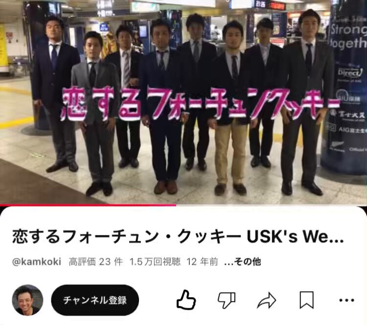
レベルファイブ、AI疑惑に回答 新「妖怪ウォッチ」の“不自然な電線”は手描き、一部は人的ミス……修正版公開へ

レベルファイブ、AI疑惑に回答 新「妖怪ウォッチ」の“不自然な電線”は手描き、一部は人的ミス……修正版公開へ
4歳娘「おまえやりーーまーーすねスギィ」ワイ「ファ？！！」

4歳娘「おまえやりーーまーーすねスギィ」ワイ「ファ？！！」 : ハムスター速報
大名作「アーケード版 電脳戦機バーチャロン」を、PCへ勝手移植するプロジェクトが始動!!
本作は、現時点で8体のファイターを吸い出すのに成功し、現在は再構築をする作業をしているのだとか。
ここ数ヶ月、セガのアーケード基板まわりの個人開発が、かなり激アツだッッ!!
https://
reddit.com/r/virtualon/co
mments/1wi8poo/working_on_the_arcade_recomp_happy_little/
…

国連事務総長、AIリスクの警鐘「無視するわけにいかぬ」 国際連携訴え
国連事務総長、AIリスクの警鐘「無視するわけにいかぬ」 国際連携訴え
日経平均株価、米追加利上げに警戒（先読み株式相場）

日経平均株価、米追加利上げに警戒（先読み株式相場）
【朗報】ローソンさん、“300円以下”の潔すぎる弁当を発表
こういうのでいいんだよこういうのでと話題に

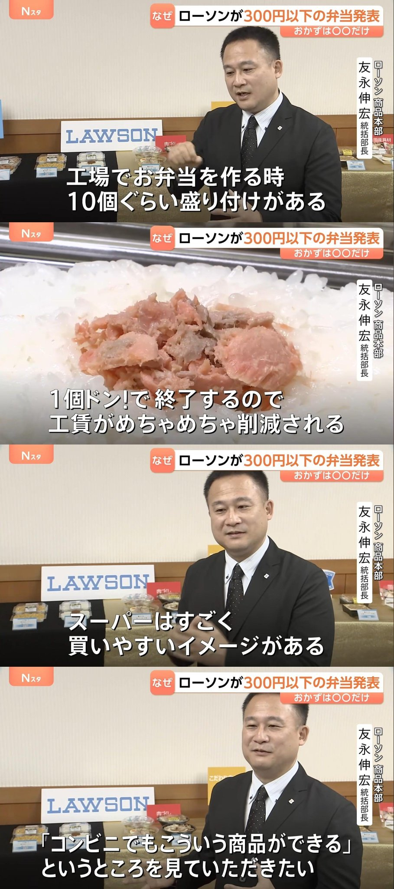
高市首相17日に内閣改造 維新入閣、政権の骨格維持
https://
nikkei.com/article/DGXZQO
UA1065O0Q6A910C2000000/?n_cid=SNSTW005&n_tw=1789596222
…
木原稔官房長官や片山さつき財務相ら主要閣僚が続投の方向。日本維新の会の幹事長だった中司宏氏を新たに閣僚に起用する見通しです。

高市首相17日に内閣改造 維新入閣、政権の骨格維持
あー、モバプリさんがポロリしそうなやつか。稲垣さんは何回か答え言ってるやん！となったことはあったが。 #アップ738
ChatGPTで「高度なアカウントセキュリティをオンにしよう」とか出てきたからオンにしたらスマホからログインできなくなった。どうすりゃいいの？とChatGPTに訊いたら「高度なアカウントセキュリティをオフにしてください」との事でオフにしたらログインできた。なんじゃこりゃ
Apple Storeにジーニアスバーが帰ってくるかも？
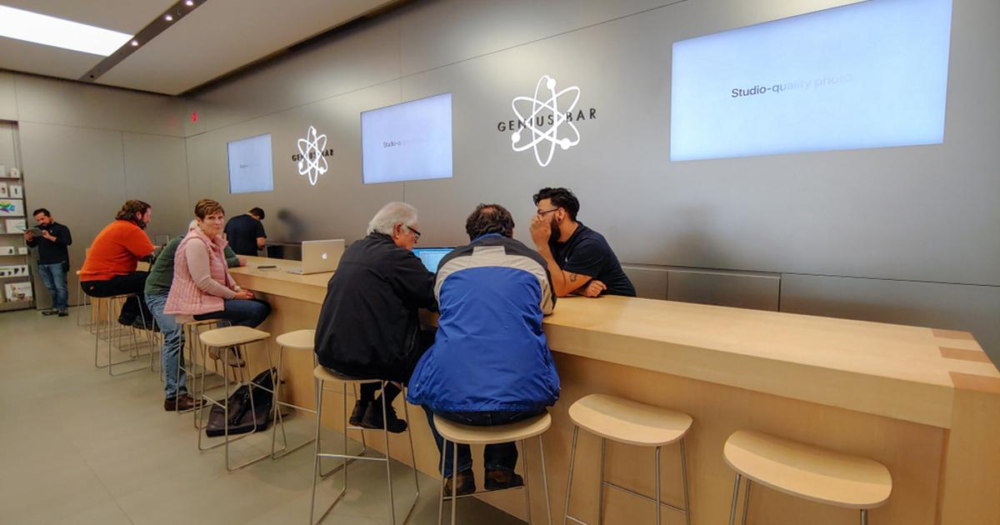
Apple Storeにジーニアスバーが帰ってくるかも？ | ギズモード・ジャパン
絶妙なタイミングで自身の記事が出るのは番組的にはありがたいねぇ。 #アップ738
TGS2026 へ
NHK世論調査の各党支持率。だいたい予想通りだけど、年齢別で立憲民主の支持率は40歳未満が0.7％に対し、80歳以上は6.9％（野党の中で最多）という極端な数字が出てる。↓
各党支持率「自民党」35.9％ 「支持なし」37.6％ NHK世論調査 | NHKニュース
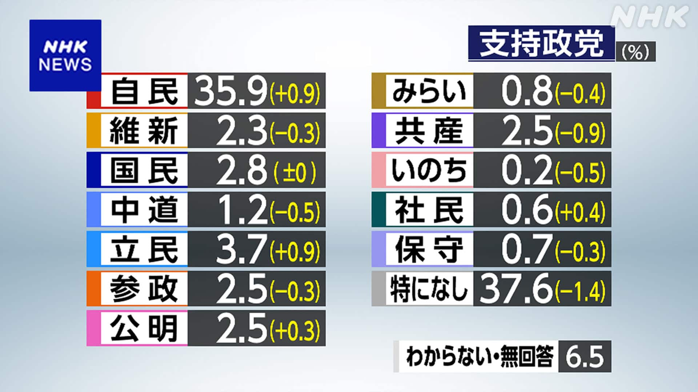
各党支持率「自民党」35.9％ 「支持なし」37.6％ NHK世論調査 | NHKニュース
ITmedia NEWSさんがリポスト
【AIサポートデスクへの道】9月18日（金）13:00～13:30 ITmediaの中堅中小企業向けオンラインイベント「変わる情シス 2026 夏」に株式会社出前館の糸山堅太氏が登壇。社内サポートを1つの窓口にまとめ、AIチャットボットが答えられる状態にするまでの道のりをお話しします。
株式会社出前館

単なる便利な道具から私たちの代わりに仕事を進めてくれる頼れるパートナーへ、AIは日々進化を続けています。しかし、多くの中堅・中小企業がいまだに旧来のやり方に留まり、変化を追い風にできないでもがいています。IT活用力の差は会社が生き残れるかどうかの境界線。様子見を続けている間に、ライバルとの差は埋められないほどに広がってしまいます。本イベントでは、AIが当たり前に現場を支える未来を見据え、情シ...
members09.live.itmedia.co.jp
見えにくい障がいや病気について | 佐々木俊尚「毎朝の思考」/ Voicy - 音声プラットフォーム

見えにくい障がいや病気について | 佐々木俊尚「毎朝の思考」/ Voicy - 音声プラットフォーム
田村淳さんのサングラスに心ないことばを投げる人たち。そして潰瘍性大腸炎という安倍首相の難病にひどい嘲笑を投げていた人たち。病気や障がいが社会とつながりにくい問題について。↓

三池隆監督が初めてのドキュメンタリーとして、歌舞伎の市川團十郎襲名披露を描く。凝った演出があるわけでもなくもの凄くストレートな映画なんだけど、その演出こそが團十郎の底なしの凄さやオーラをスクリーンに叩きつけていて圧巻。私は歌舞伎にあんまり詳しくないのですが、最後まで食い入るように

襲名
襲名 - K2 Pictures
車輪の跡 - 園田羊 | 少年ジャンプ＋

車輪の跡 - 園田羊 | 少年ジャンプ＋
何もかもうまく行かない青春。リアルにつらいけど、心に沁みる作品でした。↓

クマを「正しく恐れる」方法について書いています。特にこれ。「もうひとつ注意しなければならない点がある。それは「新聞やテレビのクマ報道は騒ぎすぎ」という点である。これも山岳にかかわる仕事に就く多くの人が指摘している。以前ならクマによる人身事故だけがニュースになっていたのが、クマ害が
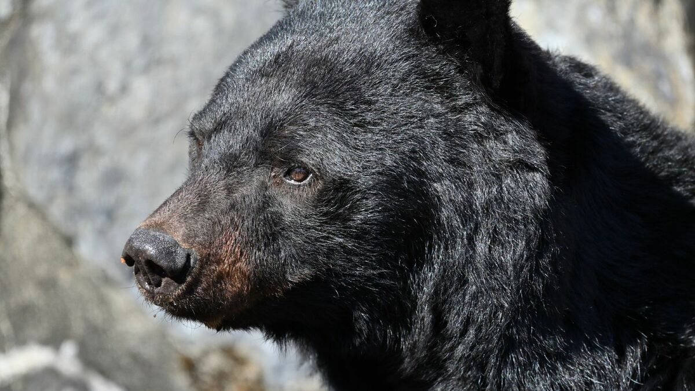
昨年話題になったクマ被害…登山時に知るべき｢正しい恐れ方｣とは？自然破壊が原因ではない《クマ害》増加の背景

昨年話題になったクマ被害…登山時に知るべき｢正しい恐れ方｣とは？自然破壊が原因ではない《クマ害》増加の背景
トラペン（死語）かと思った
橋本幸士 Koji Hashimoto
@hashimotostring
AIで生成していないということが分かるように，昨年暮れから発表スライドは手書きにしています． x.com/hashimotostrin…
シャドーAI（会社に言わずにこっそりAIを活用）が広まる理由。ある会社員は、AI活用を上司に報告しても「さらに仕事が増えるか、そうでなくてもノウハウ共有を求められるだけ。評価制度上、仮にやったとしても自分の昇格や昇給にはつながりそうもないので、頑張る意味が見いだせない」と。米国の調査で
「AIで効率化しても仕事が増えるだけ」──月○時間浮かせても報告しない社員たち 広がる“AI版静かな退職”

「AIで効率化しても仕事が増えるだけ」──月○時間浮かせても報告しない社員たち 広がる“AI版静かな退職”
次のパンデミックでワクチンを打ちますか？ 日本人2万人以上を調査 東大などNature系列誌で発表
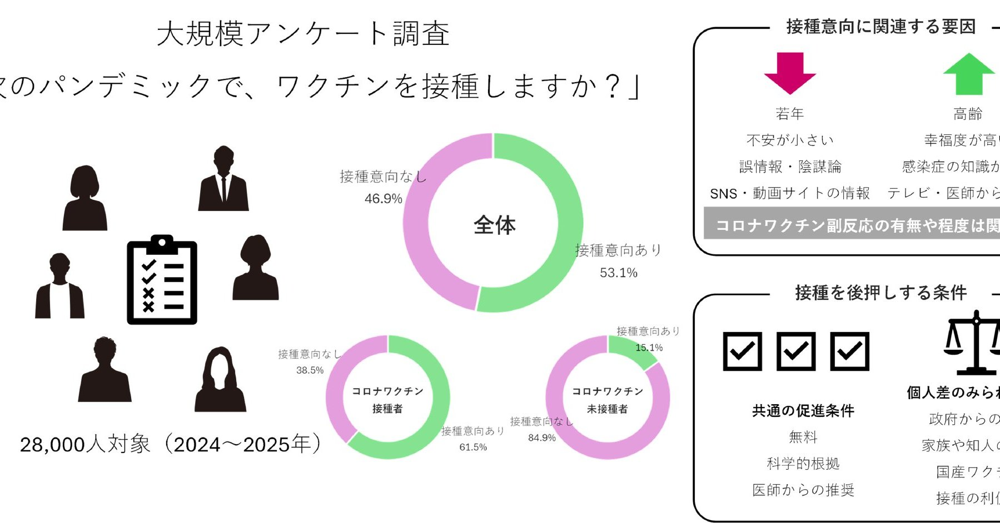
次のパンデミックでワクチンを打ちますか？ 日本人2万人以上を調査 東大などNature系列誌で発表
“良い上司”ほど、部下の労働はラクになる？ 上司の質が及ぼす影響、2万人超から分析 ロンドン大
“良い上司”ほど、部下の労働はラクになる？ 上司の質が及ぼす影響、2万人超から分析 ロンドン大
山形のスーパー・エンドーのげそ天！ここ私も食べに行ったことあるけど、めちゃめちゃ美味かったです。羽前千歳駅前というローカルな立地、スーパーと食堂が混在してるような不思議な店内、注文の仕方など何もかもが異次元でした。↓
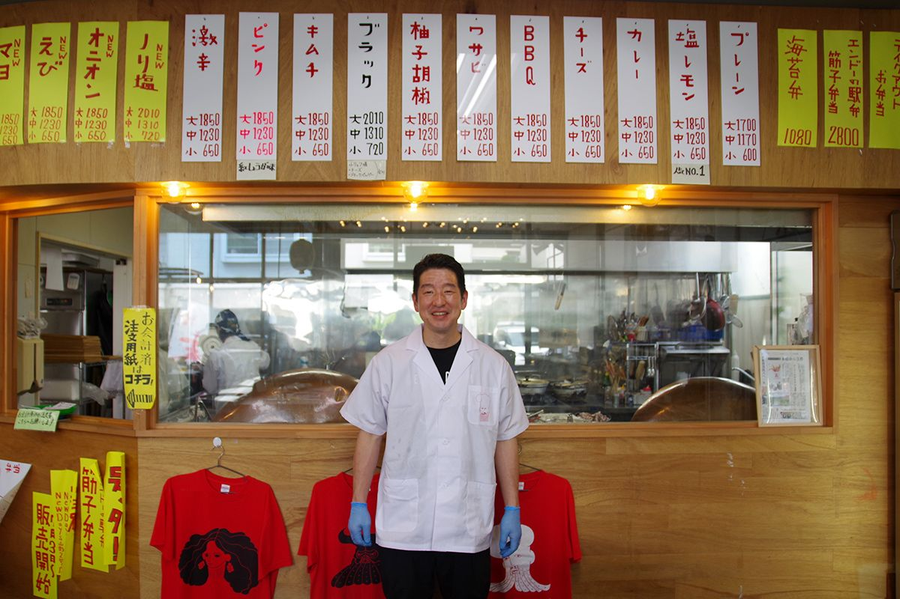

元気がなかった山形のローカルスーパー「エンドー」が、げそ天とデザインの力で全国から客が集まる人気店に生まれ変わった訳 - SUUMOタウン

元気がなかった山形のローカルスーパー「エンドー」が、げそ天とデザインの力で全国から客が集まる人気店に生まれ変わった訳 - SUUMOタウン
Torishima / INTPさんがリポスト
私たちは、OpenAIにおけるモデルのミスアライメントの事例を追跡、調査、開示するための新しいフレームワークを共有します。

Our framework for reporting model misalignment
無人タクシー、東京で来年運行へ GO、Waymo、日本交通が合意

無人タクシー、東京で来年運行へ GO、Waymo、日本交通が合意
いよいよ東京でも無人タクシーが。グーグル傘下のウェイモとGO、日本交通が合意し、完全無人走行（自動運転レベル4）による商用タクシー運行を2027年中にスタートする模様。↓

【終わり】赤い羽根募金、さらなる使途不明金が判明→ネット「良いことしたと思ってたら、おっさんの遊ぶ金になっていた」「もう二度と募金しない」 #炎上

【終わり】赤い羽根募金、さらなる使途不明金が判明→ネット「良いことしたと思ってたら、おっさんの遊ぶ金になっていた」「もう二度と募金しない」 - オレ的ゲーム速報@刃の記事ページ
jin115.com
シルバー人材の最適業務をAI選定、企業･高齢者に提案へ 厚労省新事業
https://
nikkei.com/article/DGXZQO
UA089O10Y6A900C2000000/?n_cid=SNSTW005&n_tw=1789559121
…
AIがハローワークの求人を分析してシニア層にも可能な仕事を洗い出し、シルバー人材センターが仲介。学校や医療機関、保育施設での業務を想定します。
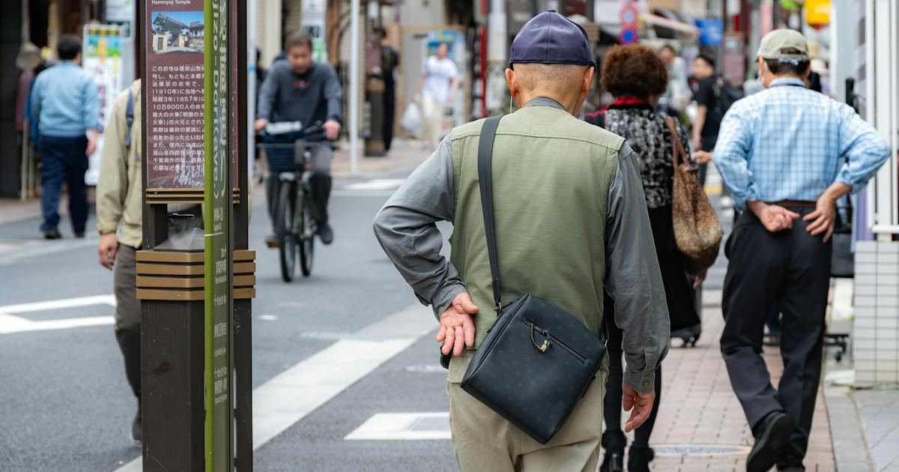
シルバー人材の最適業務をAI選定、企業･高齢者に提案へ 厚労省新事業
おはようございます。今日は9月17日、木曜日。
＜私たちが決めました
猫458匹以上が“審議員”に 猫用爪とぎ「つめまる」新モデルのやすりの位置を、猫たちの使い比べで決定
https://
nlab.itmedia.co.jp/cont/articles/
4016269/
…

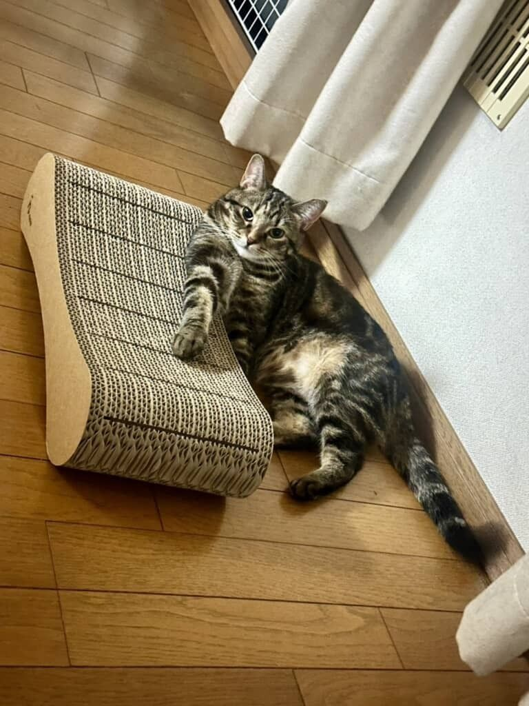

【朗報】警察さん、飲酒運転を開き直る男に冷静なツッコミを見せる


栗田耕作
@krtksk
三木道三はLifetime Respectよりこっちの曲の方が好き
「非常に好評」王国建設デッキ構築ストラテジー『9 Kings（9 キングス）』新コンテンツ追加と共に11月12日正式化決定
https://
gamespark.jp/article/2026/0
9/17/172387.html?utm_source=twitter&utm_medium=social&utm_content=tweet
…
無料で試遊ができるモバイル版も、2026年10月12日より配信予定です。
@HoodedHorse_JP
https://
x.com/HoodedHorseInc
/status/2100211921588732029/video/1
…


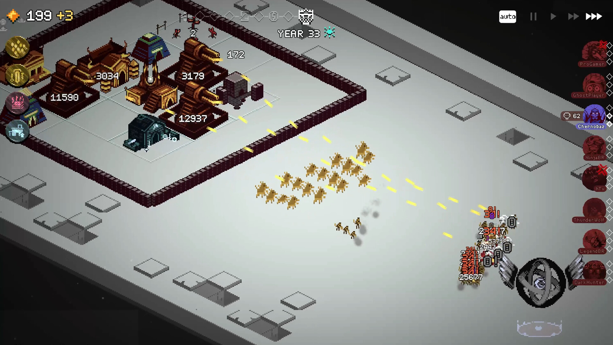
「BanG Dream! Our Notes（アワーノーツ）」メディア向け体験会レポート。“明るい闇”を描く「millsage」と，苦難を爆音でかき消す「一家Dumb Rock!」が登場
https://
4gamer.net/s/G097456.2609
15003
…
サービス開始時には5バンド各20話，計100話のストーリーをフルボイスで収録。オート視聴では約24時間のボリュー…

エンドスさんがリポスト
国連グテーレス事務総長 AI開発競争 国際的な規制必要と訴える
https://
news.web.nhk/newsweb/na/nd-
20260917de50717
… #nhk_news

国連グテーレス事務総長 AI開発競争 国際的な規制必要と訴える | NHKニュース
【悲報】「1日30分寝れれば余裕」と豪語するショートスリーパー堀大輔さん、生配信での証明を試みるも寝不足でスマホと電子タバコを間違える
嘘つき確定で就寝刑へ

製造業AIのキャディがユニコーンに
https://
nikkei.com/article/DGXZQO
UC112PH0R10C26A9000000/?n_cid=SNSTW005&n_tw=1789561054
…
同社は製造業向けにAIを使ったデータ基盤を提供。図面解析サービスが自動車業界を中心に伸びています。このほどムーア・キャピタル系のVCなどを引受先とする第三者割当増資で102億円を調達しました。

製造業AIのキャディがユニコーンに トヨタ系などから102億円調達
FRB、「信認防衛」の利上げ マネー先細りで株価は急落
FRB、「信認防衛」の利上げ マネー先細りで株価は急落
トランプ氏「米金利、1％以下に下げよ」 FRB・議長は名指しせず

トランプ氏「米金利、1%以下に下げよ」 FRB・議長は名指しせず
『神アプリ』全巻「99円」セール！全27巻「19,008円」→「2,673円」！『怨み屋本舗』栗原正尚先生描く、万能スマホを手にした男のデスゲーム漫画！スピンオフも全巻99円 #セール情報
『神アプリ』全巻「99円」セール！全27巻「19,008円」→「2,673円」！『怨み屋本舗』栗原正尚先生描く、万能スマホを手にした男のデスゲーム漫画！スピンオフも全巻99円 - オレ的ゲーム速報@刃の記事ページ
jin115.com
りそな、口座アプリで飲食店などの優待サービス
https://
nikkei.com/article/DGXZQO
UB162160W6A910C2000000/?n_cid=SNSTW005&n_tw=1789566938
…
口座アプリで利用できる優待サービス「りそなプラス」で、利用者全員に10万件のクーポンを利用できるようにします。地銀に基盤提供することも視野に入れ、新規顧客の獲得を狙います。

りそな、口座アプリで飲食店などの優待サービス 地銀への提供も視野
Torishima / INTPさんがリポスト
超かぐや姫！Blu-rayの初週売上が出てました
特装版2.7万枚、通常版0.9万枚で合計3.6万枚だそうです

FRBが3年ぶり利上げ決定、年内あと1回予想 議長「インフレ高すぎる」
https://
nikkei.com/article/DGXZQO
GN14A180U6A910C2000000/?n_cid=SNSTW005&n_tw=1789593714
…
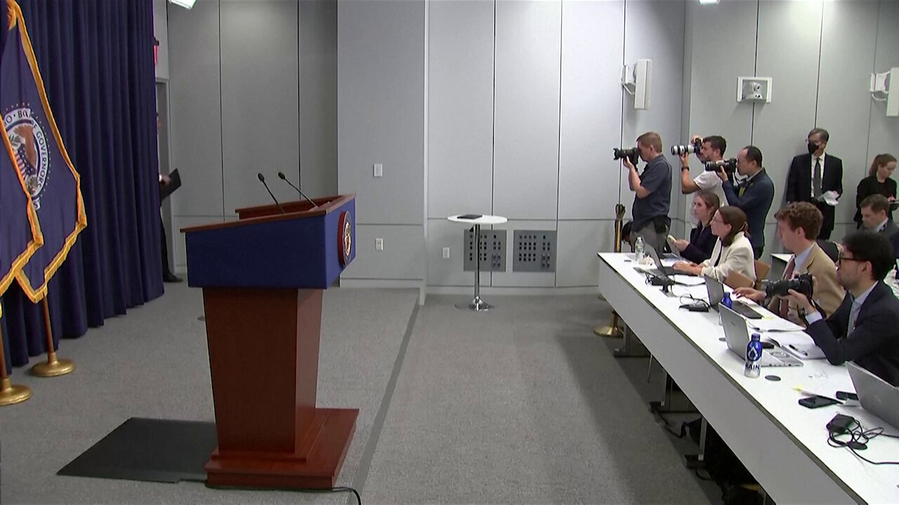
FRB利上げ、「長期金利の急騰リスク抑える」 米市場関係者に聞く

FRB利上げ、「長期金利の急騰リスク抑える」 米市場関係者に聞く
個人的にこの「レイトレーシング化された勝手移植なウェーブレース64」は、かなり新しい形の作品だと思っている。
そのままPCで単独起動するだけではなく、PCならではの技術を取り込み、更に当時では不可能だった機能を追加し、MODを導入……、来年はこの手の流れの作品が増えていくんじゃないかなぁ。
お国の意向というよりは、興行として成り立たせるのが難しいと映画館が判断したのかも。特定の系列の映画館での上映が目立つというのが気になるところ。那覇は桜坂劇場ってのは支配人が興行として成り立つと判断したんだろうなぁ…。

遠藤 美加子
@boydalan279
言論統制、芸術統制きました
#ネルソンさん、あなたは人を殺しましたか？ わずか8館、公開3日間でわずか動員7900人の異例ヒット
この作品はもっと多くの人が観れるようにするべきだ
何故国内では8館しか上映されないのでしょう
お国の意向ですか
高市にも見て、感想を長文でポストしてもらいましょう
ニンテンドー64の名作『ウェーブレース64』が、レイトレーシング化され、PCに勝手移植!!
本作は、レイトレーシングによる水面や空の反射、シャドウに対応するほか、16:9/ウルトラワイド、高解像度化、波の補間、各種オブジェクトや水面の描画距離拡張などを実装。

Torishima / INTPさんがリポスト
いつものように、僕とhamilがDenny'sで戦闘シーンの全計画を立てた話のスレッドを投下するよ、ストーリーボードのちょっとした部分も見せるね。
めっちゃ楽しかったんだけど、今は締め切りがあって仕事に集中しないとだから、ちょっと待っててね、またすぐ戻るよ、ばいばーい
中国・習近平国家主席、救急搬送されたという情報が拡散される #韓国・中国
中国・習近平国家主席、救急搬送されたという情報が拡散される - オレ的ゲーム速報@刃の記事ページ
jin115.com
Torishima / INTPさんがリポスト
このプロジェクトはかなり厳しいスケジュールでした。締め切り当日に最後の作監修正を受け取りましたが、それでもなんとか完成できたので嬉しいです。時間的な問題でいくつか課題がありましたが、少しずつクリーンアップしていく方向で進めます。
最大4人で手分けして1台の車を運転する協力アドベンチャー『Split Ride』発表！ 絶景スポットで写真も撮れる
1人目はハンドル、2人目はギア、3人目はダッシュボード、そして4人目は地図を担当します。
https://
gamespark.jp/article/2026/0
9/17/172386.html?utm_source=twitter&utm_medium=social&utm_content=tweet
…

Torishima / INTPさんがリポスト
再び私の仲間ハミルが関わったRe:Zeroを手伝うことができて光栄でした。このシーンのストーリーボードとアニメーションを担当する許可をいただきました。小原昌宏さんに私のパートのチェックをしていただき、佐川遥香さんと真帆さつきさんに素晴らしい修正をしていただき、本当にありがとうございます

セールスフォース、「SaaSの死」懸念払拭に躍起 株価安値から7割高

セールスフォース、「SaaSの死」懸念払拭に躍起 株価安値から7割高
京都市営地下鉄の「京まふ」のアナウンスが今も流れているのが気の毒で仕方がない。どうせ悪質な愉快犯だろうが、厳正な処罰を望む。#上坂すみれ #京まふ
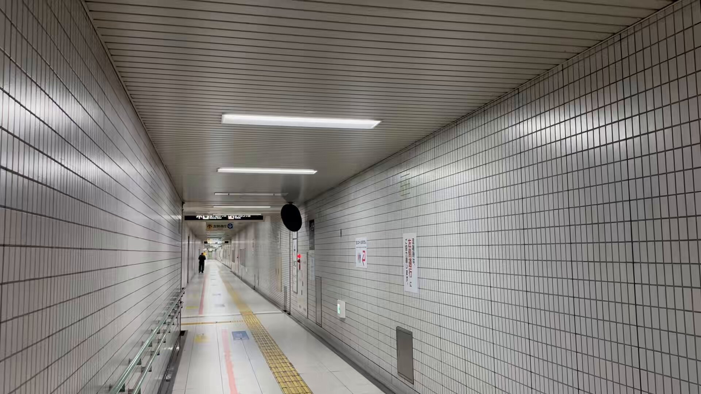
京都新聞
@kyoto_np
【速報】人気声優・上坂すみれさん、PR大使務める「京まふ」出演辞退 「悪質な殺害予告」受け
https://
kyoto-np.co.jp/articles/-/179
1724?utm_term=Autofeed&utm_medium=Social&utm_source=Twitter#Echobox=1789532246
…
配布への躊躇がなさすぎる

こめお、食中毒起こした割烹料理店の「8800円朝食」が波紋…保健所からも「ありえない」苦言で前途多難(SmartFLASH)
#Yahooニュース
こめお、食中毒起こした割烹料理店の「8800円朝食」が波紋…保健所からも「ありえない」苦言で前途多難（SmartFLASH） - Yahoo!ニュース
米老舗シェール企業、ベネズエラで石油開発へ G20エネ会合で発表

米老舗シェール企業、ベネズエラで石油開発へ G20エネ会合で発表
むくり。
プーチン氏、侵略後初の下院選「ロシアの勝利に貢献」 団結呼びかけ

プーチン氏、侵略後初の下院選「ロシアの勝利に貢献」 団結呼びかけ
アンソロピックの警告にザッカーバーグ氏反論 AI開発協調減速に賛否
アンソロピックの警告にザッカーバーグ氏反論 AI開発協調減速に賛否
中国上場企業の4社に1社が赤字、1〜6月 AI特需と内需不振で二極化

中国上場企業の4社に1社が赤字、1〜6月 AI特需と内需不振で二極化
国内カメラ市場に異変、「コダック」台数首位 スマホ未満がエモさ演出
国内カメラ市場に異変、「コダック」台数首位 スマホ未満がエモさ演出
スタバの日本事業売却、少数出資を検討 中韓の先例生かす

スタバの日本事業売却、少数出資を検討 中韓の先例生かす
東京ゲームショウきょう開幕 最長５日間、最多53カ国・地域から出展
東京ゲームショウきょう開幕 最長5日間、最多53カ国・地域から出展
中国、原油輸入拡大に転換 現物価格4カ月ぶり水準に押し上げ
中国、原油輸入拡大に転換 現物価格4カ月ぶり水準に押し上げ
スピンオフが速める再編 石油化学の専業上場へ、企業価値「見える化」

決算:スピンオフが速める再編 石油化学の専業上場へ、企業価値「見える化」
ソフトバンクG、1兆円社債きょう発行 高まる「1社偏重リスク」

ソフトバンクG、1兆円社債きょう発行 高まる「1社偏重リスク」
ホロライブの人気Vtuberたち、実写配信でそれぞれの「腕」が映される！→1人だけ腕が太くね・・・？ #VTuber
ホロライブの人気Vtuberたち、実写配信でそれぞれの「腕」が映される！→1人だけ腕が太くね・・・？ - オレ的ゲーム速報@刃の記事ページ
jin115.com
NYダウ急落一時800ドル安 FRB利上げ、円156円台前半に下落
NYダウ急落一時800ドル安 FRB利上げ、円156円台前半に下落
「中間選挙後は株高」の経験則 2026年も通用するか？（馬渕磨理子）

「中間選挙後は株高」の経験則 2026年も通用するか？（馬渕磨理子）
売れなかったから下がる
まだまだ下がりそうね
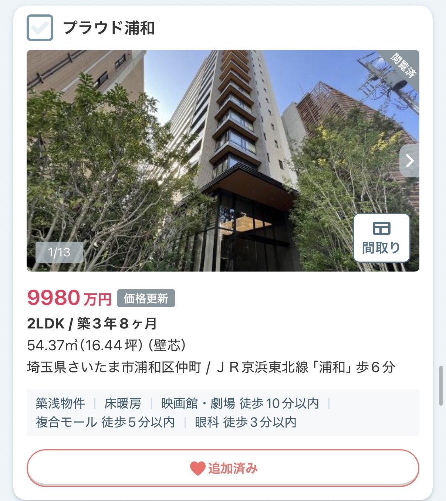
ガジュマン
@gajumanwatch
【価格改訂】
プラウド浦和
12,980万→9,980万（▲3,000万）
一撃3,000万の価格改訂
こわいのはこれでも全然高いということ
Gemini 3.8 Flash 、事前に japanese-tech-writing スキルとかを入れておいた上で調整させると本当に一発で綺麗な日本語になるので”””脱臭””””マシーンとして優秀だな、Grok くんも速いのでもうちょっとライティングがうまければいいのだが・・・

Torishima / INTPさんがリポスト
アニメ生成AI。
現在のところ、絵やアニメが作れない人が用いる事例が多いように見受けられます。
ゆえに、絵云々よりも、カット配列や尺の切り方が、素人さんっぽい。
いわゆる「段取りをそのまま絵コンテ〜映像化してしまう」初心者の事例。
ではプロのスキルを持つ人が使ったら、どうなる？
６月までには日本、完全にどうなるんだったっけ？
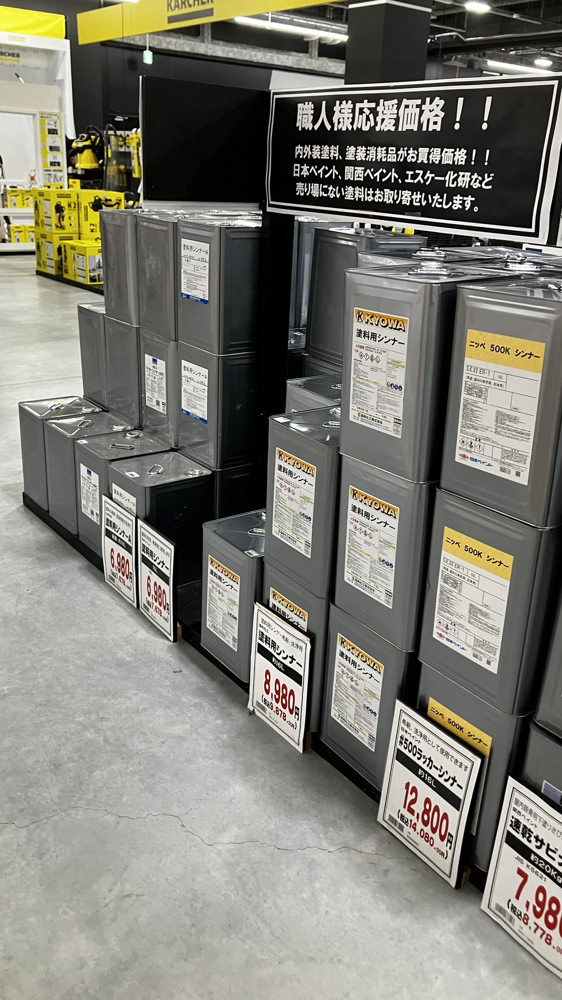

じゅんいちろう｜物語る建築士
@PapalotX
【朗報】日本のシンナーが枯渇すると大騒ぎしてたマスコミさん、現場を見に来てください。
久しぶりにホームセンター来たら、シンナーの一斗缶は山積みだし、シーリング材なんて棚から溢れそうなほど売ってますよ。
危機だ！と煽るだけでなく、物流が戻ったこともちゃんと報道してくださいね。
国の金、余ってんの？
何考えてんの？
日本経済新聞 電子版（日経電子版）
@nikkei
減税後の新給付、財源1.8兆円なら3700万人に最大5万円 専門家が4試算
https://
nikkei.com/article/DGXZQO
UA152T20V10C26A9000000/?n_cid=SNSTW001&n_tw=1789494802
…
ウォーシュ議長「インフレは高水準」と声明 FOMC記者会見へ

【FOMC】 ウォーシュ議長「インフレは高水準」と声明
Haruhiko Okumuraさんがリポスト
MacBook Airで動作するより優れたローカルモデルをお探しですか？
最新のアップデートにより、Mac向けGoogle AI Edge GalleryアプリにGemma 4 12Bの完全サポートが追加されました。
マルチモーダル：ビジョン＆オーディオ入力
設定可能なビジョントークン予算
超高速推論のためのMTP

レゾナックや日東電工、700億円ファンド出資 ハードでAIの課題解決
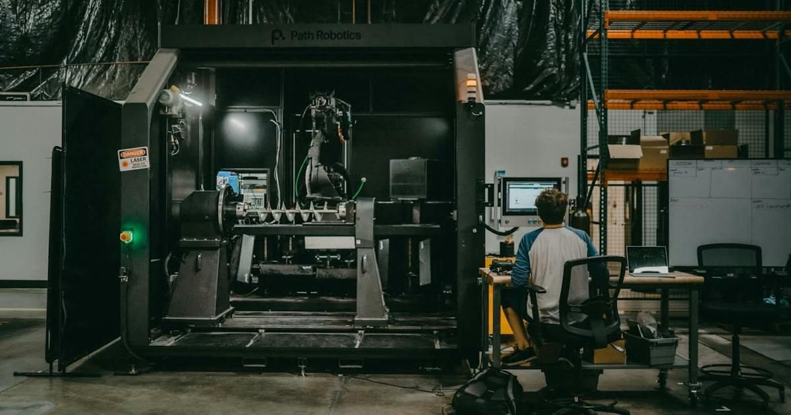
レゾナックや日東電工、700億円ファンド出資 ハードでAIの課題解決
FRB、3年2カ月ぶり0.25％利上げ決定 年内あと1回の利上げ予想
FRB、3年2カ月ぶり0.25%利上げ決定 年内あと1回の利上げ予想
26歳交際経験なし独身男性のお部屋がこれです」ﾊﾟｼｬｯ → 理想の一人暮らしと称賛されまくるｗｗｗｗｗ #雑談・その他の話
26歳交際経験なし独身男性のお部屋がこれです」ﾊﾟｼｬｯ → 理想の一人暮らしと称賛されまくるｗｗｗｗｗ - オレ的ゲーム速報@刃の記事ページ
jin115.com
なるせひろのりさんがリポスト
ここで騒いでる連中の殆どはこの制度の増額で影響無く恩恵を受ける側でしょ？！
実際に増税されるのは僕とかなので
スレ見てると言葉に出来ない怒りが湧いて来る
なんとかならんかなこの愚かな連中
…ならんやろなー

爆裂大和魂
@tanakaseiji15
【悲報】厚生年金保険料、更に増額へ
また！
増税だ！
ふざけんな！
自民党！
#高市ﾓｰﾑﾘ
今年はご飯が美味しく食べられそうですね。
よかったよかった

JAcom農業協同組合新聞
@JAcom_nokyo
「まっしぐら」「はれわたり」1万円 青森・集荷組合が前渡し金 「コスト指標、市場と乖離」
https://
jacom.or.jp/articles/8TsAh
ja_tn7cPh5zeqSDO
…
トヨタ出資の米自動運転メイ・モビリティー、ナスダックに年内上場へ

トヨタ出資の米自動運転メイ・モビリティー、ナスダックに年内上場へ
台風25号が発生、連休にかけ日本に影響か 気象庁

台風25号が発生、連休にかけ日本に影響か 気象庁
Cowork 統合されるのか・・・
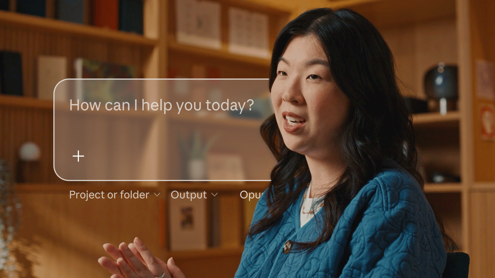
Claude
@claudeai
Claude Coworkとチャットが1つのClaudeに統合されます。
簡単な質問をしたり、レポートを渡したりすると、Claudeがそこから引き継ぎ、ラップトップを閉じた後も対応します。何か不明瞭な点があれば、Claudeが尋ねます—最終決定はあなたにあります。
今後数週間でProとMaxに展開されます。
自民党役員人事、麻生派頼みの党内基盤 総裁選へ鈴木幹事長を再任

自民党役員人事、麻生派頼みの党内基盤 総裁選へ鈴木幹事長を再任
アイプラ サニピ そろった、、さくら雫かわ、、
SNSの年齢制限拡大、EU「デジタル成年」15歳に 米国でも規制論

SNSの年齢制限拡大、EU「デジタル成年」15歳に 米国でも規制論
レベルファイブ、AI使用巡る物議で詳細説明―「妖怪ウォッチ2 覇道」の"AI疑惑"は人的ミスや意図的省略も。修正版PVをTGS開始時に公開へ
https://
gamespark.jp/article/2026/0
9/17/172385.html?utm_source=twitter&utm_medium=social&utm_content=tweet
…

#dnb / #RosebayMusic
Submorphics - Time Moves Slow (ft. Whitt)
https://
youtube.com/watch?v=qVETIF
jt4pA&list=PLcppOT58QzbQ
…
"Time sure moves slow with this lush liquid bit from Submorphics"
Torishima / INTPさんがリポスト
デミス・ハサビスやシェーンレッグがもうほぼほぼAGI到達は近いといってるのやばすぎる。サム・アルトマンやダリオアモデイではなく。真の科学者気質の彼らが。

Demis Hassabis
@demishassabis
20年以上にわたり@ShaneLeggと私は、AGIが経済、科学、社会に与える潜在的な影響について議論してきました。DeepMind
CD取り込んだの何年ぶりだろ・・・
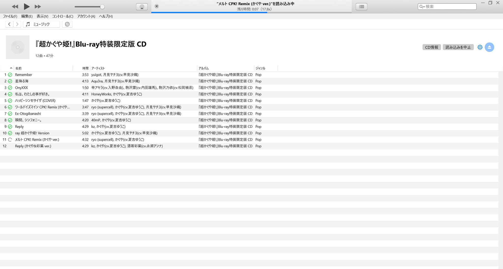
#dnb / #TrustAudio
Brook - Size
https://
youtube.com/watch?v=3IQENh
ohAAI&list=PLcppOT58QzbQ
…
"Brook return to Trust Audio by representing the underground in its purest form. His sophisticated and unapologetic sound is unmistakable. A serious producer, get to know!"
めっちゃGMKしていらっしゃるな〜（流石に２日連続外出はきつくて・・・）
学園祭か何かで2人で踊る際に「任せて！私、ダンスは経験があるもの！」と200年前の記憶を頼りにエスコートしようとするも茉里が持ち前の運動神経によって秒で動きをマスターしてしまって「…あーもう、危なっかしいわ」と逆に手を取られる側になってしまい不本意そうなララの図見て～(ここまで一呼吸)
Torishima / INTPさんがリポスト
ワオ、ステルスモデルUnion Alphaがベンチマークで限界まで突き詰められていないことを、めっちゃ願うよ
これ、めっちゃすごいね
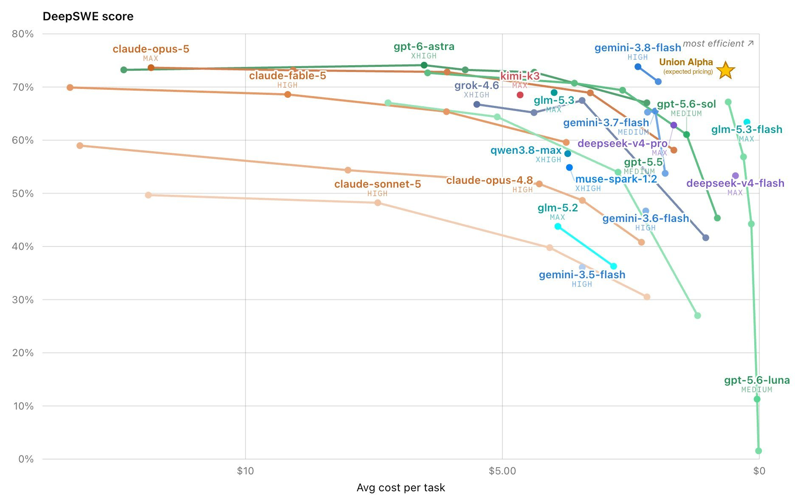
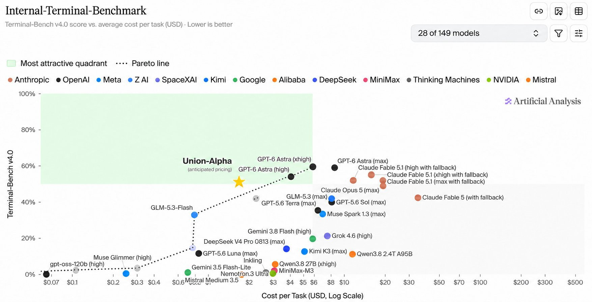
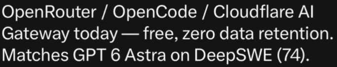
Leon Lin
@LexnLin
なんだあの化け物？？
deepsweではgpt astraに匹敵するかもしれないし、Internal-Terminal-Benchmarkでは驚くほど凄い見た目だよ x.com/opencode/statu…
F1・2027年日程発表 日本GPは4月、初のスプリントレースも

F1・2027年日程発表 日本GPは4月、初のスプリントレースも
こいつらは有事になれば必ず米を隠して釣り上げる。
既に去年の前科がある。
有事を自作自演で作り出して米を隠して混乱を引き起こした張本人だ
転売屋に食を任せることなど絶対にできない
それ位なら多くの国と融通する方が安全保障的にはるかにマシ
芋子
@cDihc33V8344893
平時に農業を採算が合わない状態まで衰退させて、農地や農家が減ってしまったあとで、
「有事になったから、さあ国内で食料を増産しよう」
と言っても、農地も人も技術も資材も一朝一夕には戻ってこない。
Torishima / INTPさんがリポスト
Claude Coworkとチャットが1つのClaudeに統合されます。
簡単な質問をしたり、レポートを渡したりすると、Claudeがそこから引き継ぎ、ラップトップを閉じた後も対応します。何か不明瞭な点があれば、Claudeが尋ねます—最終決定はあなたにあります。
今後数週間でProとMaxに展開されます。
『モンスターハンターワイルズ』アプデVer.2で快適性が大幅向上！身だしなみチケット廃止、武器交換高速化など多数のリファイン実施
https://
gamespark.jp/article/2026/0
9/17/172384.html?utm_source=twitter&utm_medium=social&utm_content=tweet
…

去年、米価格を異常に釣り上げた真犯人たちが、その報いを受け始めた
最高にメシが美味い展開を国民みんなで共有しようではないか！！
目先の小銭に釣られて後先考えないからこうなる
全員が農家を監視しないと、こいつらはまたやらかすのだ
よいち
@Cg8fA28MG1Dty5i
全農青森13800円
集荷10000円
絶望感
『アサクリ』トランプに“隠し刃”が搭載されている！？『モンハン』や『ブラボ』など人気ゲームの公式ライセンストランプ全20種が9月17日より予約開始
https://
gamespark.jp/article/2026/0
9/17/172383.html?utm_source=twitter&utm_medium=social&utm_content=tweet
…
気になる
有安 伸宏 / Nobuhiro Ariyasu
@ariyasu
キャディのシリーズD調達がリリースされました！
https://
caddi.com/ja-jp/news/pre
ss/series-d-funding/
…
Moore Strategic Ventures、Coreline Venturesをはじめとする新規・既存投資家8社を引受先として、総額177億円のシリーズDラウンドの契約を締結しました。
体育で「ペア組んで」と言われ誰とも組めなかった女子中学生さん、先生に「組めないお前が悪い。成績付けない」と言われ体育館を飛び出す → 結果・・・ #雑談・その他の話

体育で「ペア組んで」と言われ誰とも組めなかった女子中学生さん、先生に「組めないお前が悪い。成績付けない」と言われ体育館を飛び出す → 結果・・・ - オレ的ゲーム速報@刃の記事ページ
jin115.com
『モンハンワイルズ：アセンダンス』でキャラクリが仕様変更！身だしなみチケット撤廃、無料で何度でも再編集可能に
https://
gamespark.jp/article/2026/0
9/17/172382.html?utm_source=twitter&utm_medium=social&utm_content=tweet
…
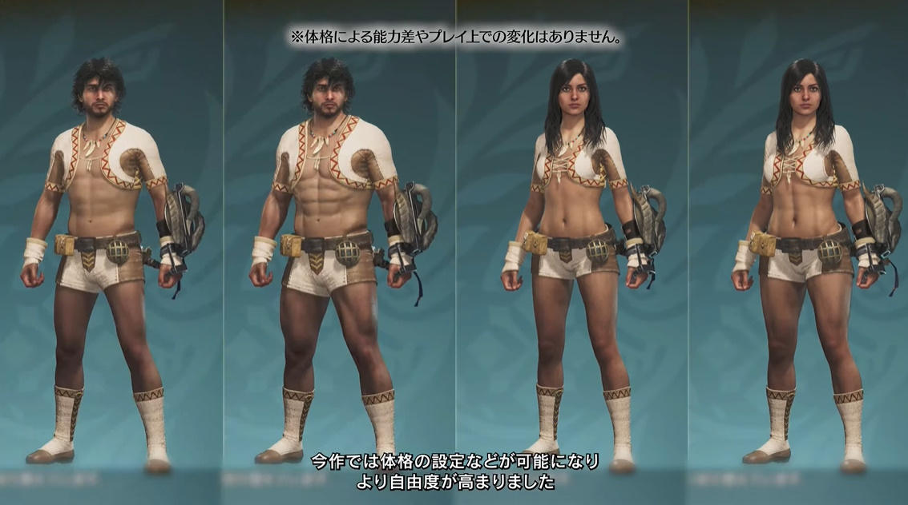
ChatGPTは「DUVだけでEUVは作れてないからまだ慌てるような段階じゃない」って言ってたけどな
ロイター テクノロジー
@ReutersJpTech
中国が国産ＤＵＶ露光装置の製造開始と報道、ＡＳＭＬ株急落
https://
reut.rs/4AyKm4n
Torishima / INTPさんがリポスト
当店の従業員の見た事ないツイート
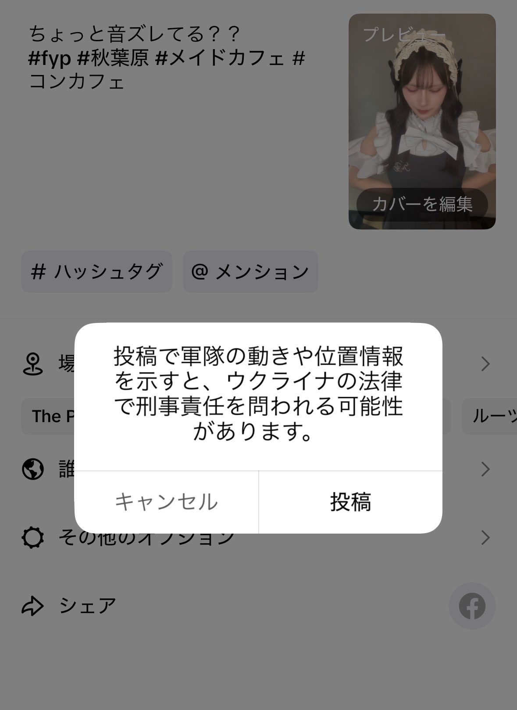
るみや
@rumiya_IDOLY
戦時中すぎる勧告出てきた x.com/rumiya_idoly/s…
AIにも哲学はあった

摩耶
@ikuiku81O114514
x.com/nico_nico_news…
「戦争反対」勢は主要銀行の一つも使えなくなりそうで、大変ですな。
47NEWS
@47news_official
【速報】三菱UFJ銀行、防衛産業に融資へ
https://
47news.jp/14951765.html?
utm_source=twitter&utm_medium=social&utm_campaign=api
…
Torishima / INTPさんがリポスト
私たちは本当に長い道のりを歩んできましたね

“非常に好評”『Chernobylite』開発元による救助用ドローン・シミュレーション『Rescue Drone Simulator: Second Chance』発表―危険地帯を駆け、時には敵ドローンとも対峙
https://
gamespark.jp/article/2026/0
9/17/172381.html?utm_source=twitter&utm_medium=social&utm_content=tweet
…

えんびたんさんさんがリポスト
年々絵柄が幼くなってるかも…

農民にコンプレックスを抱く奴なんてこの世に存在するとでも思っているのかね？
大規模化しろと言ってるんじゃない
効率化して生産コストを下げる努力をしろと言っているのだ
手段などどうでもいい
少しはない知恵絞って考えろ
ふくだファーム
@kachimushi299
大規模農業化できないんだったら廃業化しろ！（）って言うんだったら、平野の都市インフラを全て撤去して農地にして、国民を山間部へ移住させる主張から始めた方が良いんじゃないんすかね？
まあね…超絶コンプレックスの塊なんだろうな…ってことは分かるんで、見ていて痛いんですよね…
県を飛び越して、直接国への要望なのか…まあ、県は早々に白旗上げてましたからねぇ。
https://
nikkei.com/article/DGXZQO
CC15AWI0V10C26A4000000/
…
NHK徳島放送局
@nhk_tokushima
“南海フェリー航路存続を”徳島市などが年内にも国に要望へ
https://
news.web.nhk/newsweb/na/nb-
8020027035
…
https://
news.web.nhk/newsweb/na/nb-
8020027035
…
Wordle 1,916 4/6
渡辺浩弐さんがリポスト
#ィキロ という作品のもとに…！
結束！！
日付が変わって解禁まであと2日か……お楽しみに！！
#渡辺浩弐 #メルダー
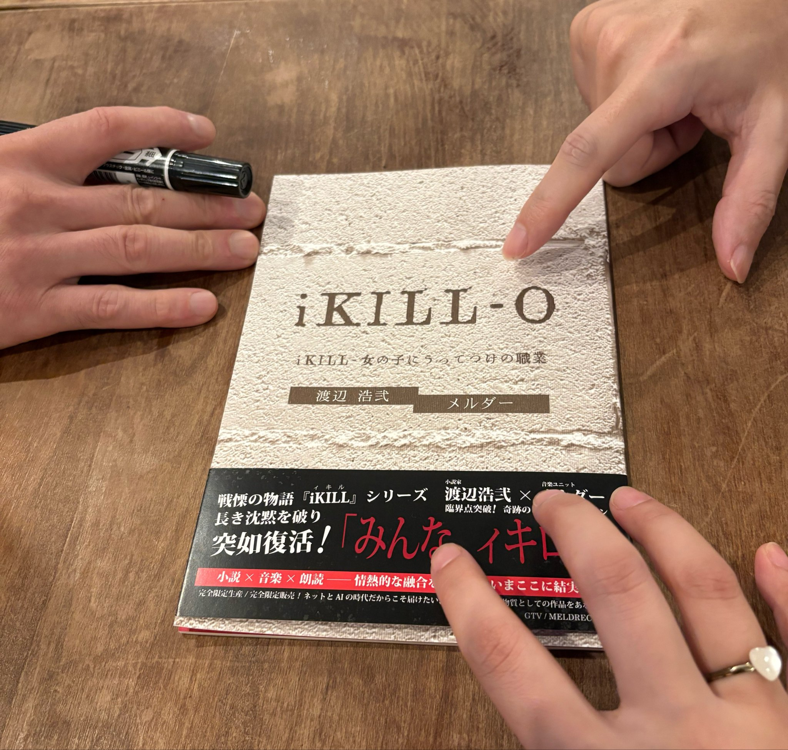
メルドレコード
@MELDRECORDS
【解禁まで、あと3日】
9月19日発売
#渡辺浩弐 × #メルダー
コラボCDブック『iKILL-O』
完全限定生産
サイン・ナンバリング入り
現実の場所と物で、届ける挑戦。
あなたも手を伸ばしてみてください。
きっと
特別な"手触り"があるはずです。
#ィキロ x.com/meldrecords/st…
競女！！
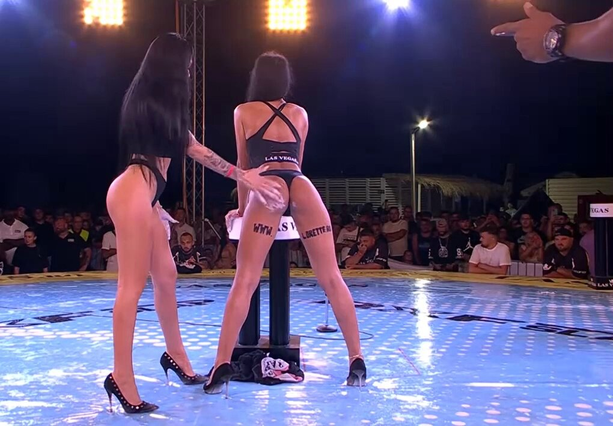
Es tendencia en 𝕏
@EsTendenciaEnX
『ルーマニア』：
このお尻を叩くスポーツが、年々有名になっています。
サイレース静注効かなさすぎて普通に鎮静なしでやってるのと同じ
ライオンズマンションの一室が本社のエスポア、不正計上に関する第三者委員会で売上偽装がバレて2期連続の債務超過・名証に市場秩序の維持が困難と見限られて上場廃止へ
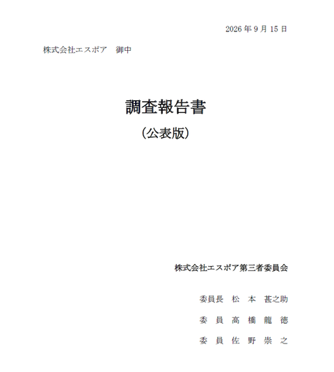
深夜に適時開示出す会社のあれな率はあれよななんよな— 確認用 (@news9111) September 16, 2026https://www.release.tdnet.info/2期連続債務超過か— あーるさん（R-YM） (@Ref126622) September 16, 2026 エスポア、上場廃止。それは知ってた速報なんだが、今回は決まり手
kabumatome.doorblog.jp
Torishima / INTPさんがリポスト
みんなScreenXやらUltra4DXやらを真っ先に予約するからそりゃDolbyや通常回は余裕ありますわな。
ここはおそらくTOHOららぽーと船橋のDolbyシネマだろうね。しかもレイトショー回。その条件で予約開始時刻になってすぐに予約入ってる事実だけで十分よな。

おーみ
@pen_oomi
おいおいおいおい日本最大スクリーンの超かぐや姫！上映初日(土曜)がこれは……やばいな、1週で打ち切られそう……
行ってくれ
ロシアを絶対に倒す気概を共有して来て、ロシア敗戦後に条約に入って北方領土を取り戻してくれ
Yahoo!ニュース
@YahooNewsTopics
【ウ大統領 高市氏のキーウ訪問要請】
https://
news.yahoo.co.jp/pickup/6595444
ちなみに胃カメラは初です
なかなかダブルヘッダーしてくれるDrいない
軍手
@gunziotaku
てか今日胃カメラと大腸カメラをダブルでやるんだった
貝さんさんさんがリポスト
"네가 죽을 때까지 사랑하고 싶어" #11 작업에 참여했습니다
잘 부탁드립니다!
きみが死ぬまで恋をしたい #11 作業に参加しました
よろしくお願いします！
#きみ死ぬアニメ
#きみが死ぬまで恋をしたい
#kimishinu
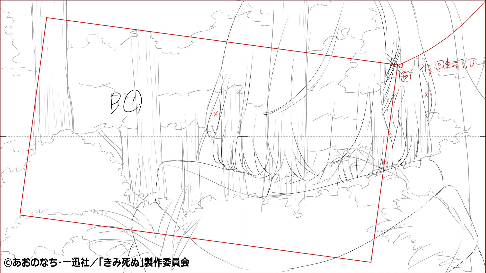


朝からニフレックです
ずっっっと探してた本が入荷されたので久しぶりに駿河屋チャレンジしたら、クレカ払いが使えなくなってた
PayPayもメルペイもやってなくて詰んだと思いつつGooglePay経由でクレカ払いできて事なきを得た
貝さんさんさんがリポスト
"네가 죽을 때까지 사랑하고 싶어" #11 작업에 참여했습니다
잘 부탁드립니다!
きみが死ぬまで恋をしたい #11 作業に参加しました
よろしくお願いします！
#きみ死ぬアニメ
#きみが死ぬまで恋をしたい
#kimishinu
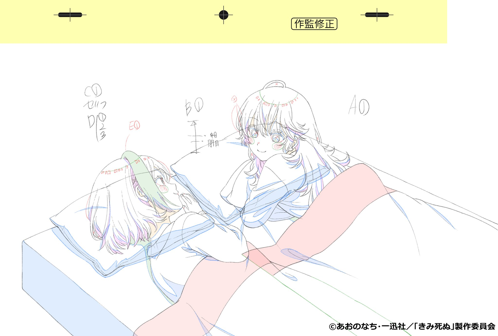
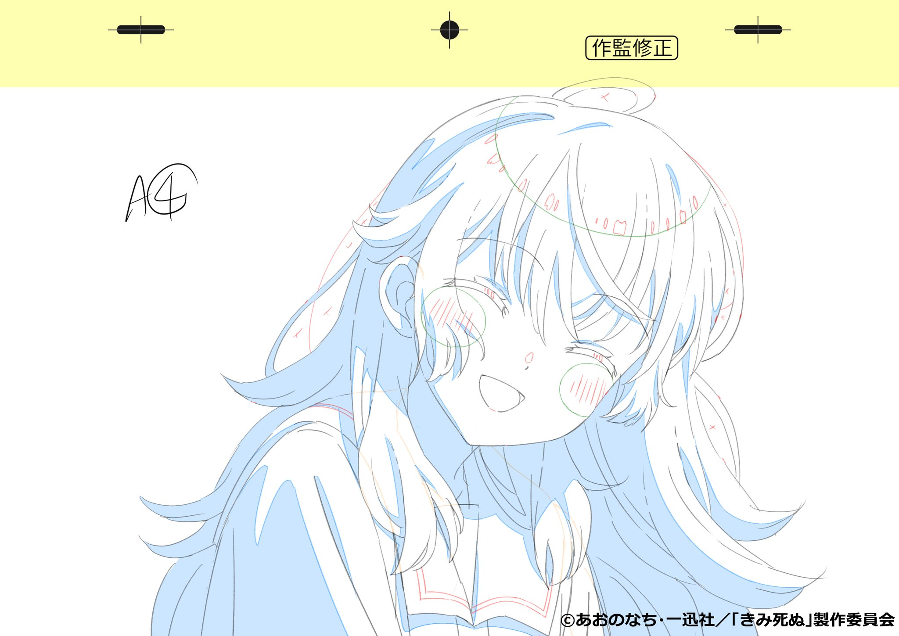
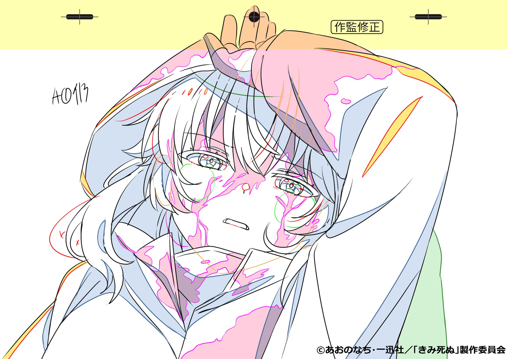
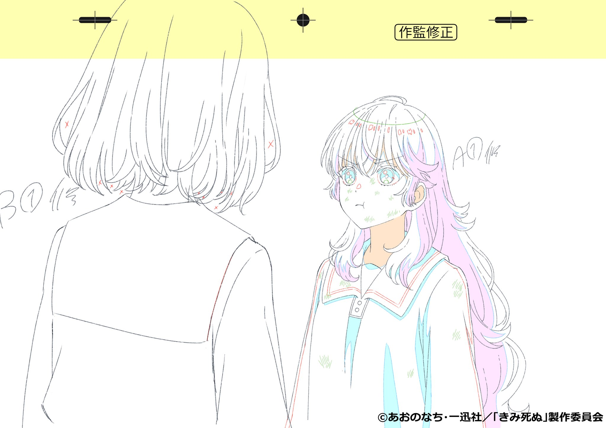
ハンナさんって人外側でもまけちゃうの本当に可愛い…
てか今日胃カメラと大腸カメラをダブルでやるんだった
おそらくわたしの主治医が消化器内科で、循環器ではないから、CPAP管理してる患者数が少ないんでは？
iPhone 18 Pro、カメラ性能も価格もプロ仕様 外観に出ぬ進化多く

iPhone 18 Pro、カメラ性能も価格もプロ仕様 外観に出ぬ進化多く
CPAPの点数はある程度高いんで、そんなに機器によって差が出るのかが気になった。今度卸さんに聞いてみよ。
渡辺浩弐さんがリポスト
意外な？マル秘情報あります！！
アーカイブ、みてね！
#ィキロ
渡辺浩弐
@kozysan
特別な作品が、ついに仕上がりました!
現場から生配信しました。アーカイブ見てくださいね! #ィキロ
https://
youtube.com/watch?v=3WKVHv
gIPyU
…
えんびたんさんさんがリポスト
夏休み満喫できました！
素敵な企画に参加できて、嬉しかったです。
ありがとうございました
#さよならララ
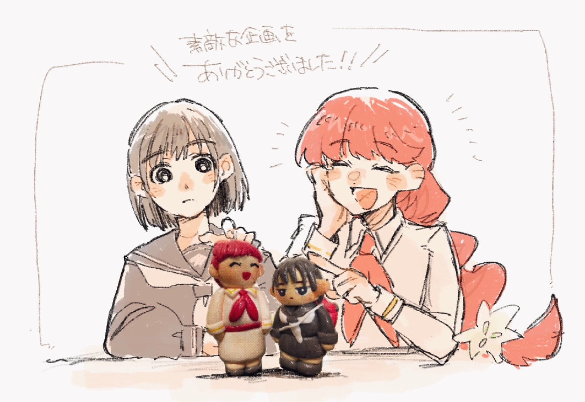
よく便所の落書きを読み込んでるなあ、小野田陣営。と感心した
軍手
@gunziotaku
中東情勢担当が実績ある赤澤になったみたいな趣旨しか発言していないのに即ブロック x.com/gunziotaku/sta…
「NTE」Ver.1.4「名もなき祈歌」は9月30日スタート。前半で「クロバネ」後半で「明音凛」を実装。バンド番外編ストーリーの続編も追加へ
https://
4gamer.net/s/G081722.2609
16056
…
遊園地「プカランド」のオープンや，Porscheコラボ第2弾も

35と言ってません
中東情勢担当が実績ある赤澤になったみたいな趣旨しか発言していないのに即ブロック
軍手
@gunziotaku
#俺をブロックしてる小野田大臣の留任を拒否します
#俺をブロックしてる小野田大臣の留任を拒否します
軍手さんがリポスト
ノールックで出してくれた順天堂に感謝しかねえっす
上海ではAlipayで支払ってたんだけど結局使い方はっきりしないままだった
支払いできないということはなかったんだけど承認番号必要だったり多分確認?押すだけだったり条件がよくわからず。金額かな?
稼げない貧しい国に移民するメリットは0
今日16時間も寝てしまってダメ
もはや日本は貧しい国なので、移民すら来ない国に成り下がってるんですよ。心配する必要なし！
いや夜中だけではなく昼間も足りなくなりますよ？
AVITAMINOSEさんがリポスト
関東で最大震度3の地震。都内も揺れました。津波の心配はありません。震源は茨城県南部、深さ70キロ、M4.8、メカニズムは横ずれ断層型。震源が比較的深く、広い範囲が揺れました。茨城県南部は"地震の巣"とも言われる地震が多い地域。改めて備えを確認して下さい。
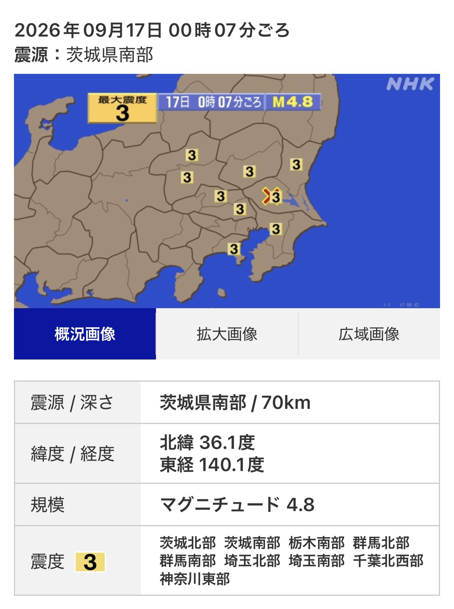
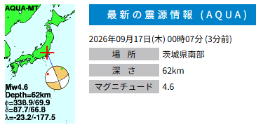
立体駐車場で衝突繰り返す 職員が声かけるも…事務所の壁突き破りようやく停車 運転手(80)は体調不良訴え入院 秋田市中心部の公営駐車場
https://
youtu.be/tgEWPkSHVlY?si
=QRjsydgaBid-k0bY
…
@YouTube
よりこわっ！

16日夜、1台の普通乗用車が秋田市の立体駐車場の中で衝突を繰り返し、最後には壁を突き破る事故がありました。この動画の記事を読む＞...
youtube.com
キャミィにも負けないハイレグ！『スト6』C.ヴァイパーに水着コスチュームが追加決定―引き締まったヒップも眩しい
https://
gamespark.jp/article/2026/0
9/17/172380.html?utm_source=twitter&utm_medium=social&utm_content=tweet
…
流石にフェイクニュースやろ・・・（でもプーチンと違って替え玉いなさそう）
谢万军 Wanjun Xie
@WanjunXie
伝聞によると、習近平氏が北京301医院で緊急救命中であり、現在も生命の危機を脱していないという。習近平氏が死亡するか、健康上の理由で統治能力を失った場合、中国は内戦と分裂を引き起こす可能性がある。
トッモA「BBQしようぜ！」 トッモB「いいね！トッモCとワイも誘うわ」

トッモA「BBQしようぜ！」 トッモB「いいね！トッモCとワイも誘うわ」 : ハムスター速報
AVITAMINOSEさんがリポスト
【地震情報】
9月17日 0:07 震度3
震源：茨城県南部 M4.8 深さ約70km
この地震による津波の心配はありません。
https://
weathernews.jp/s/topics/20260
9/170007quake/
…

『超かぐや姫！』公式さんがリポスト
復活上映までもうすぐです
よろしくお願いします！！
#超かぐや姫

『超かぐや姫！』公式
@Cho_KaguyaHime
────✩₊⁺⋆⋆⁺₊✧────
映画『#超かぐや姫！』
復活上映まであと１日！
─────────────
イラスト：へちま（ツクヨミキャラクターデザイン）
9月18日(金)より
特別フォーマット＆通常版復活上映
#CosmicPrincessKaguya
iKILL(ィキル)新作
『iKILL-O(ィキロ)』仕上がりました。
自信作です。
9月19 日～中野ブロードウェイ「Kカフェ」だけで! 販売します。
絶対に手に入れてください!!
⇒

『ィキル(iKILL)』最新作のお知らせ｜渡辺浩弐
特別な作品が、ついに仕上がりました!
現場から生配信しました。アーカイブ見てくださいね! #ィキロ

9/19からKカフェ「だけ」で販売する新作CDブック『ィキロ』ついに届きました! 全ソフトにサインと通しナンバーを入れています。その...
youtube.com
グラシネ池袋くらいリッチなシネコンだと遠方からたまにきていい席で見たい！って人も多そうなだけに、近隣の常連さんしか無理ゲー優待があるのはマジかあと言う感じだ
お気をつけて
なるせひろのりさんがリポスト
【緊急地震速報 最終報 2026年9月17日】
0時7分頃、茨城県南部を震源とする地震がありました。震源の深さは約80km、地震の規模はM5.0程度、最大震度3程度と推定されています。詳しい情報が入り次第お伝えします。
核実験
#筑波大学は核実験をやめろ 定期
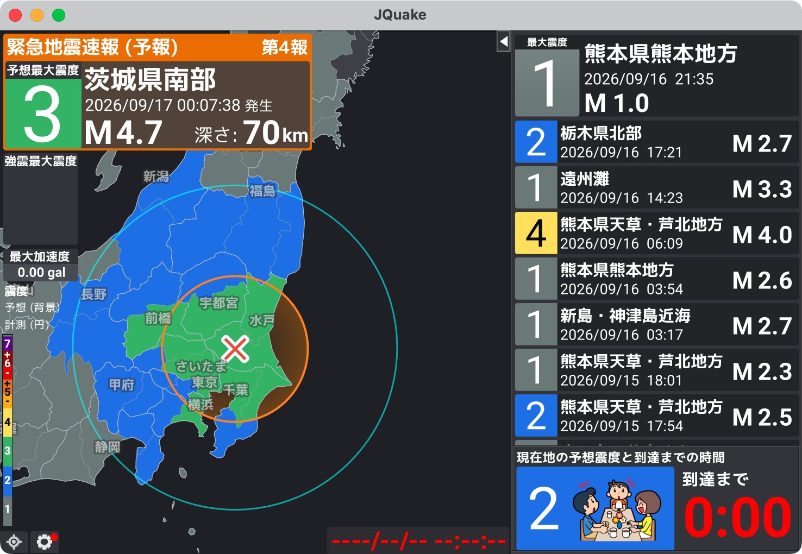
ゆれーーー
ゆれゆれ
揺れ
『超かぐや姫！』公式さんがリポスト
Eテレで「SCHOOL OF J-POP」放送決定
MC #渡辺直美 世界一ポップな音楽学校
授業はアニメ映画『#超かぐや姫 ！』
ボーカロイド音楽を通して世界的ヒットの秘密に迫る
ゲスト #夏吉ゆうこ #早見沙織
先生 #Reol #TrashTaste
9/26(土) よる8:00~ Eテレ
https://
web.nhk/tv/pl/series-t
ep-V5Q4U43C5B/
…
#SOJ


シネマサンシャインが近くにないので把握してなかったけど、「課金したら先行予約できる」の比でないエグい仕様だった…
『プラチナランク会員(会員登録済み+直近3ヶ月で6回以上鑑賞)のみチケット最速購入可能』なので1ヶ月に2回以上行ってる常連さん以外無理ゲーっぽい
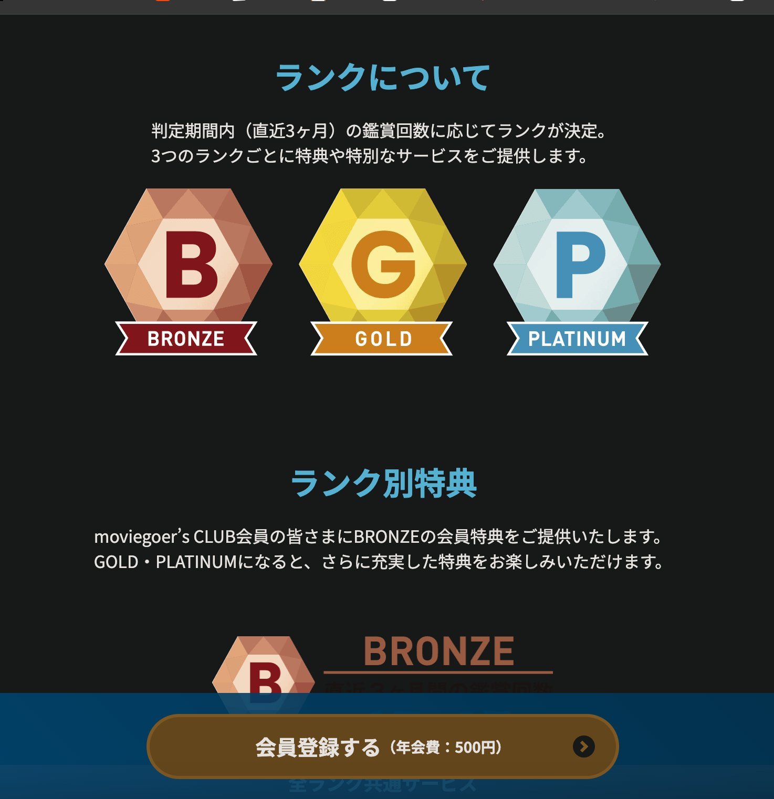
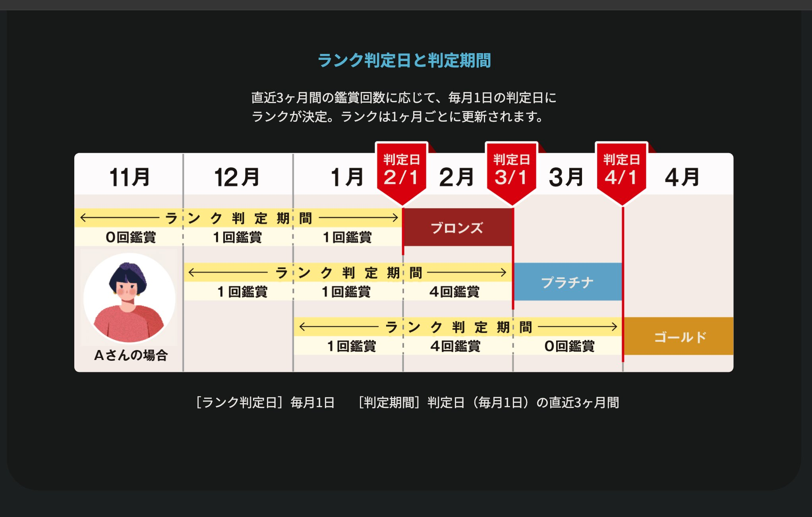
ミズコシ@超かぐ本通販中
@mizukoshi14
グランドシネマサンシャインで超かぐのULTRA 4DX観ようと思ってたけど、有料会員だけで既に完売続出でやばい...。シルバーウィークに席取るの至難の業だなぁ...。
『モンハンワイルズ：アセンダンス』に「テオ・テスカトル」が登場決定！ワールド・ライズと引き続きの参戦、「東京ゲームショウ2026」で討伐クエストに挑戦可能
https://
gamespark.jp/article/2026/0
9/17/172379.html?utm_source=twitter&utm_medium=social&utm_content=tweet
…
映画『どこよりも遠い場所にいる君へ』さんがリポスト
#どこきみを届けたい ！
#どこきみ 完成披露上映会を実施いたしました
#石橋陽彩 さん #永瀬アンナ さん #玉木宏 さん #とた さん #和田純一 監督と登壇しました！
#阿部暁子 先生、キャラデザ・総作画監督の #へちま さんともお話しできて、嬉しい時間でした
早くスクリーンで観てほしいー！

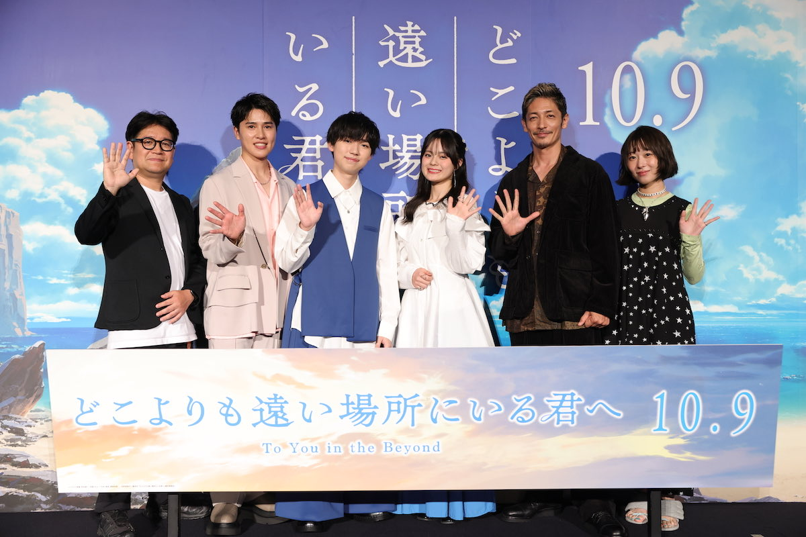
映画『どこよりも遠い場所にいる君へ』
@dokokimi_movie
#どこきみ
完成披露上映会レポートが到着𓈒𓂂𓏸
￣￣￣￣￣￣￣￣￣￣￣￣￣￣￣
#石橋陽彩 さん #永瀬アンナ さん
#土屋神葉 さん #玉木宏 さん
#とた さん #和田純一 監督がご登壇*✧
⠀
本作の魅力や
アフレコ時の裏話などを語りました！
⠀
▼レポートはこちら
https://
sh-anime.shochiku.co.jp/dokokimi-movie
/news/155
…
「歯間の汚れが吹っ飛んで歯茎も強くなって口臭も激減する」最強のジェットウォッシャーが話題に！マジで凄いと共感殺到！！ #雑談・その他の話
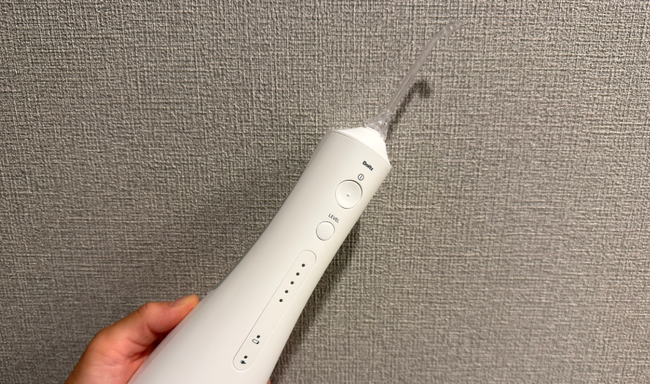
「歯間の汚れが吹っ飛んで歯茎も強くなって口臭も激減する」最強のジェットウォッシャーが話題に！マジで凄いと共感殺到！！ - オレ的ゲーム速報@刃の記事ページ
jin115.com
閉店1時間前にこれ
当然取りきれず
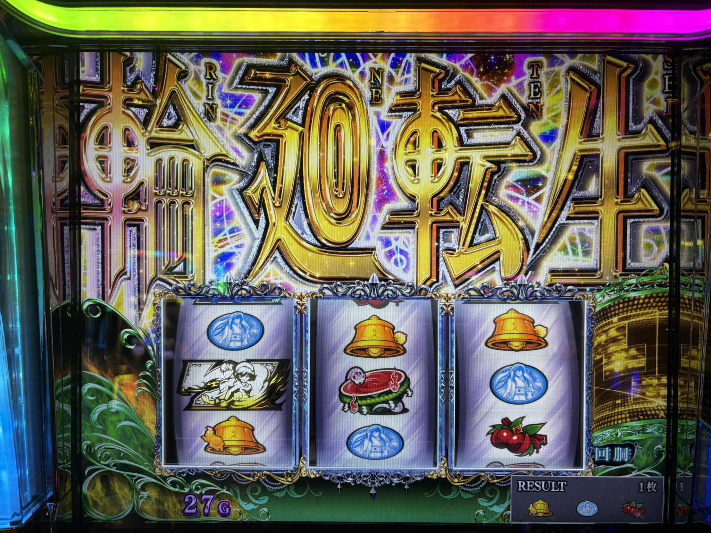
HAPPY BIRTHDAY！！
本日9月17日は、
第31A部隊所属 和泉ユキの誕生日
ゲーム内では、デイリーログインボーナスにて当日限定の専用セリフも登場！(※AM4:00〜)
ログインしてチェック♪
#ヘブバン #和泉ユキ生誕祭2026

ジャレコの名作セットから「ラグナロク」シリーズ最新作まで，グラビティゲームアライズの出展タイトルを紹介［TGS2026］
https://
4gamer.net/s/G102339.2609
07016
…
TGS会場ではノベルティをプレゼントするキャンペーンも行われる予定だ

━━━━━━━━━━━━
#楽園追放
心のレゾナンス
CHARACTER VISUAL
Ⅴ
━━━━━━━━━━━━
5日間連続
キャラクタービジュアル公開
第❺弾
ぺネム
11.13 劇場公開
https://
rakuen-tsuiho-r.com

プロセカ6周年まであと13日
『わたしの想い、届けるね！』
Animated by KICO（
@illmaticblue
）
#プロセカ #プロセカ6周年イラスト

Torishima / INTPさんがリポスト
本日上映終了！
『#THERIBBONHERO #リボンヒーロー』
劇場上映は本日まで！
まだ劇場で観ていない方は、ラストチャンス！
ぜひ大きなスクリーンで本作をお楽しみください
本日𝟗月𝟏𝟕日は 駒沢乃依役
#松岡禎丞 さんのお誕生日

────✩₊⁺⋆⋆⁺₊✧────
映画『#超かぐや姫！』
復活上映まであと１日！
─────────────
イラスト：へちま（ツクヨミキャラクターデザイン）
9月18日(金)より
特別フォーマット＆通常版復活上映
#CosmicPrincessKaguya
「プラグマタ」，無料DLC「ロックマンパック」を9月17日から配信。ロックマンとロールになりきれる
https://
4gamer.net/s/G051239.2609
16053
…
ヒューの衣装「なりきりロックマン」「ロックマンモード」，ディアナの衣装「なりきりロール」「ロールモード」の各2種が登場する
瑠璃の宝石きた 瑠璃天使かわよ、、
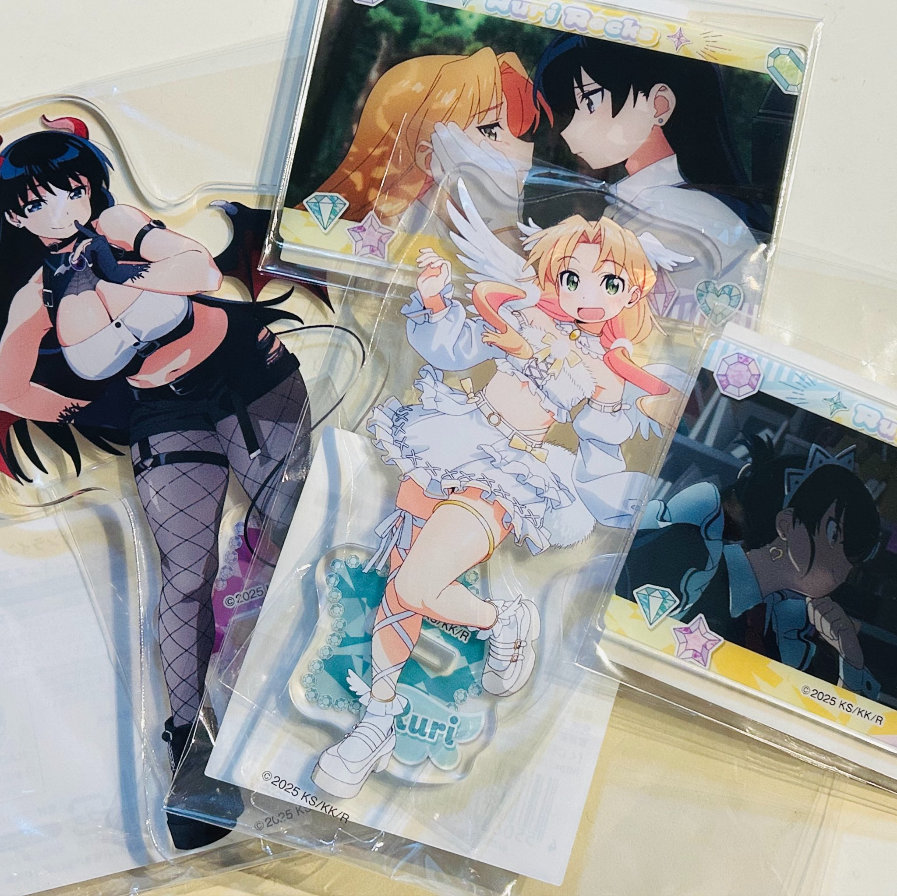
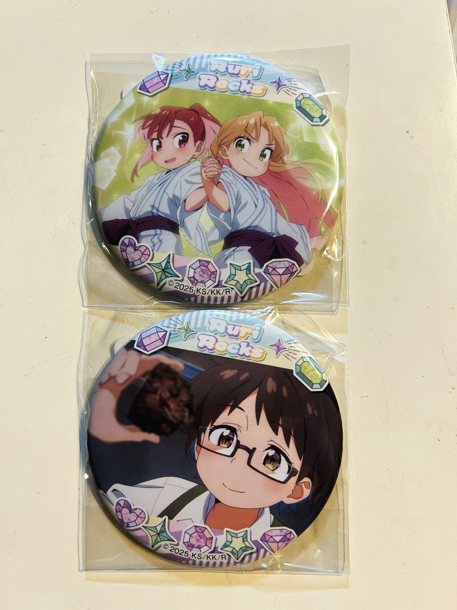
ペリカのつぎはルーシーがチェーンソー振り回すのか
「ストリートファイター6」に“C.ヴァイパー”の水着コスチュームが登場。10月13日に“アルジュン”と同時実装
https://
4gamer.net/s/G063504.2609
16055
…

何が言いたいかというと、リゼロのレイドとユリウスのバトルがちょっとくどすぎやしませんかという事です。
ふぇむ(せかんど！)
@000Amaurot
ずっと精緻に動いてるなら現実でいいからアニメって動いてる時より止まってる時の方が大事だよな。グロウアップショウはそれが出来てるからいいし、最近のバトルアニメはそれがわかってない。そしてゴーハンはいっそ現実にしてやろうという潔さがあるから、動いてても愛せる。
「ドラゴンズドグマ 2：ダークアリズン」の最新トレイラーが公開に。発売に先駆けてSwitch2版のキャラクリアプリも配信開始
https://
4gamer.net/s/G101558.2609
16054
…
自認ターニャ・デグレチャフになって仕事してるフォロワーさんもいる。

8月の米小売売上高、1.2%増と予想上回る 新学期需要で好調
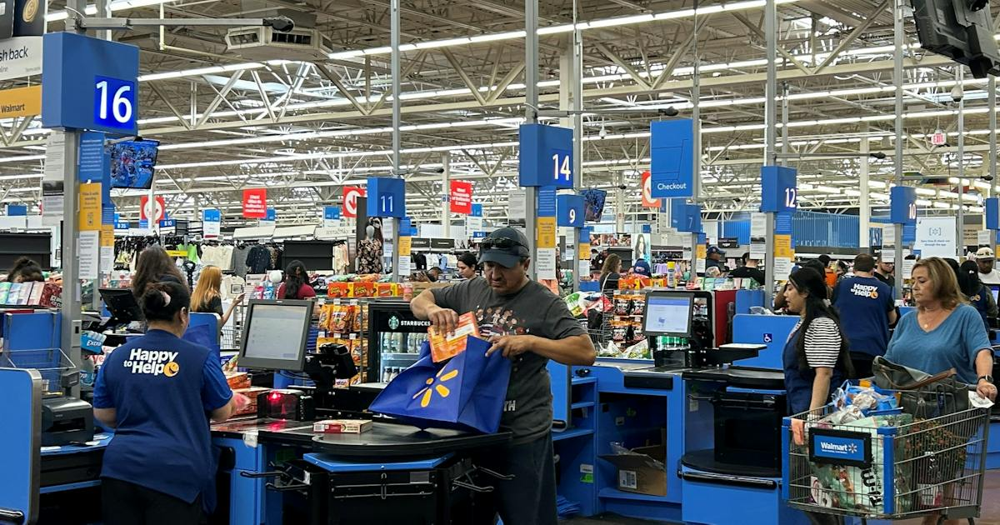
8月の米小売売上高、1.2%増と予想上回る 新学期需要で好調
ゆーじさんがリポスト
SCPH-7500のCDどらいぶのフレキがちぎれたのでSCPH-3500のドライブを付けたけどレイアウトが違う

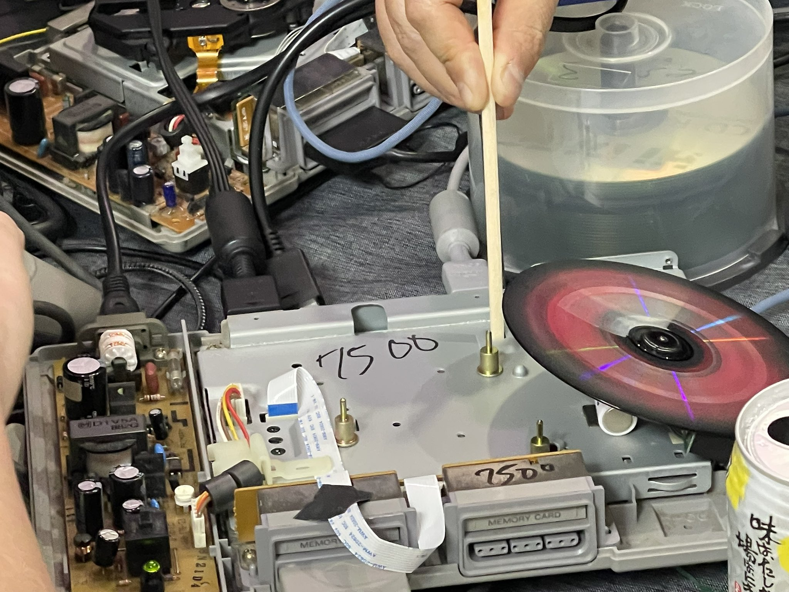
ゆーじ
@yuujii
俺のプレステと違う
自分とSideMとシャニの対バンで
連番組んでくれる方緩募です
貝さんさんさんがリポスト
#きみ死ぬアニメ
第11話ありがとうございました
今回の戦場は今までの夕景とは雰囲気が変わり赤いのですが、キャラも赤く深く…な方向性の色になっています。
引き続き放送、配信をよろしくお願い致します。
TVアニメ「きみが死ぬまで恋をしたい」公式
@anime_kimishinu
TVアニメ「きみが死ぬまで恋をしたい」
第11話をご覧いただいた皆さま、
ありがとうございました
感想は #きみ死ぬアニメ でお寄せください！
スタッフクレジットは
公式サイトにて公開中です
https://
kimishinu-anime.com/story/
#きみ死ぬアニメ
『STRANGER THAN HEAVEN』冒頭プレイ映像お披露目！ベーゴマなどのアクティビティ紹介に「ショービス」解説も行われた特別生配信
https://
gamespark.jp/article/2026/0
9/16/172378.html?utm_source=twitter&utm_medium=social&utm_content=tweet
…

Torishima / INTPさんがリポスト
トリキ、豪遊しても、今の時代でもかなり安くつくと言う知見
#aimeetup
「CodexforOSS」つってOSS開発してる人のためにChatGPTのProプランが半年間無料になる奴、半年経ったから第二弾だって。前回の奴が期限切れした人達もまたどうぞだって。なんか「広く使われてるOSS作ってる人のため」とか書いてるし僕は今OSS作ってないからスルーしてたけど、小規模でもなんでもOSS作
Charlie Marsh
@charliermarsh
私たちは6ヶ月前にOSS向けにCodexを開始しました。
今日、私たちは$100のProプランでプログラムを更新し、助成金の数を倍増（5,000から10,000へ）して、より多くのメンテナにリーチします。
（以前助成金を受け取った方は、再申請をおすすめします！）
https://
openai.com/form/codex-for
-oss/
…
スイッチ2を守るなら、やっぱり『マイクラ』だよね！クリーパーやフェイスモブのライセンスアクセサリー全3種が9月30日より発売
https://
gamespark.jp/article/2026/0
9/16/172377.html?utm_source=twitter&utm_medium=social&utm_content=tweet
…
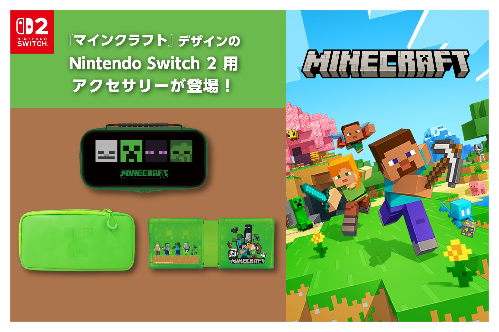
ずっと精緻に動いてるなら現実でいいからアニメって動いてる時より止まってる時の方が大事だよな。グロウアップショウはそれが出来てるからいいし、最近のバトルアニメはそれがわかってない。そしてゴーハンはいっそ現実にしてやろうという潔さがあるから、動いてても愛せる。
値段は平成だけど下の POP は GPT-Image 2 で作ってるんだな（普及を感じる）
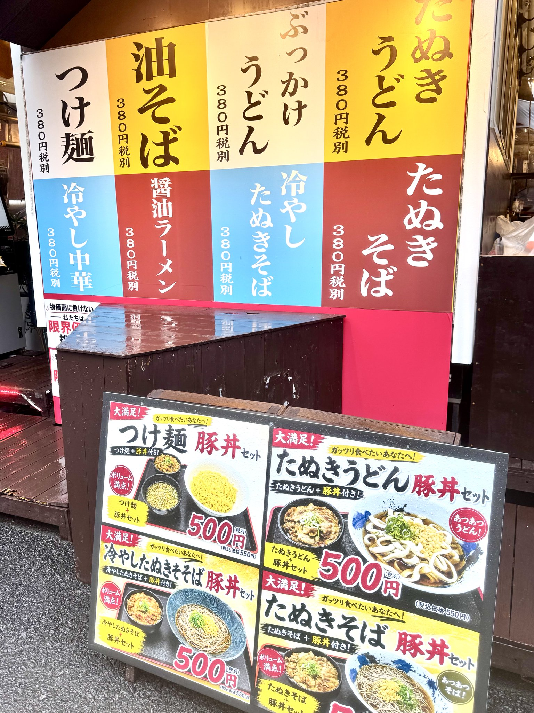
ういにゃん【アニソンDJ】
@ui_nyan
秋葉原、値段が平成のまま取り残されてる飲食店あってヤバかった
iPhone 18 Proバーガンディカラーを先行レビューさせていただきました！
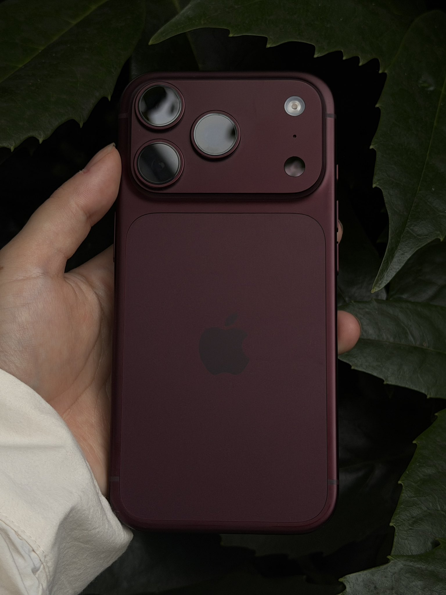
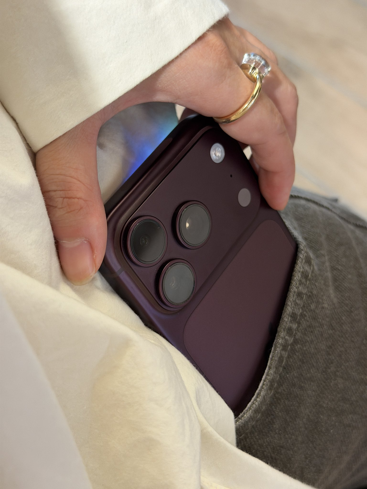
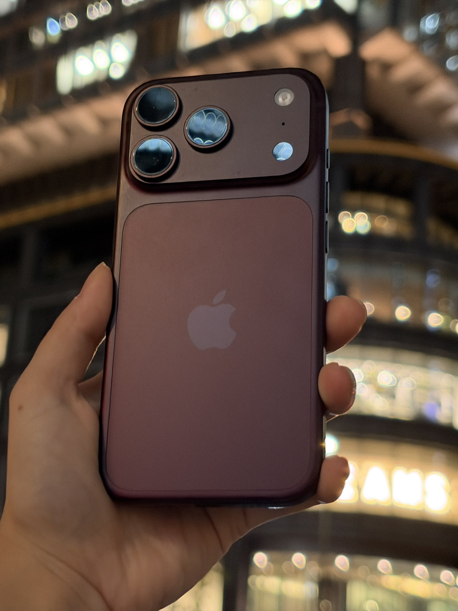
ギズモード・ジャパン（公式）
@gizmodojapan
iPhone 18 Pro新色バーガンディ、これまでで一番「都会の夜」が似合うスマホだ
https://
gizmodo.jp/article/iphone
18pro-with-tokyo-nightlife/?utm_source=twitter&utm_medium=feed
…
DevDay までに小出しにしちゃっていいんですか？それとも Astra のコンピューティングバカ喰いがひどいため？

Salio
@Mr_Salio
GPT-6 Sol が明日リリース
> GPT-6 Sol はAstraと同じく4月30日のカットオフ日を持つ
> 「Sol 5.6」は一部の選ばれたユーザーをSol 6にルーティングしていると報告されている
> 初期テスターによると、Sol 6は強化学習で重く訓練されている
> そしてどうやら… 信じられないほど速い
>
はいみなさん
高校生殺人団体が謝罪するまで、半年かかりました
47NEWS
@47news_official
【速報】辺野古転覆事故で運航団体が謝罪声明
https://
47news.jp/14950882.html?
utm_source=twitter&utm_medium=social&utm_campaign=api
…
内戦、内紛が1番好きです。
ふぇむ(せかんど！)
@000Amaurot
幼女戦記、やはり普通に楽しい
ゆーじさんがリポスト
本日も勝ってしまった (*'ω'*) #PANORA健康麻雀
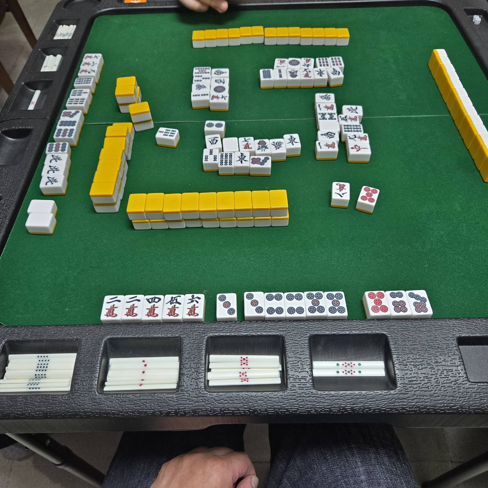
「モンスターハンターワイルズ：アセンダンス」，古龍“テオ・テスカトル”が登場する最新映像を公開
https://
4gamer.net/s/G101399.2609
16052
…
泣きアニメを覚悟して行った方がいいか・・・
肉質数字表記来たw
Torishima / INTPさんがリポスト
マイク不具合とかじゃなく明らかに変な様子だったかのようにも見えますが、外交舞台の開会挨拶をぶった切ってでも「大丈夫？」と声をかけさせるほどの異常な様子、どんなのだろう

明天会更美好
@zhongwenfanyi
台湾で報道がありましたね。なんでも、BRICSの会議で同席したモディ首相が習近平の演説中に異変に気がついて声をかけたとか
https://
cna.com.tw/news/aopl/2026
09140084.aspx?utm_source=cna.app&utm_medium=app&utm_campaign=inapp_share
…
オタクの名前を全部リゼロ名前回にして、一番いいツイートをしたと思ったら貼り付けることにした。


Torishima / INTPさんがリポスト
リゼロ83話のすごすぎ剣戟のアクションシーンに完全に気を取られて忘れてたけど、冒頭でスバルがエミリアたんの一の騎士だと名乗りを上げてたところは最後にユリウスが同じくアナスタシアに対して名乗るところの予告にもなってたんだ

Re:ゼロから始める異世界生活 4th season
NYダウ一進一退で始まる ＦＯＭＣ結果控えて様子見

NYダウ一進一退で始まる FOMC結果控えて様子見
全エースパイロットに告ぐ、出撃の装備はこれだ！『ACE COMBAT 8』×EDWINコラボが9月17日発売、米軍実績ブランドのMA-1やTシャツ全3種
https://
gamespark.jp/article/2026/0
9/16/172376.html?utm_source=twitter&utm_medium=social&utm_content=tweet
…

うーんこの
貝さんさんさんがリポスト
作品公式がこのレベルまで一斉に紹介するのは珍しい。


『超かぐや姫！』公式
@Cho_KaguyaHime
.˚⊹／
映画館でしか味わえない！
特殊音響設備のシアターを紹介
.˚⊹＼
9/18(金)より『#超かぐや姫！』は
特別フォーマット以外にも、
様々な音響設備を備えたシアターで上映されます！
ぜひお気に入りを見つけてみてください
※各劇場における
明日発売！
電子だと間も無くかな？
ぶっ飛んだ設定の旅の話、楽しんでいただけると、何よりなのです！
もしかして闘魂って接続時のアイコンで無線か有線か分かったりするのか?
いつもと違う形のアイコンが表示された気がする
日本経済新聞 電子版（日経電子版）さんがリポスト
米アップル株堅調、「Ｍ７」離れ鮮明に ナスダックと異例の逆相関

米アップル株堅調、「M7」離れ鮮明に ナスダックと異例の逆相関
幼女戦記、やはり普通に楽しい
ぬるっと動く手描き2D対戦格闘ゲーム『Generic Fighter Maybe』Steamデモ版リリース
https://
gamespark.jp/article/2026/0
9/16/172375.html?utm_source=twitter&utm_medium=social&utm_content=tweet
…
過去には個性的な退場システムでも注目―趣味で作ったテスト用プログラムが本格開発
フィラデルフィアに住んでいた頃、時間があればわざと遠回りして帰宅し、オールド・シティを歩いて通りました。ある時、食料品を買いに立ち寄った際、シリアルの棚でベンジャミン・フランクリンとばったり会いました。歴史的な博覧強記も、朝はちゃんと始めないとね。

Scenes from a colonial resurrection: First-person interpretations of history draw America 250 crowds
B'zはメロディやコード進行など楽曲の本体は歌謡曲だけど、ハードロック由来の声やサウンドも、長年のキャリアの中で「うるさくない」洗練されたものになったよね。日本人向けの味のマクドナルドみたいな(ぉ
逆にB'zから洋楽に行って「え？」と思ったことは多々ある
彩音ざくろ@社畜とJKとヴィジュアル系
@zakuro0508
メタルの潜在的ニーズの話だけど、
B'zが長年圧倒的に売れているという揺るぎない事実があるので、
日本人はハードロックがベースのサウンドや、
高音シャウトに歪んだギター、
速弾きが嫌いというわけじゃないんですよね。
もう一度言うけどメタルの潜在的ニーズの話です。
なるせひろのりさんがリポスト
【今日の人気記事】【レビュー】ヤマハがガチで作ったアクティブSP「NX-70A」。シナジスティックドライブで“スピーカーの存在が消える”
https://
av.watch.impress.co.jp/docs/review/re
view/2135173.html
…


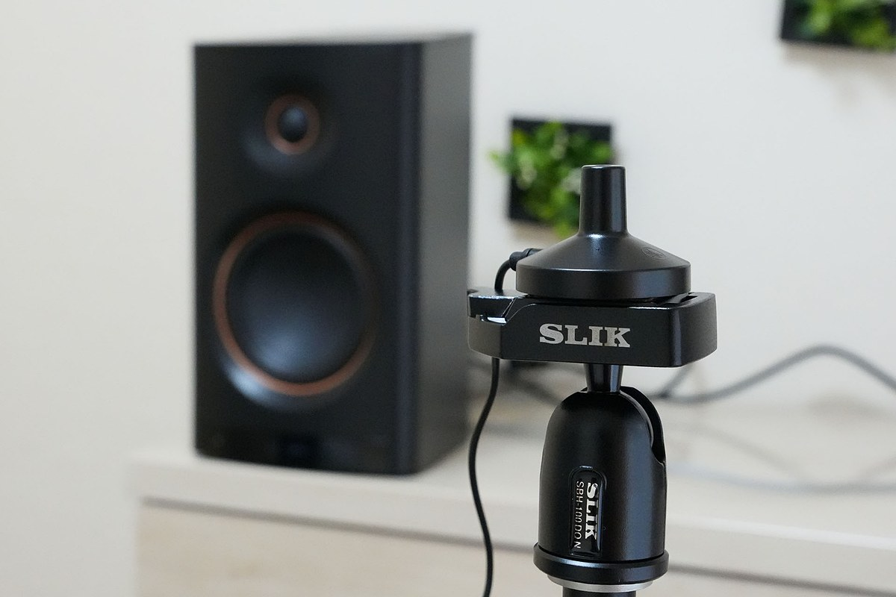
Torishima / INTPさんがリポスト
20日に行こうと思ってるところ
一般的なオタクはスクリーンのサイズランキングを知らないでしょうから、特殊フォーマットに流れてAtmos最大級の船橋には来ないんだと思います、、
おーみ
@pen_oomi
おいおいおいおい日本最大スクリーンの超かぐや姫！上映初日(土曜)がこれは……やばいな、1週で打ち切られそう……
データセンター水使いすぎじゃない？→中国「海の中にデータセンター設置します」

データセンター水使いすぎじゃない？→中国「海の中にデータセンター設置します」 | ギズモード・ジャパン
ロシア、日本の対ロ政策を批判 北方領土訪問の反発は「ヒステリー」

ロシア、日本の対ロ政策を批判 北方領土訪問の反発は「ヒステリー」
日常の軽さか、走りのタフさか。「耳を塞がない」Shokzの新作2モデル
日常の軽さか、走りのタフさか。「耳を塞がない」Shokzの新作2モデル | ギズモード・ジャパン
一晩で乾くから、旅の下着が減らせる。たった13gの超軽量ショーツ

一晩で乾くから、旅の下着が減らせる。たった13gの超軽量ショーツ | ギズモード・ジャパン
これは本当です。垢乗っ取られる直前はなんも投稿がない謎の外国人垢のフォロワーと、女性声優の脱衣に関する投稿がかなり増加していました。謎の外国人垢のフォロワーと女性声優の水着・脱衣の投稿が増えてる人は気を付けてください
なるせひろのりさんがリポスト
【東京・高尾山の登山道にクマ出没】
東京・高尾山の登山道にクマ出没 - Yahoo!ニュース
Torishima / INTPさんがリポスト
・三峡ダム決壊
・北京クーデター
・台湾有事
・認知戦
・習近平脳卒中
#なんか見た
ユーフォ最終楽章後編 麗奈のアレ、はぐれものJKが異世界冒険者にクラスチェンジした件 みたいの正確には何て書いてるのかずっと気になってる 動体視力…ッ
「稼ぐ美術館」政策、大型展頼み強める弊害 常設展充実は100年計画
https://
nikkei.com/article/DGXZQO
CD220OG0S6A820C2000000/?n_cid=SNSTW005&n_tw=1789522848
…
日本の美術館は面積も所蔵品の数も圧倒的に足りていません。古賀太・日大芸術学部教授は「ルーブルのように稼ぐのは無理だ」といいます。
「稼ぐ美術館」政策、大型展頼み強める弊害 常設展充実は長い目で
チネチッタまどマギあった場所たんプリになった
「1人1泊1万円の宿で出てきた料理がこれ」ﾊﾟｼｬｯ → とんでもない画像が投稿されて話題にｗｗｗｗｗ #食べ物・飲み物
「1人1泊1万円の宿で出てきた料理がこれ」ﾊﾟｼｬｯ → とんでもない画像が投稿されて話題にｗｗｗｗｗ - オレ的ゲーム速報@刃の記事ページ
jin115.com
ポン☆潤々さんがリポスト
アイマスMOR415（9月23日放送）からは、
●SideM・北村想楽役の汐谷文康さん
●ミリオン・島原エレナ役の角元明日香さん
をパーソナリティにお迎えします！お楽しみに！
#アイマスMOR #imas_MOR
美少女のケツを追っかけていても、本当に向き合いたいのは男だから。
ふぇむ(せかんど！)
@000Amaurot
俺ってレイド・アストレアだ
冒険者パーティーを編成し装備を強化してダンジョン探索『Underkeep』ウィッシュリスト7万超え。デモ版リリースで爆発的に増加
https://
gamespark.jp/article/2026/0
9/16/172374.html?utm_source=twitter&utm_medium=social&utm_content=tweet
…
気象庁台風予報の円形予報円が、速度の誤差と進路の誤差を区別できない問題点、ずいぶん前から指摘されてるけど、改善の兆しもないのよね。
LLMみたいにテキストをチンタラ時間かけて返すんじゃなくて、”判断”だけを高速に返すJevだって。判断ってなんやねん？というと具体的には型付きオブジェクトを返す。LLMだってJSON返せるけど、LLMはJSONをテキストとして1トークンずつチンタラ推論するから遅いのに対してJevは直接型のバイナリを返して
布留川英一 / Hidekazu Furukawa
@npaka123
高速な判断に特化したAI - TypeSafe「Jev」 と System One Model｜npaka @npaka123
https://
note.com/npaka/n/n6f8dd
30a5fa4?sub_rt=share_sb
…
俺ってレイド・アストレアだ
英マクラーレンがSUVを初生産 英国に新工場、1000億円投資

英マクラーレンがSUVを初生産 英国に新工場、1000億円投資
映画『どこよりも遠い場所にいる君へ』さんがリポスト
映画「どこよりも遠い場所にいる君へ」
完成披露上映会＆舞台挨拶 に
秋鹿七緒役の #永瀬アンナ が
登壇いたしました
お足元の悪い中ご来場いただき
ありがとうございました！
10月9日(金)公開まで
楽しみにお待ちくださいませ
#どこきみ

スタンフォード監獄実験って再現性に疑問符が付いてるから、こういう企画もいいのでは。リアリティ番組では社会学実験の再現にはならないとは思うけども。
この2人の言いそうなことで。文化放送とTBSラジオの「報道」系番組は話を聞く相手の人選が偏ってると感じることが多いのがな。故・森永卓郎氏を重用してたラジオ界隈はだいぶ危ういとは思ってるけど。
Torishima / INTPさんがリポスト
シン・エヴァのときも大変でしたが、今も変わってないのはヤバいっすねえ…
#どこきみ
完成披露上映会レポートが到着𓈒𓂂𓏸
￣￣￣￣￣￣￣￣￣￣￣￣￣￣￣
#石橋陽彩 さん #永瀬アンナ さん
#土屋神葉 さん #玉木宏 さん
#とた さん #和田純一 監督がご登壇*✧
⠀
本作の魅力や
アフレコ時の裏話などを語りました！
⠀
▼レポートはこちら
https://
sh-anime.shochiku.co.jp/dokokimi-movie
/news/155
…
最近のネットミームの話で言うと『このバイク♪ マイキーが乗ったら メッチャかっけぇだろうな♪』は自分でもめずらしいくらい思いのほかハマってしまっていて、酒飲んでる時もすぐに このサーモン♪ パン頼んでソースつけたら メッチャおいしいだろうな♪とか語呂悪すぎること言い出してしまう。
若造…
お前は医学部で何を学んできたのだ…
シュヴァイツァーの次にパンドラの箱を学ばなかったのか…
お前が押したのは地球破壊爆弾のスイッチだ
ただの局ならお前の命はまだ助かるだろう
だが、看護部長に繋がった場合、お前は明日から僻地に飛ばされる
明日からだ
ひまり@看護師
@himahima_ns8
研修医がベテラン看護師に
「そんなに治療方針に文句あるなら、
医学部出て医者になってから言えよ」
って言ってて、病棟凍った。
Torishima / INTPさんがリポスト
多分、今回は1本じゃないと思われます
・踊る大捜査線
・ちいかわ（継続）
・プリキュア
・超かぐや姫（再上映、ラージフォーマット多数追加）
TOHOシネマズが貧弱なのもありますが、相手が悪い…
映画『どこよりも遠い場所にいる君へ』
完成披露上映会
ありがとうございました
10月9日(金)公開です‼︎
#どこきみ
渡辺浩弐さんがリポスト
ってことで、お付き合いいただきありがとうございます
いちじくのレアチーズケーキ、みんなで「美味しい、美味しいよぉ」と言いながら食べました
東小金井のSofarさん、インスタやられてるので↓是非是非〜↓
https://
instagram.com/sofar_toridori
?stkn=MTI5dm45cXRlaXA5cw==
…

渡辺浩弐
@kozysan
開かずのカフェ「Kカフェ」が9月19日〜27日の期間に限り、開きます。
ここで、ここだけで、販売するものがあるんです。
それが今、ついに完成しました! #ィキロ
全品にサインと通しナンバーを入れています。
その現場から緊急生配信します。このあと21時〜
https://
youtube.com/watch?v=3WKVHv
gIPyU
…
東にずれつつあるかな？ もちろん油断禁物。風は弱くても、また大雨の可能性もあるわけだし。

ウェザーニュース
@wni_jp
【台風発生】
9月16日(水)21時、マリアナ諸島で大型の台風25号(ドゥージェン)が発生しました。
18日(金)〜19日(土)に小笠原諸島に接近したあと、シルバーウィークの5連休に東日本に接近するおそれがあるため、今後の進路に注意してください。
https://
weathernews.jp/news/202609/16
0241/
…
今日14時間くらいほぼ寝てしまっているのだがやはりエージェント疲れなのかな…普通はこれだけ寝たら起きてしまうはずなのだが
紫 ピンク オレンジ
Yuji Inoue / Guitarist・プロが導く、新しいギターレッスン
@93Yuji
TAKのギターソロはエンディングソロの方が良いと感じる時が度々ある
Love&Chain
Joy
他には？？？
AVITAMINOSEさんがリポスト
【速報】台風25号「ドゥージェン」発生 シルバーウィークに日本へ影響のおそれ】
https://
tenki.jp/forecaster/des
kpart/2026/09/16/40604.html
… 今日16日(水)21時、マリアナ諸島で台風25号「ドゥージェン」が発生しました。

【速報】台風25号「ドゥージェン」発生 シルバーウィークに日本へ影響のおそれ(気象予報士 日直主任) - tenki.jp
Chat版のSolは割とフレンドリーな性格なのでそれをミックスして欲しいんだよなあ
AM09:21
@AM09_21
みんながGPT-6 SolのWriting能力高いって言ってるソースのポストはコイツかぁ！
> 何故か本当に面白い
Astraの大喜利力が高かったのを見るに、その特性を上手いことSolにも引き継げてるのかな
5.6 Solの良さとAstraの良さをうまいこと継承しててくれたら、主観的主力級がこっちに変わるかもしれん x.com/TokenGremlin/s…
行きたいなあ…
ミミが隠していたからこそすれ違う。その日々のシーナを覗く構図が良いなと感じる。
今回もアニメ化において細かな変更を加えて再構成されていて、その内容も良いと感じるけど、ここでリカ先輩登場が予想外だった（登場は本来、恐らくアニメ範囲外なので）。ここの関係も非常に好き。
きみが死ぬまで恋をしたい 第11話
貴女に笑顔でいてほしい。だからこそ曲げられない願いがある。それで喧嘩したとしても......。
お互いを想うからこその必要な衝突を描く第11話。

実技試験を行うことになったシーナだったが、かつて敵に腕を切られたことが頭の中から離れずにいた。ミ...
nicovideo.jp
耐荷重1.5kgは伊達じゃない！3軸固定の決定版スタンドが凄かった BuyPR
決めた角度から動かない保持力が驚きです。直径5mmの極太ヒンジによる高トルク構造で、耐荷重は約1,500g。タップしてもグラつきません。さらにN52フルリング磁石が360°均一に吸着し、周囲のシリコーンリングが横滑りを抑える二重設計で、揺れる車内でもほとんどズレません。3軸調整でスタンド・車載・撮影を1台に集約します。
gizmodo.jp
創業125年はダテじゃない。日々のジョギングにちょうどいいサッカニーのランシュー
創業125年はダテじゃない。日々のジョギングにちょうどいいサッカニーのランシュー | ギズモード・ジャパン
→分かるようなものを無碍に一律禁止にしない対応は多くのミュージシャンが取ってきてます(Brotherhoodの頃？に所謂生もの同人誌にも言及した御触れが出てたような…？)「絶対ダメ」はまだ決めやすいけど、「これを守ってれば絶対大丈夫」は音楽のみならず創造的な物にはないと言えるでしょうね。
TGS前夜祭で最高のビリヤニ食べた
リゼロ
エンドスさんがリポスト
あれだけ売れてる『ちいかわ』も、劇場がガラガラの作品も、少しでも観客を呼び込もうと送り手たちは努力してるのだから、こんなに望まれている作品をあえて小さな規模にとどめておくというのは、いまの世では信じ難いことだし、“もったいないお化け”が出てもおかしくないよ。
Game Pass再編の噂にXbox広報担当から公式回答―「本日発表する変更点や、最終決定した計画はありません。」
https://
gamespark.jp/article/2026/0
9/16/172373.html?utm_source=twitter&utm_medium=social&utm_content=tweet
…
既に発表済みのデイワンタイトルにも変更がないことを明言しています。
Torishima / INTPさんがリポスト
TVアニメって一見ダメそうでも最終回で全部盛り返すパターンもあるし良かったのに最後で精彩を欠くパターンもあるから最後が一番気が抜けなくて怖い
「話は読ませてもらった！！ 人類は滅亡する！！！」…というわけで、AI関係者はみんな読んでおくと面白いよ。超おもしろかった。
reading... 超知能ＡＩをつくれば人類は絶滅する

超知能ＡＩをつくれば人類は絶滅する
今年はおせちふたつ食べることにならずに済みそうです。
輿水畏子さんがリポスト
ｼｪﾘﾊﾝ吸血鬼パロ②
ご都合魔法で吸血鬼になっちゃったﾊﾝﾅちゃんがいます


ちレモ
@tiLemo0
ｼｪﾘﾊﾝ 吸血鬼パロ
ご都合魔法で吸血鬼になっちゃったﾊﾝﾅちゃんがいます
Torishima / INTPさんがリポスト
減速するんじゃないんかーい
Polymarket Japan
@polymarketjapan
【速報】Anthropic、豪州初のデータセンター契約、世界最大級へ
・計画容量2.16GW、世界最大級施設に匹敵
・ブリスベンから約250km離れた農地に建設
・2027年に稼働予定
B'zやドリカムに限った話ではありませんが、公式素材をそのままもしくは加工して使うものは非営利やファン同士の純粋な交流だろうと本家がダメといえばダメです。また、精巧な模写のような、手作りであっても肖像権に抵触するものは内容次第でNGが出るかもしれません。一方でファンアートであると→
B'z【TAKE】
@Bz178504resp
お叱りを受ける覚悟で書きます。
私はB'zをこよなく愛しています。
私も絵を描いたり、画像を加工したりしてSNSに投稿しています。
正直、どこまでが許されて、どこからが権利侵害に当たるのか、今回のことで改めて考えさせられました。 x.com/dcte_staff/sta…
まあ、とはいえ、イスラエル資本が入ってるからBoiler Roomをボイコットせよ、という主張には、それはちょっとやりすぎなんじゃね？とも思うし、なかなか塩梅が難しいところではある。
英国でのKneecapの一件といい、今回のMacklemoreの件といい、パレスチナ解放の主張をことさらタブー視させようとする英米での動きを見てると、「お前の大事にしてきた表現の自由ってのはそんなものなのか？」という気分になるわな。
エド・シーランのツアーから前座が全員離脱 「パレスチナに自由を」発言めぐるマックルモア降板に反発 | Rolling Stone Japan(ローリングストーン ジャパン）
仕事のストレスで暴れ出しそうw
ネジコンめっちゃ懐かしすぎたww

Shinichi Ohki
@Ohki
プレステコントローラー
牛角「呪術廻戦」コラボで従業員の不正判明 全店調査

牛角「呪術廻戦」コラボで従業員の不正判明 全店調査
あの花のタイムスリップJK特攻隊を馬鹿にしてるやつが、きみがしぬまで恋をしたいを褒めてると本当に呆れる。
ゆーじさんがリポスト
プレステという概念で遊んでそう
ゆーじ
@yuujii
俺のプレステと違う
維新入閣、高市首相17日に内閣改造 政権の骨格維持
維新入閣、高市首相17日に内閣改造 政権の骨格維持
急所に当たれば一撃！体力ゲージなしの物理演算バトルゲーム『Gladio Mori』リリース
プレイヤー自身が技セットを作成することも可能。
急所に当たれば一撃！体力ゲージなしの物理演算バトルゲーム『Gladio Mori』リリース | Game*Spark - 国内・海外ゲーム情報サイト
Torishima / INTPさんがリポスト
2362万件の流出はご不便どころの騒ぎじゃないだろ笑

Torishima / INTP
@izutorishima
おいおいGyazoの全データ漏れたらしいんだが終わってんだろ…
画像アップロードサーバーにOSコマンドインジェクションできる脆弱性があったとかヤバすぎる x.com/gyazo_ja/statu…
C'mon 発表時の機材紹介記事か何かでサラッと「交換されている」とだけ書かれてて、当時は見た目がイマイチだったけど今じゃ見慣れてしまった…w
マサヤ@B'zガチオタ
@masaya_epic1993
DC EbonyのピックアップがいつWホワイト＆白黒ゼブラ（※公式ガイドブック表記）に変わったのか。
2007 ACTION、2008 GLORY DAYS、2009-2010 MAGIC、TAKE YOUR
Torishima / INTPさんがリポスト
完成披露上映、観てきました
やっぱ作品のキャラデザって大事だと思った
ヒロインの七緒ちゃん可愛かった
（てかキャスト欄にへちま先生が居たよね？)
ストーリーは良かったと思うけど
ちょっと私の期待値が高すぎたかもしれない
こういう終わり方が好きな人もわかるけど
やっぱり私は2人は最後に…

kobaya
@ts_kobaya
キャラクターデザインが『超かぐや姫！』を担当した"へちま"さんで、
ヒロインの声優さんが永瀬アンナさんという事で、興味を持ってたので来てみた
＞新宿ピカデリー
＞『どこよりも遠い場所にいる君へ』舞台挨拶付き完成披露上映 #どこきみ
プットコールレシオが1カ月半ぶり高水準 株価下落への備え増加

プットコールレシオが1カ月半ぶり高水準 株価下落への備え増加
映画『どこよりも遠い場所にいる君へ』さんがリポスト
映画『どこよりも遠い場所にいる君へ』
完成披露上映会、ご来場いただきありがとうございました！！
作品の魅力をたくさんお話することができて楽しかったです！！
10月9日公開です！！お楽しみに！！
#どこきみ
映画『どこよりも遠い場所にいる君へ』
@dokokimi_movie
#どこきみ
完成披露上映会を実施いたしました𓈒𓂂𓏸
￣￣￣￣￣￣￣￣￣￣￣￣￣￣￣￣￣
#石橋陽彩 さん #永瀬アンナ さん
#土屋神葉 さん #玉木宏 さん
#とた さん #和田純一 監督がご登壇*✧
⠀
本日の様子は、
レポートや動画にてお届けします。
いち早く映画をご覧になった方は、
いるか@心が酒びたっているんださんがリポスト
ブッダってさ、若い頃にありとあらゆるハードな苦行をやり尽くした末に、「あ、これガチ意味ないわ。修行ハイになって『こんなに自分を追い込んでる俺らすごくね？やってない奴らマジ雑魚じゃん』みたいなマウント発生するだけで、マジで心が濁るからやっちゃダメだわ」って自分で気づいて方向転換した
エンドスさんがリポスト
日本人や日本の組織は、こうやって「ある方向」に皆で動いていく。
赤信号だろうと何だろうと、みんなで渡れば怖くない。みんなもやってるから。みんなも我慢してるから。常に判断基準は「みんな」。子どもの頃から頭に刷り込まれる阿諛追従。それで1930年代はどうなったか。

三菱UFJ銀行が防衛産業に融資 慎重姿勢を転換、安保政策を軸に判断
アイス食べて寝ます。
俺のプレステと違う
兵庫県へ大量の「金の延べ棒」が寄付される！時価総額がマジでヤバすぎるｗｗｗｗｗｗｗ #雑談・その他の話
兵庫県へ大量の「金の延べ棒」が寄付される！時価総額がマジでヤバすぎるｗｗｗｗｗｗｗ - オレ的ゲーム速報@刃の記事ページ
jin115.com
Bangさんがリポスト
月じゃないけど、まあ悪くない。
なあ、
@edgerunners
？

クレバテス
セブンの砂ずりサラダどうなんこれって最初思ったけどだいぶおいしかった
セブン‐イレブン・ジャパン
sej.co.jp
水曜ゴールデンアニメタイムへ
羽月は商品を送ってもらって、残りは被告と会ってる時にその場でお金渡して(名目上は、食事代など別の代金を払う体で)その場で吸っていた。とかだと、実は被告と羽月の証言、どちらも嘘はついてないってことに。こういうのって言葉の選び方次第でいくらも抜け道あって難しいのですよね #carp
かーぷぶーん⊂( ●▲●)⊃
@carp_buun
カープ矢野＆前川はゾンタバ無罪説。売人から名前出ず現役続行の希望生まれる -
https://
carp-matome.blog.jp/archives/10845
05326.html
…
■売人と羽月の証言の矛盾点
羽月「売人から購入は自分含めてカープ選手6人」
売人「羽月以外には売ってない」
※どちらかが嘘をついている可能性あり。
#矢野雅哉 #前川誠太 #カープ
✧━━━━━━━━━━━━✧
#初星学園放送部
✧━━━━━━━━━━━━✧
ご視聴ありがとうございました！
来週も21時からお届けします！
アーカイブはこちら
https://
youtu.be/q5Z2xLBWT8Y
次回もお見逃しなく！
#学マス

前々から感じていたことではあるがパイズリの話題についてツイートした時だけ長年のフォロワーからいいねをされる率が高すぎる。もしかして10年来のお前らの目にAVE_EEEがいちばん記憶通りのAVE_EEEとして映っている瞬間ってパイズリの話してる時？
✧━━━━━━━━━━━━✧
#初星学園放送部
✧━━━━━━━━━━━━✧
9/23(水)放送回 ゲスト
飯田ヒカル さん (藤田ことね役)
陽高真白 さん (十王星南役)
投稿フォーム
https://
idolmaster-official.jp/gakuen/gakuenr
adio/contact/
…
STEP4が実装された、ことね・星南役のお2人が登場！
ちょままま病院！？
めいめい@限界ナース
@mei_ns33
新人「38℃あるので休みます」
師長「私だって体調悪い日あるし、みんな我慢してるの」
新人「じゃあ全員休みましょう。最初は私で」
で、そのまま電話切ったらしい。最高。
構成のバランスが上手くて用語がわからなくてもスッと入ってくる。加えて映像演出も非常に良い。
本作は全セクションをほぼ固定スタッフで全話数回しているけど、それは演出陣も。コンテだけでなく演出含め井畑監督・玉木氏、草川氏の同社代表監督3名でほぼ回すのは流石。
貝さんさん
@morikai3
ここ数年、ディオメディアと聞いたらとりあえず視聴するぐらいには映像面への信頼は個人的には厚い布陣を毎作品継続しているけど（固定の社内スタッフ・外注でほぼ毎作品制作）、本作は特に安定しているなと思うところ。 x.com/morikai3/statu…
対ありでした。～お嬢さまは格闘ゲームなんてしない～ 第11話
白百合VSメスガキ対決。戦いに必要なのは信念？殺意？。でも、今この場で必要なのは楽しむために”馬鹿”になることなのかもしれない。
アニメ化のクライマックスを飾る熱い戦いの前半戦。非常に良き。
禍腐餌悪霊との対戦が SNS でバズり、美緒の次なる舞台は配信台で行われることとなった。気になる対戦相...
nicovideo.jp
Torishima / INTPさんがリポスト
というか、4DXとかMX4D対応スクリーンの隣とか上下のスクリーンってどのシネコンも振動や騒音が酷いと思う
あと、駐車場の隣で揺れるTOHOシネマズ西新井の一部スクリーンはそれ以上にクソ
だぶっち
@dabu_cchi
グラシネ8階BESTIA、6階の4DXと思われる振動と騒音がひどい。
なんで音響に追加料金を払うスクリーンなのに、他フロアの揺れとか音を聞かされなきゃいけないんだよ、なんのための没入感だよ……とこれはマジのガチでクレームなんですけど、平和島もそんな感じらしい。サンシャインのバカ！
Torishima / INTPさんがリポスト
GMK at #aimeetup

警備業の外国人就労、警察庁検討会が初会合 「人手不足が特に深刻」
警備業の外国人就労、警察庁検討会が初会合 「人手不足が特に深刻」
あたった？
周来友オフィシャル（本人&スタッフ）
@ZhoulaiyouStaff
習近平がインド訪問中に倒れたと日本でも流れてきています。ただ中国国内では報道されていません。習近平には超一流の医療チームが随行していますので、インドでの予定を切り上げ、北京に速やかに運び、軍幹部専門の中国人民解放軍総合病院、通称301医院で治療を受けさせているようだということです。
【職業に貴賎あり】薬物反社系キャバ嬢という職業 表舞台に出過ぎて流石に叩かれ始める
【職業に貴賎あり】薬物反社系キャバ嬢という職業 表舞台に出過ぎて流石に叩かれ始める : ハムスター速報
楽画喜堂に9月17日配信開始の電子書籍リストを追記しました。＞
https://
rakugakidou.net/#20260917kindl
es
…
『ドラクエ』シリーズが累計販売本数1億本を突破！堀井雄二氏も感謝のメッセージ「ここまで来るとは夢にも思いませんでした」
https://
gamespark.jp/article/2026/0
9/16/172370.html?utm_source=twitter&utm_medium=social&utm_content=tweet
…
EU「カナダを準加盟国に」 欧州委員長が提起、脱米国依存へ協力
EU「カナダを準加盟国に」 欧州委員長が提起、脱米国依存へ協力
>7月以降、井川線の乗車人数は前年比で約1割減ったが、売り上げは増加。ハイシーズンの秋に向け予約好調という。旅客減少に悩む過疎路線は多く、全国の鉄道会社から注目を集める。
結局、文句を言ってたのは乗りにもいかない連中だったという、無慈悲な結論ということ…？
静岡・大井川鉄道井川線、地元の足から観光列車に 曲折経て値上げ
これ1週間以上かかったけどパイズリタグをようやく消去してもらえました。フン……二度とこんなくだらねェことやるんじゃねェぞ
なるせひろのりさんがリポスト
緊急連絡です
玉城デニー支持者とみられるアカウントが「古謝げんた」さんの家族情報をネットにアップロードしています
拡散を防ぐ為にリポストや画像は載せません
見つけ次第「X」に通報お願いします
かなり深いところまで情報をバラしています
Xに通報と沖縄県警までお願いします
あざます！
たか taka
@0xtkgshn
もしかしたら参考になるかもです！シェアします
https://
note.com/tkgshn/n/n2483
fc93fa57
…
なるせひろのりさんがリポスト
バレてるよ
AM4とはいえ、今時ASUSが4桁円のマザボを出してきたのも少し驚きではあるけど、妙に法人向け機能が実装されているのといい、どこかの法人が発注した大規模ロット品の派生製品かしら。
ASUS、税込7,480円のB550搭載MicroATXマザー「PRIME B550M-K ARGB-CSM」 - エルミタージュ秋葉原
中国国防相「多国間主義で安定維持」 米に対抗、自国主催会議で提起
中国国防相「多国間主義で安定維持」 米に対抗、自国主催会議で提起
「コイ」に性的加害を加えた男、逮捕される #酷い話・事件
「コイ」に性的加害を加えた男、逮捕される - オレ的ゲーム速報@刃の記事ページ
jin115.com
「花の塔(Cover)」from TRUE Birthday Party 2026
https://
youtu.be/SLniFI8Lf6k?si
=MlRC4At9C9nRrmXv
…
@YouTube
より
2026年7月15日(水)に開催した「TRUE Birthday Party 2026」より「花の塔(Cover)」を公開！V...
youtube.com
Torishima / INTPさんがリポスト
TOHOシネマズの予約サイトが死んでいるんですが、たった一本の映画のために繋がらないって、日本最大の映画配給会社にしては情けなさすぎやしませんか？
池上彰の大岡山通信 偏差値の意味を考える、数値で測れぬ学びの姿勢
https://
nikkei.com/article/DGXZQO
CD082ID0Y6A900C2000000/?n_cid=SNSTW005&n_tw=1789553019
…
偏差値という観点から福島大学の研究を揶揄する動画がネットに掲載された騒動を受け、池上氏が見解を語ります。
池上彰の大岡山通信 偏差値の意味を考える、数値で測れぬ学びの姿勢
なるせひろのりさんがリポスト
植物で覆われたファンタジー感あふれるマンションになるはずが蚊の襲来で住人が退去、マンションはジャングルへ(2020)
とりさんさんがリポスト
これがジョークだと思ったけど、二度確認した。米国政府の連邦登録簿が、検索モードで蒸留されたQwenモデルを使っている。
皮肉なものだ。
Yet another commodity guy
@tleilax___
米国政府が公式に中国のオープンソースAIモデルを蒸留中 ;)
これはトイデジ最適解の予感。チェキからレトロ可愛いデジカメ登場
これはトイデジ最適解の予感。チェキからレトロ可愛いデジカメ登場 | ギズモード・ジャパン
『トルネコの大冒険 不思議のダンジョン ちょっとステキなリマスター』Steam版にてアプデ配信―向き変更や斜め移動入力時の感度調整など
https://
gamespark.jp/article/2026/0
9/16/172369.html?utm_source=twitter&utm_medium=social&utm_content=tweet
…
［社説］ホルムズ海峡迂回路への攻撃は許されない
［社説］ホルムズ海峡迂回路への攻撃は許されない
ゆーじさんがリポスト
日経さんの連載3回目
弊社のおしゃべりフェスなどの事例も含めて、推し活文脈でVTuber業界ならではの話をまとめています。写真に注目……
日経 文化
@nikkei_bunka
ステージで「本人」に会えるVチューバー ファン心理は繊細・複雑に：日本経済新聞
https://
nikkei.com/article/DGXZQO
UD255UR0V20C26A8000000/?n_cid=dsapp_share_ios
…
なるせひろのりさんがリポスト
転売を禁止したら株価が下がる、という時点でどのようなサイトと見做されているかがよく分かるが、まあ、それはそう。
日本経済新聞 電子版（日経電子版）
@nikkei
メルカリの株価が大幅安 ポケモン記念カードの出品禁止
https://
nikkei.com/article/DGXZQO
FL161CT0W6A910C2000000/?n_cid=SNSTW001&n_tw=1789526542
…
iPhone 18 Pro新色バーガンディ、これまでで一番「都会の夜」が似合うスマホだ
iPhone 18 Pro新色バーガンディ、これまでで一番「都会の夜」が似合うスマホだ | ギズモード・ジャパン
日本経済新聞 電子版（日経電子版）さんがリポスト
米スタバ、日本事業の過半数の株式売却検討 ロイター報道

米スタバ、日本事業の過半数の株式売却検討 ロイター報道
MICHEE-N（ミッチー・Ｎ）さんがリポスト
昨日の相席食堂にキュアアンサーが出た回でノブさんが「プリキュア？あれは小学生女子と原西しか見ないやん！」という大友ガン無視なツッコミに
5年前のトロプリのキュアサマーと違って冒頭のみなのが惜しい
#相席食堂 #名探偵プリキュア
#precure
Torishima / INTPさんがリポスト
それはそうとTOHOシネマズ池袋さんこれはいったいなんだい？？？やっぱほとんどのお客さんは発声可能上映を忌避してるっぽいな～。せっかくの超かぐや姫ScreenX/Atmosの枠がもったいない…
【機動戦士ガンダム 逆襲のシャア】もしも「BEYOND THE TIME」がAcid Jazzだったら？
https://
youtu.be/FmG1P8YoFZM?si
=1eTXbO-8Vn9zKJ4d
…
@YouTube
より AI凄いな。
【機動戦士ガンダム 逆襲のシャア】もしも「BEYOND THE TIME」がAcid Jazzだったら？
なるせひろのりさんがリポスト
この投稿で触れられている私と娘の出来事について、事実と異なる経緯が書かれているため訂正します。
「子供が落書きしてたから横で生成してあげたら泣き出した」とありますが、娘が絵を描いている横で、私がAI画像を生成したという事実はありません。
No.9 一尉＠形而上のophelia(内臓疾患治療休養中)
@kazui_h_razdaz
私某こげ先生が子供が落書きしてたから横で生成してあげたら泣き出した、みたいな話も信じられんかったな…＜RT
絵描く人なのに描いてる子供の気持ち分からないんだ…って凄い衝撃受けた
PCにつないだら机が消えた。228gの「かぶる大画面」を試してみた BuyPR
PCにつないだら机が消えた。228gの「かぶる大画面」を試してみた | ギズモード・ジャパン
なるせひろのりさんがリポスト
削除したとはいえ、沖縄タイムスは
2026年5月1日付の読者投稿で、辺野古沖の転覆事故で亡くなった同志社国際高校の女子生徒ら2人について「天国から二人の声が聞こえてくる。『誹謗中傷にめげず、抗議行動を続けてほしい』と」と書いた内容を掲載してたんだよな
沖縄タイムス
@theokinawatimes
東京地裁、辺野古沖転覆事故めぐるフェイク画像で発信者情報の開示命じる ヘリ基地反対協が請求
https://
okinawatimes.co.jp/articles/-/192
4873
…
大阪府は今日『催涙スプレー記念日』か何かなの？
ライブドアニュース
@livedoornews
【通報】大阪・貝塚市の中学校で“スプレー”まかれる 中2男子生徒を逮捕
https://
news.livedoor.com/article/detail
/32341342/
…
生徒など24人が目の痛みなどを訴えて搬送された。生徒は「友達と遊んでいて、遊び半分でスプレーを噴射した」と話した。堺市の高校でも催涙スプレーをまいた疑いで高校2年の男子生徒が逮捕されている。
まもなくはじめますね！
渡辺浩弐
@kozysan
開かずのカフェ「Kカフェ」が9月19日〜27日の期間に限り、開きます。
ここで、ここだけで、販売するものがあるんです。
それが今、ついに完成しました! #ィキロ
全品にサインと通しナンバーを入れています。
その現場から緊急生配信します。このあと21時〜
https://
youtube.com/watch?v=3WKVHv
gIPyU
…
「NTT」名乗る電話、転送先は“警察”――巧妙化するニセ警察詐欺、約4割が「本物だと思った」
「NTT」名乗る電話、転送先は“警察”――巧妙化するニセ警察詐欺、約4割が「本物だと思った」
ゆーじさんがリポスト
TGS前夜祭
写真撮り忘れたものも多数
チケットなくてビジネスデー行けないマン


ポン☆潤々さんがリポスト
ロッタと
日本経済新聞 電子版（日経電子版）さんがリポスト
30代後半独身「家を買うべきか、決断できない」
https://
nikkei.com/article/DGXZQO
UD202VM0Q6A720C2000000/?n_cid=SNSTW005&n_tw=1789526109
…
「結婚の予定はないが、まだ結婚を諦める年齢でもない」
住宅価格が上がっている一方、晩婚化が進む昨今。未婚者にとって難しい局面となっています。
50歳男性3割が未婚時代 独身前提で家購入？結婚に備え先延ばし？
貝さんさんさんがリポスト
僕もアニメプロデューサー時代、スポーツ作品のアニメ化には何度もチャレンジしましたが、やはり社内決裁を通すハードルは高かったです。
理由の一つが制作コスト。
今は1話5,000万円を超える作品も珍しくなく、作品によっては8,000万円、1億円規模になることもある。
大石ロミー （taskey）
@oishi_romy
アニメ化作品が決まってきて、いろんなアニメプロデューサーと話すようになってアニメについての理解がゆっくりと進んできました。
どんなマンガがアニメに向いていて、どんなマンガがアニメとしてヒットするのか、アニメPが共通して言うことをまとめてみました。 x.com/oishi_romy/sta…
【世も末】生徒が空き巣していることを知った教師、ガチでありえない行動にでる・・・ #酷い話・事件
【世も末】生徒が空き巣していることを知った教師、ガチでありえない行動にでる・・・ - オレ的ゲーム速報@刃の記事ページ
jin115.com
▽ 第1回『ツクヨミ感謝祭』INFO ご視聴はこちら
【ツクヨミ感謝祭】第1回『ツクヨミ感謝祭』INFO【超かぐや姫！】
超常現象アクションRPG続編『CONTROL Resonant』アクセシビリティ対応を含めた難度調整機能詳細公開―調整次第でより高難度にも
https://
gamespark.jp/article/2026/0
9/16/172368.html?utm_source=twitter&utm_medium=social&utm_content=tweet
…
多岐に渡る調整項目を用意しニーズに合わせたゲーム体験にアレンジ可能です。
Torishima / INTPさんがリポスト
⁺₊✩┈┈┈┈┈┈ ┈┈┈┈┈┈✩₊⁺
⠀ 9月17日(木)21:00より 配信決定
⠀ 第1回『ツクヨミ感謝祭』INFO
⁺₊✩┈┈┈┈┈┈┈┈┈┈┈┈┈┈✩₊⁺
かぐやが #ツクヨミ感謝祭 の
新情報をお届けします！
▽YouTube視聴リンクはこちら
Torishima / INTPさんがリポスト
GPT-6 Sol が明日リリース
> GPT-6 Sol はAstraと同じく4月30日のカットオフ日を持つ
> 「Sol 5.6」は一部の選ばれたユーザーをSol 6にルーティングしていると報告されている
> 初期テスターによると、Sol 6は強化学習で重く訓練されている
> そしてどうやら… 信じられないほど速い
>
美しい
良すぎる！！！！！！
輿水畏子さんがリポスト
夏目アンアン
映画『どこよりも遠い場所にいる君へ』さんがリポスト
映画『どこよりも遠い場所にいる君へ』完成披露上映会、お集まりいただきありがとうございました！
私も知らなかったアフレコの話とか聞けて面白かった〜〜
映画と合わせて「オリーブ」「鳳仙花」も受け取っていただけていたらうれしいです
#どこきみ #どこきみを届けたい
行きたいけど...ムジカ2daysが控えているのと仕事休みに入れるか怪しいので、見送ります。
(行けたとしてもその直後夜勤の可能性大)
単独ライブまでは我慢します
F-272
@F_272_GBC
お知らせ
10/22(木)渋谷eggman にて、対バンイベントへの出演が決定しました！
Girl’s UP!!! vol.421
10/22(木)
shibuya eggman
OPEN 18:15 / START 18:45
出演：
LUMiRiSE
TRiDENT
F-272
チケット
¥3,900(D別) / ¥4,400(D別)
チケットURL
https://
eplus.jp/girls-up/
Torishima / INTPさんがリポスト
お、明確にOpusの速度上がってますし、素直さが増しましたね。
これはサイレントで入ってますね。
さて、Max*20を1個残しておいた甲斐がありました。
手のひらは返すものですな。
魔法生物を収集しながら世界を冒険し，バトルや謎解きに挑もう。「アニモ」，PC / コンソール版で配信開始
https://
4gamer.net/s/G091819.2609
16042
…
iOS / Android版は9月23日にリリース予定
✧━━━━━━━━━━━━✧
#初星学園放送部
本日21時から放送！
✧━━━━━━━━━━━━✧
まもなく放送開始です！
視聴URL
https://
youtu.be/q5Z2xLBWT8Y
出演
村田綾香 (真城優役)
長月あおい (花海咲季役)
川村玲奈 (篠澤広役)
#学マス
映画『どこよりも遠い場所にいる君へ』さんがリポスト
完成披露上映会ありがとうございました！
10月9日(金)公開の映画『どこよりも遠い場所にいる君へ』と合わせて、主題歌「オリーブ」劇中歌「鳳仙花」もよろしくお願いいたします
#どこきみ #どこきみを届けたい
映画『どこよりも遠い場所にいる君へ』
@dokokimi_movie
#どこきみ
完成披露上映会を実施いたしました𓈒𓂂𓏸
￣￣￣￣￣￣￣￣￣￣￣￣￣￣￣￣￣
#石橋陽彩 さん #永瀬アンナ さん
#土屋神葉 さん #玉木宏 さん
#とた さん #和田純一 監督がご登壇*✧
⠀
本日の様子は、
レポートや動画にてお届けします。
いち早く映画をご覧になった方は、
楽しいと辛いの辛いは快楽ではないけど、好きと嫌いは単なる感情の振り幅なので、その振り幅そのものが快楽だと思う。
ふぇむ(せかんど！)
@000Amaurot
フラットな状態からの気持ちの落差を楽しんでいるため、好きと嫌いってプラスとマイナスじゃなく、同じ快楽だと思っているので、話が合わないことが多すぎる。
パラコレ回廊の先着
仕事でできなかった…
AVITAMINOSEさんがリポスト
１５日、茨城県神栖市で脱線した鹿島臨海鉄道の貨物列車は、事故原因の調査が続いているため、積んでいるコンテナを現場から動かせるメドが立っておらず、少なくとも関係する１５社に影響が出ていることが鉄道会社への取材でわかりました。
茨城 神栖 貨物列車脱線事故 コンテナ動かせず１５社に影響 | NHKニュース
日本経済新聞 電子版（日経電子版）さんがリポスト
ローソン、「一点突破すぎ！」商品など発売 具材を絞り価格抑制
ローソン、「一点突破すぎ！」商品など発売 具材を絞り価格抑制
エニックス名作アクションRPG『天地創造』2027年1月14日にリリース決定。16ビットの傑作が現代のプラットフォームで復活
https://
gamespark.jp/article/2026/0
9/16/172367.html?utm_source=twitter&utm_medium=social&utm_content=tweet
…
Torishima / INTPさんがリポスト
この1年、日本で公表された大規模な情報流出・漏えい可能性事案 TOP10
1位 EPARKリラク＆エステ「PeakManager」 約3,300万件
2位 Gyazo 約2,362万件 <-New!!
3位 KDDI ISP向けメールシステム 約1,223万件
4位 九州電力送配電 約1,090万件
5位 Eストアー「ショップサーブ」 約885万件
6位
夢限大みゅーたいぷ「チューニング」TVアニメ「バンドリ！ ゆめ∞みた」スペシャルMV
劇中で流れなかった代わりにこういう形にしてきたか。良き。
https://
youtu.be/QARyadS-0zY?si
=DFhtEmN97odGAkVZ
…
@YouTube
より
TVアニメ「バンドリ！ ゆめ∞みた」のスペシャルMVを公開いたしました！「チューニング」作詞：仲町あられ 千石ユノ ...
youtube.com
「東京ゲームショウ2026」4Gamer特設サイトがオープン。試遊，ステージイベント，冊子配布を4Gamerブースで実施
https://
4gamer.net/words/018/W018
92/
…
永瀬アンナさんがリポスト
#どこきみ
完成披露上映会を実施いたしました𓈒𓂂𓏸
￣￣￣￣￣￣￣￣￣￣￣￣￣￣￣￣￣
#石橋陽彩 さん #永瀬アンナ さん
#土屋神葉 さん #玉木宏 さん
#とた さん #和田純一 監督がご登壇*✧
⠀
本日の様子は、
レポートや動画にてお届けします。
いち早く映画をご覧になった方は、
45秒で人生が変わる思考法が話題に！「10年後、君の人生は最悪になっている。どうか10年前に戻らせてくれと神様に願う。すると…」 #雑談・その他の話
45秒で人生が変わる思考法が話題に！「10年後、君の人生は最悪になっている。どうか10年前に戻らせてくれと神様に願う。すると…」 - オレ的ゲーム速報@刃の記事ページ
jin115.com
牛角の「呪術廻戦」コラボで従業員の不正発覚 グッズ開封や持ち出しで謝罪 #ldnews
牛角「呪術廻戦」コラボで従業員による不正発覚 無断開封や私的な持ち出しが判明し謝罪「深くお詫び」
鹿児島県、訪日外国人に九州新幹線の片道補助 福岡空港から誘客狙う
https://
nikkei.com/article/DGXZQO
JC1679B0W6A910C2000000/?n_cid=SNSTW005&n_tw=1789557102
…
九州新幹線の博多駅から鹿児島県内3駅までの片道運賃分を無料にする実証事業を始めます。旅行アプリを通じて県内ホテルを1泊以上予約した一部の訪日客が対象です。
鹿児島県、訪日外国人に九州新幹線の片道補助 福岡空港から誘客狙う
開かずのカフェ「Kカフェ」が9月19日〜27日の期間に限り、開きます。
ここで、ここだけで、販売するものがあるんです。
それが今、ついに完成しました! #ィキロ
全品にサインと通しナンバーを入れています。
その現場から緊急生配信します。このあと21時〜
9/19からKカフェ「だけ」で販売する新作CDブック『ィキロ』ついに届きました! 全ソフトにサインと通しナンバーを入れています。その...
youtube.com
【雑談】ゲームしながら / ニコ生配信中
【雑談】ゲームしながら
国内流通の7割を占める革の産地。そこで行き場を失った革が「福袋」になりました BuyPR
国内流通の7割を占める革の産地。そこで行き場を失った革が「福袋」になりました | ギズモード・ジャパン
AVITAMINOSEさんがリポスト
この予報円を見て「まだ名古屋に台風が来る可能性も十分あるんじゃないか？」と思われる方もいらっしゃると思いますが、気象庁の予報円はまん丸なので、速度のブレが大きい台風だとこうして進路もブレが大きく見えてしまう事がありますね。（気象庁サイトより引用＆加筆。コースのブレはイメージ）
PCとXBOX，スマホへの接続をスムーズに切り替えられるSteelSeries製ゲームパッド「Aeon Pro」が9月25日発売
https://
4gamer.net/s/G003732.2609
16040
…
2個の着脱式バッテリーを同梱しており，ひとつを使いながらもうひとつは充電しておけるのも特徴だ
＞「ガルパ」に登場するバンドメンバーが「アワーノーツ」に登場することはありえますが、基本的にプレイアブルで活動するキャラクターは2つのアプリで分けていこうと考えています
このあたり気になる点だったので納得。
貝さんさん
@morikai3
「バンドリ！アワーノーツ」メディア向け先行体験会で開発者がゲームの魅力や新バンドのコンセプトなどを語る！
millsageは「明るい闇」、一家Dumb Rock!は「コミカルだけど”家族の描写に真摯”」。
読む限りだと各バンドに音楽プロデューサーがついてる感じ？
https://
gamer.ne.jp/news/202609150
047/
…
貝さんさんさんがリポスト
一応少し補足ですイラストは前日に8割ほど描いていて、残りは明日にするか〜と就寝。朝起きたら破水！そのまま入院となり、陣痛室のベッドの上で残りの2割を描いて提出。14時頃から少しずつ陣痛が始まり、その日の夜には無事に出産しました！という慌ただしい流れです。 (陣痛痛かったー)
かりや
@KRY_aia
妊娠中も何かと仕事はしてたのですが、ポケカイラストの締め切り日の朝に破水してしまい、仕事道具を持って病院の陣痛室で急いで描いて提出してその数時間後に出産。無事にその絵のカードが完成して嬉しい…
偶然なのか運命なのか描いたポケモンもイッカネズミ！1番思い入れのあるカードになりました！
EU、15歳未満のSNS利用制限へ 欧州委員長「13〜14歳は1日1時間」
EU、15歳未満のSNS利用制限へ 欧州委員長「13〜14歳は1日1時間」
［社説］無人偵察機墜落の究明を急げ
［社説］無人偵察機墜落の究明を急げ
VJ映像はリアルライブと同じチームが参加、ニチカライン（サンジゲン）も参加する「シネマティックストーリーパート」、絆ストーリーを含めると初期段階で約27時間（284話数）のシナリオになる等、事前情報も満載の内容。
「バンドリ！アワーノーツ」メディア向け先行体験会で開発者がゲームの魅力や新バンドのコンセプトなどを語る！
millsageは「明るい闇」、一家Dumb Rock!は「コミカルだけど”家族の描写に真摯”」。
読む限りだと各バンドに音楽プロデューサーがついてる感じ？
「バンドリ！アワーノーツ」メディア向け先行体験会で開発者がゲームの魅力や新バンドのコンセプトなどを語る！質疑応答の内容もお届け | Gamer
Salesforceで大規模障害 「夕方以降に落ちるなんて」阿鼻叫喚 PayPayのフォームにも影響
Salesforceで大規模障害 「夕方以降に落ちるなんて」阿鼻叫喚 PayPayのフォームにも影響
映画『どこよりも遠い場所にいる君へ』さんがリポスト
映画「どこよりも遠い場所にいる君へ」
劇伴を担当させていただきました
いよいよ来月10／9公開です
是非お近くの劇場へ

映画『どこよりも遠い場所にいる君へ』
@dokokimi_movie
#どこきみ を少しだけ𓈒𓂂𓏸
￣￣￣￣￣￣￣￣￣￣￣
1974年
⠀
映画『どこよりも遠い場所にいる君へ』
10月9日(金)公開
貝さんさんさんがリポスト
『恋と呼ぶにはささやかですが』が次にくるマンガ大賞2026のコミックス部門8位に！！
いつも応援してくださる皆様のおかげです！ありがとうございます
戦艦などの大型艦に搭載した96式150cm探照灯。太平洋の最前線基地に設置された陸上バージョンの今と昔
現在はゴミが溜まった発電所小屋と台座のみが残り、洗濯物干しロープ固定用途で平和活用され集落に溶け込んでいた。
動画: 米国立公文書館所蔵

『超かぐや姫！』公式さんがリポスト
彩葉とヤチヨムビチケ！
訓練された目と脳で見ればかぐやのムビチケも…きっと見える！！
皆様復活上映お楽しみくださいねー！（早）
#超かぐや姫！

『超かぐや姫！』公式
@Cho_KaguyaHime
.˚⊹／
ムビチケ販売終了まであと２日！
9月18日(金)以降はご購入いただけません
.˚⊹＼
ムビチケカード型前売り券（全3種）を買うと
ソロビジュアル クリアポスターが付いてくる
価格：各1,600円(税込)
#超かぐや姫
なるせひろのりさんがリポスト
人気順TOPは…くぱぁ
自宅動画勢に俺はなるっ (；ω；) 気にはなってます、、
女性「メロいは性的な意味じゃない、男と違って女は性的な物が絡まないトキメキがある！」→大物議に #雑談・その他の話
女性「メロいは性的な意味じゃない、男と違って女は性的な物が絡まないトキメキがある！」→大物議に - オレ的ゲーム速報@刃の記事ページ
jin115.com
Torishima / INTPさんがリポスト
ヤチヨにライン越え発言するかぐやです
パパが残していた「思い出貯金」
3歳息子の通帳記帳に行ったママ→「なんの振込み？」と思ったら…… まさかの光景に「うわー！最高な人みっけ」「初めて見た」
https://
nlab.itmedia.co.jp/cont/articles/
4008125/
…
日本経済新聞 電子版（日経電子版）さんがリポスト
富士フイルム、名門ニコン抜き「カメラ世界3強」
https://
nikkei.com/article/DGXZQO
UC311GB0R30C26A8000000/?n_cid=SNSTW005&n_tw=1789524305
…
主力「Xシリーズ」は利用者の7割が30代以下、4割が女性。フィルム写真の色合いを楽しむ機能、ダイヤルの回し心地やシャッター音。スマホでは味わえない「撮影体験」が刺さっています。

富士フイルム、カメラ「機能より体験」で顧客4割女性 ニコン抜き3強
▼生放送はこちらから
ライトフライヤースタジオ × Key が贈るドラマチックRPG『ヘブンバーンズレッド』の公式情報番組です。【出演】メインMC：...
youtube.com
華麗にトリックを決めるアグレッシブインラインスケートゲーム『Rollout Inline』早期アクセス開始！
タイミング良く敵の攻撃を弾き，魔法カードで反撃。「Witch the Showdown」，早期アクセス版を11月19日に配信決定
https://
4gamer.net/s/G083821.2609
16036
…
ハイスピードなパリィアクションに，デッキ構築要素を融合させたアクションゲーム
ゲーム業界を目指す人は大学に行けという話ではなく、専門も良いところあるので何を学ぶかとか、環境が適しているかとかで選ぶと良いと思います。
音に関しては個人では所有が難しい設備を使えるのが大きい。
Torishima / INTPさんがリポスト
Gyazoに不正アクセス ユーザー情報約2362万件、画像メタデータ約4.9億件が流出
Gyazoに不正アクセス ユーザー情報約2362万件、画像メタデータ約4.9億件が流出
「わしゃがなTV出張版 in TGS2026」，9月20日11：00から4Gamerブースで実施決定。整理券を配布予定
https://
4gamer.net/s/G999108.2609
16028
…
会場では「SlashZero」や「イナズマイレブンクロス」「餓狼伝説 City of the Wolves」などを紹介予定
貝さんさんさんがリポスト
＿＿＿＿＿
#アニメゆめみた
スペシャルMV公開
＿＿＿＿＿
TVアニメ「バンドリ！ ゆめ∞みた」のスペシャルMVを公開しました！
「チューニング」とともに、アニメ全13話の思い出を振り返る特別映像です
ぜひ何度でもお楽しみ下さい
ゆめみた先へ！
#バンドリ
ご視聴はこちらから
AVITAMINOSEさんがリポスト
スペイン人夫と『天幕のジャードゥーガル』を見た結果

トウカイのクマさんがリポスト
お知らせ
10/22(木)渋谷eggman にて、対バンイベントへの出演が決定しました！
Girl’s UP!!! vol.421
10/22(木)
shibuya eggman
OPEN 18:15 / START 18:45
出演：
LUMiRiSE
TRiDENT
F-272
チケット
¥3,900(D別) / ¥4,400(D別)
チケットURL
https://
eplus.jp/girls-up/
【新スタイルのヒントを公開】
明日9月17日20:00からは
#ヘブバン 情報局Vol.125
ヘブバンキャストからゲストが2名登場！
新ストーリーイベント&新スタイルも！
#ヘブバン生放送
Torishima / INTPさんがリポスト
それな！
ワイもPro x20 x2 + Max x20やけどLunaとDeepSeekとSWE-2がなかったら即死してる
BridgeMind
@bridgemindai
OpenAIとAnthropicは、GPT 6 SolとOpus 5.2を早急にリリースする必要があります。
Fable 5.1とGPT 6 Astraは驚異的なモデルです。それらはまた、使えません。複数のサブスクリプションを持っていてもです。
私は4つのOpenAIアカウントと2つのClaude
TGS 30周年ということで昔話を。
初回の1996年、絶対にゲーム業界で働くぞと心に決めていた当時高3の僕は受験勉強を放り出して幕張へ。
コナミが専門学校を作る（もう無いけど）と知り
「ゲーム業界に行く最短コースじゃん…！」
と二次募集を受けて、受かった国立大を蹴って専門へ。
転機だったな…
ネットの普及前だったんで浅い考えで学校を選んだけど、いまゲーム業界を目指すとしたら大学に通いながらプログラマー目指しつつ個人でゲームを作っていたと思います。
音楽の勉強を始めたのは専門に入ってから。
当初、音屋になるつもりは皆無だったけど、やってみたら割と適性があったという話。
ゆーじさんがリポスト
やーめーてえええええ！！
地下から地上へ広がった世界を冒険。「EGGコンソール ディープダンジョンII 勇士の紋章 MSX」，9月17日配信
https://
4gamer.net/s/G104356.2609
16039
…
・1988年にハミングバードソフトから発売されたRPG
・前作から数百年後，勇者ラルの末裔として魔王ルウに挑む
・3Dダンジョンに加え，地上と2Dで描かれた町を探索
なるせひろのりさんがリポスト
大嘘です。ティラノサウルスの全身が羽毛で覆われていたなんて学説、一度たりとも提唱されたことはありません。
【最新の研究に基づく】とか言ってインプレッション稼ぐ前にせめてwikiでも見てください。昨今はAIの方がまだ正確です。


ロスジェネ勤務医
@losgenedoctor
（左）我々のイメージの中のティラノサウルス
（右）最新の研究に基づくティラノサウルス
リアタイというより毎週楽しみにするという経験ができなかったアニメは本質的に自分のものではないため、クールのアニメはクールに見よう。
Torishima / INTPさんがリポスト
OpenAIとAnthropicは、GPT 6 SolとOpus 5.2を早急にリリースする必要があります。
Fable 5.1とGPT 6 Astraは驚異的なモデルです。それらはまた、使えません。複数のサブスクリプションを持っていてもです。
私は4つのOpenAIアカウントと2つのClaude
貝さんさんさんがリポスト
これは凄いな。ここまでやる公式は見たことがない。
『超かぐや姫！』公式
@Cho_KaguyaHime
.˚⊹／
映画館でしか味わえない！
特殊音響設備のシアターを紹介
.˚⊹＼
9/18(金)より『#超かぐや姫！』は
特別フォーマット以外にも、
様々な音響設備を備えたシアターで上映されます！
ぜひお気に入りを見つけてみてください
※各劇場における
#一言も発せずに兵庫だと伝えろ

ニガウリの投げ売り
高い自由度を誇るサンドボックスRPG『歴史の終わり』PS5/XBOX Series X|S版が発売決定。Steam正式版とともに2027年第1四半期リリース予定
https://
gamespark.jp/article/2026/0
9/16/172365.html?utm_source=twitter&utm_medium=social&utm_content=tweet
…
Torishima / INTPさんがリポスト
画像系サービスの情報漏洩としては最大級なのでは。「画像のメタデータ漏えい」で軽く読んではいけない。
Gyazoの画像アップロードサーバーにあった脆弱性が悪用され、任意コマンド実行からデータベースへ到達。
流出確認は、
・ユーザー情報 約2,362万件
・画像メタデータ 約4.9億件＋約240万件
「Gyazo」への不正アクセスによる情報漏えいに関するお知らせとお詫び
小さなボディから強化低音。Anker Soundcore 3が“聴く時間”を変える BuyPR
小さなボディから強化低音。Anker Soundcore 3が“聴く時間”を変える | ギズモード・ジャパン
日本経済新聞 電子版（日経電子版）さんがリポスト
亀田製菓、インド事業から撤退 合弁会社の株式譲渡

亀田製菓、インド事業から撤退 合弁会社の株式譲渡
Torishima / INTPさんがリポスト
ローソンで今日の配給飯が買えるってマジ！？
国民基本食糧1号とか命名してほしい


【難問】客「お饅頭5個のを5個ね」←お前らはこれ客が何個の饅頭を注文したかわかるよな？ #雑談・その他の話
【難問】客「お饅頭5個のを5個ね」←お前らはこれ客が何個の饅頭を注文したかわかるよな？ - オレ的ゲーム速報@刃の記事ページ
jin115.com
みなさん、コレが本当の「作業用BGM」です
Sponsored by kikippa
仕事のお供にBGMやラジオを「ガンマ波サウンド™︎」で聞いてみた | ギズモード・ジャパン
ベトナムの高度人材達 ポケモンのプロ転売ヤーとして全国で本気を出す 着替えを何度もして購入するライフハックも
ベトナムの高度人材達 ポケモンのプロ転売ヤーとして全国で本気を出す 着替えを何度もして購入するライフハックも : ハムスター速報
@Skyrocket_Co
お土産にリンゴ飴
#スカロケ
JR北海道が上下分離案撤回 赤字路線の存続策、国に協議主導要請
JR北海道が上下分離案撤回 赤字路線の存続策、国に協議主導要請
知り合いが仮面罵倒会の餌食になったっぽい…
『ニンジャラ２ 未知なる惑星』はなぜ対戦→PvEオープンワールドへ舵を切ったのか？ 前編・後編に分けた理由や協力プレイの魅力に迫る、金田元貴ディレクターにインタビュー
https://
gamespark.jp/article/2026/0
9/16/172364.html?utm_source=twitter&utm_medium=social&utm_content=tweet
…
Torishima / INTPさんがリポスト
母親にレズビアンである事と彼女がいる事をカミングアウトしたら『ママもね、学生の時に女の子とお付き合いしたことあるの』って打ち明けられて激熱だったけど『パパの猛アタックに勝てなくて…』ってクソNTR展開に変わってドカ鬱になった
でもアンタが幸せなら言う事ないって肯定してもらった百合
みんな気をつけて
バンドリ！ ガールズバンドパーティ！さんがリポスト
9.5周年おめでとうございます
#祝ガルパハーフアニバ


バンドリ！ ガールズバンドパーティ！
@bang_dream_gbp
＼本日で #ガルパ は9.5周年／
9.5周年を記念し、最大で100回分が無料のガチャや合計「スター9500個」をプレゼントするログインキャンペーンなど、他にも様々なキャンペーンを開催中です
これからも、ガルパをよろしくお願いいたします
#祝ガルパハーフアニバ
「超エキサイトボール」，Steamストアページを公開
https://
4gamer.net/s/G104355.2609
16034
…
・次々と飛んでくるボールを左右のフリッパーで打ち返す！
・試合には，さまざまな特殊ボールが登場する
・スタジアムにはギミックやアイテムが用意されている
・1人プレイはもちろん，オンライン対戦モードも
『舌嚙んだときと大体いっしょ』①発売記念！ 博 スペシャルインタビュー - OUR FEELブログ | OUR FEEL（アワフィール）
気分転換の話、色々な職でも通ずるところがあるなと。
『舌嚙んだときと大体いっしょ』①発売記念！ 博 スペシャルインタビュー - OUR FEELブログ | OUR FEEL（アワフィール）
エンドスさんがリポスト
昨日は『ネルソンさん、あなたは人を殺しましたか？」にとってひとつの大きな達成の日。北米プレミアにアレンのご家族が。特に、長い道のりの末インタビューに漕ぎ着けたリンダさん(中央)ショーンさん(左)から初鑑賞後熱い感想を聞くことができた。リンダさんは、上映直後声を上げて泣いてらした。
日本経済新聞 電子版（日経電子版）さんがリポスト
非上場株の相続、国税庁が試算公開 「中小企業の5割超で評価額減少」

非上場株の相続、国税庁が試算公開 「中小企業の5割超で評価額減少」
メロいやエモいはカタカナだからいけない、漢語にすれば立派な言葉になるのではないか？
ソニー・ミュージックエンタテインメント、グループ会社における役員人事、執行役員人事を発表
【アニプレックス】
［役員人事］
（昇任） 岩上 敦宏 代表取締役会長
（新任） 西本 修 代表取締役
（新任） 髙橋 祐馬 執行役員
ユマス執行役員になってる。
https://
gamebiz.jp/news/421845
貝さんさん
@morikai3
ソニー・ミュージックエンタテインメント、グループ会社における役員人事、執行役員人事を発表
【アニプレックス】
［役員人事］
（昇任） 岩上 敦宏 代表取締役会長
（新任） 西本 修 代表取締役
（新任） 髙橋 祐馬 執行役員
ユマス執行役員になってる。
https://
gamebiz.jp/news/421845
＞高橋祐馬×田中翔 執行役員＆執行役 W就任祝いトーク
むっちゃ2010年代のマチアソビっぽいのが来た（ここ数回はその雰囲気に戻りつつあるとはいえ）。このお二方のトーク、かなり面白そう。
ビア&一博
米仮想通貨法案、年内成立は困難に ステーブルコイン市場に影響も

米仮想通貨法案、年内成立は困難に ステーブルコイン市場に影響も
アニメを見ているオッサンはアニメを見ている若者より偉い。なぜならお前らのほとんどはアニメを見るのをやめるからだ。
「中道」を入れなきゃダメやり直し
産経ニュース
@Sankei_news
中道出身の立民系新党名は「民主改革の会」小川前代表、釈明後「第2章に向けて頑張ろう」
https://
sankei.com/article/202609
16-6K5EYLPDPBEWTASF3NXB3TY6WQ/
…
小川氏は、党名に込めた思いについて「民主的価値を重んじたい。既得権と健全に対峙する改革勢力であることの自覚を促したい」と語った。
輿水畏子さんがリポスト
アリサとマーゴとココの漫画を描きました。
#まのさばネタバレ
#まのさば二次創作
日常系アニメの一気見はやめた方がいい。
つば二郎@きいちゃんすこすこ侍さんがリポスト
月野きいろ声優デビュー13周年＆誕生日＆その他もろもろまとめてお祝いしちゃう記念日「#きいろの日」
2026年は初オリソン＆初動画アップでしたー！！
たくさんのお祝いリプ、RP、いいねと
#きいちゅーぶ の方もご視聴、高評価、チャンネル登録、コメントありがとうございます
月野きいろ
@tsukino_kiiro
𝟙𝟛th Anniversary
&
My Birthday
｡*⑅୨୧┈┈┈┈┈┈┈┈┈୨୧⑅*｡
2026.09.16 AM 9:16
月野きいろ初Original Song
「Let's！ おはいえろ～！」
https://
youtu.be/cmKEpn29miQ
｡*⑅୨୧┈┈┈┈┈┈┈┈┈୨୧⑅*｡
#きいちゅーぶ
#きいろの日
渡辺浩弐さんがリポスト
【解禁まで、あと3日】
9月19日発売
#渡辺浩弐 × #メルダー
コラボCDブック『iKILL-O』
完全限定生産
サイン・ナンバリング入り
現実の場所と物で、届ける挑戦。
あなたも手を伸ばしてみてください。
きっと
特別な"手触り"があるはずです。
#ィキロ


メルドレコード
@MELDRECORDS
【告知】9月19日、解禁
#渡辺浩弐 × #メルダー
コラボCDブック『iKILL-O』
完全限定生産/完全限定販売
目をそらすな。
手をのばせ。#ィキロ
販売期間などの詳細
（Kカフェブログ）
https://
gtvnet.co.jp/blog
なるせひろのりさんがリポスト
不信が増幅し「同志社」ブランドの傷が広がる 責任と向き合い説明を 辺野古転覆事故半年
https://
sankei.com/article/202609
16-R2DGEMRVQFPDPBR35D6TINID5M/
…
事故発生から半年を経ても高校や学校法人からの説明の機会が限られている。記者会見は4月以降、一度も開かれておらず、事故を起こした学校として説明責任を果たしていない。
不信が増幅し「同志社」ブランドの傷が広がる 責任と向き合い説明を 辺野古転覆事故半年
日本経済新聞 電子版（日経電子版）さんがリポスト
トヨタ、ランクルのハイブリッド車を10月発売 国内市場に初投入
トヨタ、ランクルのハイブリッド車を10月発売 国内市場に初投入
輿水畏子さんがリポスト
#まのさばネタバレ
ド捏造 シェリハン
輿水畏子さんがリポスト
描きたかっただけ
渡辺浩弐さんがリポスト
開催の2ヶ月前ですが、
お席は残り半分を切りました！
自由席ですが、整理番号ございます
早めにご購入いただくとお好みのお席に！
2026年11年14日(土)18:00開演
『秋葉原怪談』
おおぐろてん、Dr.マキダシ、毛利嵩志、渡辺浩弐
宮代あきら(進行)
【チケットご購入】
https://
livepocket.jp/e/vv49f
なるせひろのりさんがリポスト
かるび、もまれる。【19,20】
いるか@心が酒びたっているんださんがリポスト
『最終楽章 響け！ユーフォニアム』後編
メイキング映像❶
#ユーフォ最終楽章 後編 大ヒット上映中
#anime_eupho
ITmedia NEWSさんがリポスト
＼ITmedia Virtual EXPO 2026 夏｜開催中／
AI・半導体は、政府が掲げる戦略17分野の一つ。
日本の半導体戦略は、
これまでどのように進められてきたのか？
Rapidusの計画や、最新の基本戦略、
投資促進のアプローチまで紹介します
AI半導体戦略の動向
9月25日（金）まで視聴可能
Torishima / INTPさんがリポスト
"「ウマ娘」プレイヤーは今や世界中に遍在する。現実の日本社会を超え出た「超大衆競馬〈帝国〉」における「天皇の競走馬」たるウマ娘たちと手を携えて、彼らもまた象徴天皇制を間接的に支えているのだ。前作『近代天皇と競馬』に続き、本書ではAI時代における天皇制を描き出す。"
ふぇむ(せかんど！)さんがリポスト
「仏壇のおりんは純金で高く売れる」
東京・大島町の都立高校教諭が、生徒と一緒に住宅に侵入したとして逮捕されました
教諭は生徒らが空き巣をしていることをとがめずに、盗んだものを売りさばく方法などを伝えていたということです
生徒と一緒に窃盗未遂の疑い 都立高校教諭を逮捕 | NHKニュース
Torishima / INTPさんがリポスト
エーッ
天皇とウマ娘――超大衆競馬〈帝国〉の誕生 - 2026/10/9
高橋一友 (著)

天皇とウマ娘――超大衆競馬〈帝国〉の誕生
AVITAMINOSEさんがリポスト
あれだけ関係の悪かったイスラエルとサウジアラビアが手を取る状況ですか…
背に腹はかえられない状況と言う事でしょうねぇ
日本経済新聞 電子版（日経電子版）
@nikkei
イスラエルとサウジが異例の協議か、米報道 対フーシで協力検討
https://
nikkei.com/article/DGXZQO
GR165770W6A910C2000000/?n_cid=SNSTW001&n_tw=1789548322
…
Torishima / INTPさんがリポスト
近くにSCREENXないからSCREENX作った
#超かぐや姫 #CosmicPrincessKaguya


貝さんさんさんがリポスト
久しぶりにマチアソビに伺います！
マチ★アソビ
@machiasobi
【参加企業・コンテンツ紹介】
ブシロード
『ヴァイスシュヴァルツ』
『パルワールド オフィシャルカードゲーム』
『映画「BanG Dream! Ave Mujica prima aurora」』
『バンドリ！アワーノーツ』
参加決定!!
詳細は後日公開。
お楽しみに。
https://
machiasobi.com
#マチアソビ
日本経済新聞 電子版（日経電子版）さんがリポスト
立民系新党は「民主改革の会」 中道から48人離党、渡辺創氏が代表に

立民系新党は「民主改革の会」 中道から48人離党、渡辺創氏が代表に
いるか@心が酒びたっているんださんがリポスト
奏ボクシング(チーム平和主義
バンドリ！ ガールズバンドパーティ！さんがリポスト
#祝ガルパハーフアニバ
おめでとうございます
ありがとうございます
バンドリ！ ガールズバンドパーティ！
@bang_dream_gbp
＼本日で #ガルパ は9.5周年／
9.5周年を記念し、最大で100回分が無料のガチャや合計「スター9500個」をプレゼントするログインキャンペーンなど、他にも様々なキャンペーンを開催中です
これからも、ガルパをよろしくお願いいたします
#祝ガルパハーフアニバ
Torishima / INTPさんがリポスト
習近平重病説は定期的に出るので簡単には飛びつかない方が無難ですぬ
Torishima / INTPさんがリポスト
個人的にはタコの脳が欲しいかも
あまりにも汎用的な体と、触手それぞれが自律的に判断するっていう特性が面白いので解析して、SubAgentのうまい実装の参考にでも......
なゆえんじん
@nayuengin
今はハエの脳たまからまだ平和
さてこれが動物の脳になった時、何が起きるかな x.com/sin5d/status/2…
なるせひろのりさんがリポスト
iOS27にアップデートしたらバッテリーの減りが速い？「慌てないで」その原因と対処法
https://
ift.tt/inR1s8g
Torishima / INTPさんがリポスト
脳梗塞は、「発症してから発見・受診までの時間が長くなるほど深刻になる」けど、習近平ほどの立場の人間が長期に亘って誰からも発見されないとか、そんなスターリンみたいなことあるわけ……
と思うので、仮に脳梗塞があったとしても、致命的状態、という確率は低そう。
谢万军 Wanjun Xie
@WanjunXie
伝聞によると、習近平氏が北京301医院で緊急救命中であり、現在も生命の危機を脱していないという。習近平氏が死亡するか、健康上の理由で統治能力を失った場合、中国は内戦と分裂を引き起こす可能性がある。
映画『どこよりも遠い場所にいる君へ』さんがリポスト
新宿ピカデリーに来ました
Torishima / INTPさんがリポスト
秋葉原、値段が平成のまま取り残されてる飲食店あってヤバかった
いるか@心が酒びたっているんださんがリポスト
世の中はマナーの地雷原
なるせひろのりさんがリポスト
なんでこんなスッと動画が出てくるん？
ねくまさんがリポスト
最近、なんも投稿がない外人にフォローされるような変なフォローが増えた
ちなみにアカウント乗っ取られ第一人者のね⚫︎まさんも事件の前に異常なフォローを観測したって言ってた
スマン、みんな 俺が急にビットコインや女性声優の水着について話し出したら迷わず介錯してくれ！
なるせひろのりさんがリポスト
デニーが負けて逃げられなくなったので、アリバイ作り始める抗議団体とさらにそれを報道しだすマスゴミ。
マジで腐ってる。
毎日新聞写真部
@mainichiphoto
沖縄県名護市辺野古沖で修学旅行中の生徒ら２人が死亡した小型船転覆事故から半年。船を運航していた「ヘリ基地建設反対協議会」のメンバーら９人が現場近くの浜辺を訪れ、海に向かい手を合わせました。メンバーは事故後、月命日に献花を続けています
写真特集で
https://
mainichi.jp/graphs/2026091
6/mpj/00m/040/054000f/20260916mpj00m040047000p
…
なるせひろのりさんがリポスト
11話の予告公開されてます
ついに残り2話になりました...
にゃがみ原を飛び出して京都へ！
最終回前にしていろいろと特別な回です！
お楽しみに！
#ヤニねこ
「ヤニねこ」TVアニメ公式
@yanineko_anime
第11話 詳細公開！
￣V￣￣￣￣￣￣￣
第11話「ニャーたち in 京都にゃ」
▼あらすじ、先行カット公開！
https://
yanineko-anime.com/#anchor-intro
TVアニメ『#ヤニねこ』第11話
TOKYO MX、BS11：9/17(木)24:30〜
AT-X：10/3(土)24:30〜
9/17より毎週木曜25:00～Netflixほか各配信サイトにて順次配信開始！
貝さんさんさんがリポスト
この秋も、また、徳島で僕と握手！()
#マチアソビ
マチ★アソビ
@machiasobi
【参加企業・コンテンツ紹介】
ブシロード
『ヴァイスシュヴァルツ』
『パルワールド オフィシャルカードゲーム』
『映画「BanG Dream! Ave Mujica prima aurora」』
『バンドリ！アワーノーツ』
参加決定!!
詳細は後日公開。
お楽しみに。
https://
machiasobi.com
#マチアソビ
AVITAMINOSEさんがリポスト
十勝岳 “マグマ噴火が発生する可能性ある” 政府火山調査委
https://
news.web.nhk/newsweb/na/nb-
7000088302
…
十勝岳 “マグマ噴火が発生する可能性ある” 政府火山調査委 | NHKニュース
Torishima / INTPさんがリポスト
Claude Ambassador としてクレジット配布するときはリンクひとつでいけるのですが、Codex Ambassador としてクレジット配布するときはコードを人数分だけ渡されるので、配布がちょいとめんどうだな？#aimeetup
配布用の OSS はいくつかあるけど微妙に使いづらいので、直接 X に DM を送った方が楽w
貝さんさんさんがリポスト
＼ 𝑺𝑷𝑬𝑪𝑰𝑨𝑳 𝑰𝑵𝑻𝑬𝑹𝑽𝑰𝑬𝑾 ／
“筆を折った漫画家”と“おせっかいな編集者”の物語を描く本作や、
ご自身の漫画制作について。
#博（
@siiteiebahiro
）先生
『#舌噛んだときと大体いっしょ』①は本日発売
特別インタビュー記事を公開しました！
▼ 𝑹𝑬𝑨𝑫
『舌嚙んだときと大体いっしょ』①発売記念！ 博 スペシャルインタビュー - OUR FEELブログ | OUR FEEL（アワフィール）
日本経済新聞 電子版（日経電子版）さんがリポスト
ローソン、具材1種の「一点突破すぎ！」商品を発売
https://
nikkei.com/article/DGXZQO
UC163MA0W6A910C2000000/?n_cid=SNSTW005&n_tw=1789545511
…
ご飯の上にソーセージや焼とうもろこしだけを載せた弁当を販売。具材の質や量にこだわったシリーズも併せて展開し、具材量が約2倍の「贅沢すぎ！肉づくし冷し中華」など販売します。
ローソン、「一点突破すぎ！」商品など発売 具材を絞り価格抑制
テスラさんがリポスト
.˚⁺‧┈
#さよならララ 最終回直前
「リサ」よくばり動画
┈‧⁺ ˚.
リサ（CV：#津田美波）
ララの四番目の姉。ララのことを気にかけ、可愛がっていた。
チョウチンアンコウと仲が良い。人間の姿になり、蘇ったララのことを探していた。
ふぇむ(せかんど！)さんがリポスト
第11話 詳細公開！
￣V￣￣￣￣￣￣￣
第11話「ニャーたち in 京都にゃ」
▼あらすじ、先行カット公開！
https://
yanineko-anime.com/#anchor-intro
TVアニメ『#ヤニねこ』第11話
TOKYO MX、BS11：9/17(木)24:30〜
AT-X：10/3(土)24:30〜
9/17より毎週木曜25:00～Netflixほか各配信サイトにて順次配信開始！
Torishima / INTPさんがリポスト
『超かぐや姫』ブルーレイ特装限定版、通常版のアートディレクション、デザインをしました◎
特装版は箔だったり豪華な仕様になってます。グラフィックに小ネタをたくさん仕込んでますのでよろしければ注目してみてください。（側面などにも。）
#超かぐや姫 #CosmicPrincessKaguya
@Cho_KaguyaHime
貝さんさんさんがリポスト
【マチ★アソビ前夜祭 開催決定！】
マチ★アソビvol.31開催に先駆けて、
10月16日(金)に前夜祭の開催が決定いたしました。
会場 ：新町橋東公園ステージ
開催時間：2026年10月16日(金) 16時～19時予定
あのプロデューサーや業界人、声優が集結!!
なるせひろのりさんがリポスト
MADE IN YAMATO（0/8）
なるせひろのりさんがリポスト
デニーが負けるまで謝罪声明を出さなかった事実だけで、この連中の謝罪声明が「大嘘」であることは明らか。
徹底的に非難するべき。
47NEWS
@47news_official
【速報】辺野古転覆事故で運航団体が謝罪声明
https://
47news.jp/14950882.html?
utm_source=twitter&utm_medium=social&utm_campaign=api
…
Torishima / INTPさんがリポスト
みんながGPT-6 SolのWriting能力高いって言ってるソースのポストはコイツかぁ！
> 何故か本当に面白い
Astraの大喜利力が高かったのを見るに、その特性を上手いことSolにも引き継げてるのかな
5.6 Solの良さとAstraの良さをうまいこと継承しててくれたら、主観的主力級がこっちに変わるかもしれん
Token Gremlin
@TokenGremlin
今、GPT-6 Solを使っていますが、最も顕著な改善点はクリエイティブライティングです。
このモデルはほぼすべての面で大きな進歩を遂げていますが、最も大きなものは自己表現の方法です：明確で、礼儀正しく、敬意があり、同時に何故か本当に面白いのです。
ふぇむ(せかんど！)さんがリポスト
女同士がわちゃわちゃしてるの見て楽しんでる気風をオタク自身が肯定し続けたからVtuberなんての生まれたんだよ。内輪の馴れ合いに物語性を求める事なんて不可能だろ
なるせひろのりさんがリポスト
あの、わたくし、非接触事故で骨折して入院してるんですが、定期的に警察から電話が来て、人身事故じゃなくて、物損にできますからね〜、相手さんちゃんと逃げずに対応してるし罰則与えたいとかなかったら物損とかも〜って言われるんですけど、普通に、あの、大怪我なんですけど...慰謝料とかさ...
なるせひろのりさんがリポスト
お金目当ての中道、とうとう制度のせいにしてきたよ
小川淳也
「政党交付金制度が年途中の政治変動を予定してない、対応出来てない」
「制度にこちらが形態を会わさざるを得ない」
だったら、このタイミングで党を割るなよ
AVITAMINOSEさんがリポスト
マリアナ諸島付近の熱帯低気圧の予測は、昨日15日と比べてどの数値予報モデルも、進路を東に取る予測に変わりつつあります。
これは、日本の東に居座る上空の亜熱帯高気圧の勢力が、次第に弱まると予測しているためで、決定論だけでなくアンサンブル予測でも同様の傾向を示しています。


宮脇秀一（みやしゅう）現業気象予報士
@miyashu0312
マリアナ諸島付近の熱帯低気圧は、なかなか台風にまで発達しないのだけど、これはこの熱低の進行方向となる北西側に乾いた空気が流入していて、水蒸気で発達する熱低にとっては発達の妨げになっているため。
なるせひろのりさんがリポスト
沖縄で、今まで県警が動けなかったのは知事のせい。
正確に言うと、知事に県警の指揮権はない。本部長は国が送るキャリア。
でも影響はある。
・公安委員は知事が任命
・予算は知事が編成
・選挙が終わった瞬間、現場は空気を読む


Basil1979
@basilspicy79
今まで、県警が動けなかったのは、知事のせいだからね x.com/tweetsoku1/sta…
日本経済新聞 電子版（日経電子版）さんがリポスト
【日経特報】三菱UFJ銀行が防衛産業に融資 慎重姿勢を転換、安保政策を軸に判断

三菱UFJ銀行が防衛産業に融資 慎重姿勢を転換、安保政策を軸に判断
なるせひろのりさんがリポスト
江戸前エルフ最新話&無料分
コミックDAYS＆マガポケにて更新いたしました〜
最新話はエルフと巫女が日々の健康を心がけねばね、というはなし。
どうぞよろしくお願いいたします！
リプにリンクを貼ってきます〜
なるせひろのりさんがリポスト
適当な事言うなよ
いのりちゃんがお肉食べてる映像くらいある

30歳未勝利クラス
@kasucrown
水瀬いのり今まで半分冗談でヴィーガンって言ってきたけど痩せ方と老け方がマジでそれっぽい、同い年の声優でもこんな老け方してる人居ないぞ
なるせひろのりさんがリポスト
東名阪下り
桑名インター手前で事故
エグい刺さり方してんなー
部品めっちゃ散らばってるから気をつけて
日本経済新聞 電子版（日経電子版）さんがリポスト
三菱重工、プリファードに100億円出資 防衛向け国産AIを共同開発へ
三菱重工、プリファードに100億円出資 防衛向け国産AIを共同開発へ
うみゆき@AI研究さんがリポスト
そういえば先日、AI脅威論ガチ勢（Doomer）と話したのだけど、本物のDoomerは「AIが危険」と言うとAIがそれを学習して更に危険な存在になるから、もはやAIが危険という発言すら言わないようにしているらしい....
AVITAMINOSEさんがリポスト
“南海フェリー航路存続を”徳島市などが年内にも国に要望へ
https://
news.web.nhk/newsweb/na/nb-
8020027035
…

“南海フェリー航路存続を”徳島市などが年内にも国に要望へ | NHKニュース
なるせひろのりさんがリポスト
【速報】TBSの左翼社員
無断使用した私の動画を非公開にして逃亡

日本経済新聞 電子版（日経電子版）さんがリポスト
ノーベル賞坂口氏のバイオ新興、100億円調達 26年末にも米で治験

ノーベル賞坂口志文氏のバイオ新興、100億円調達 26年末にも米で治験
Torishima / INTPさんがリポスト
『天幕のジャードゥーガル』EDアニメーションのメイキング動画が話題なので
同じ青瀬きいろさんの手がけた
『負けヒロインが多すぎる！』EDもぜひ見てほしい

アニメ「負けヒロインが多すぎる！」ノンクレジットED映像【feel my soul】
Torishima / INTPさんがリポスト
きのうみた自動運転車 人間のドライバーがしないような動きするからびっくりした

Torishima / INTPさんがリポスト
AI支援型アニメの未来はビデオモデルではなく、GPT Image 2.5のような画像連続性モデルだと思います。前のフレームを条件とした次のフレームの予測は、数秒後のビデオを予測するよりもずっと優れた制御性を与えてくれます。
Torishima / INTPさんがリポスト
私事で大変恐縮ですが、このたび孫が誕生し、じぃじになりました^_^
小さな命の誕生に、家族とともに大きな喜びと感動をかみしめています。

なるせひろのりさんがリポスト
本日より、PS5システムソフトウェアがバージョン26.06-14.00.00に段階的リリースで更新されます
最新のシステムソフトウェアの機能に関する情報や、手動で更新したい場合は、ガイドをご確認ください。
PS5システムソフトウェア更新
https://
playstation.com/support/hardwa
re/ps5/system-software/
…
AVITAMINOSEさんがリポスト
【発覚】さらに7000万円不明、「赤い羽根」募金会明らかに 使途不明金は計2億5000万円に
https://
news.livedoor.com/article/detail
/32340055/
…
北海道共同募金会の使途不明金問題で、募金会は新たに7000万円の使途不明金があることを明らかにした。募金会は多額の使途不明金が発生した原因などについて調べることにしている。
【速報】さらに7000万円不明 「赤い羽根」募金会明らかに 使途不明金は計2億5000万円に 北海道
なるせひろのりさんがリポスト
真報だとして、これで習近平が死去した場合に中国がさらに過激な方向に向かう懸念はあるよな。近平は台湾侵略を掲げつつも現実的に不可能である事は理解していたように見える。近平、やっとこのクソ仕事から解放されるな。来世は善人になれよ
LuJun Quan
@QuanLujun
伝聞によると、今回の習近平氏がインドから24時間以内に緊急撤離した最も主な理由は、やはり健康に重大な問題が生じたためだと言われている。習近平氏は会場で発病し、それがモディ氏の注意を引き、複数回にわたり安否を尋ねられたが、インド側が提供した緊急治療を拒否した。習氏は自身の健康情報が漏
AVITAMINOSEさんがリポスト
大人気マルチサバイバル『ルーンスケープ：ドラゴンワイルズ』正式リリースで「Steam同接2万超」の大盛況。自由生活&ドラゴン討伐の冒険譚に新装備・魔法、“ラスボス”も実装の特盛アプデ到来
https://
automaton-media.com/articles/newsj
p/20260916-467943/
…
日本経済新聞 電子版（日経電子版）さんがリポスト
ガソリン補助金が最大に 1リットル51円、原油価格上昇で

ガソリン補助金が最大に 1リットル51円、原油価格上昇で
貝さんさんさんがリポスト
大事なので再送。#Yahooニュース 小惑星「Daianji」でCOIASの事を知っていただいた新規ユーザー様へ。国際機関へ誤った測定データを送ると本サービスの停止につながります。誤測定防止のため、まずは閲覧モードで小惑星がどのような動きをするかご確認下さい。また、使い方ガイドをよくご覧ください
エンドスさんがリポスト
塚本晋也監督『ネルソンさん、あなたは人を殺しましたか？』実在モデルの遺族も絶賛 トロント映画祭で北米プレミア
#ネルソンさん #塚本晋也
塚本晋也監督『ネルソンさん、あなたは人を殺しましたか？』実在モデルの遺族も絶賛 トロント映画祭で北米プレミア｜シネマトゥデイ
AVITAMINOSEさんがリポスト
これマジかよ。原曲の4拍目にドラムの3拍目がきてるから原曲BPMの3/4倍でドラム叩いてるんだろうけど、それだけでもきついのにドラムと同時に原曲のスピードで歌ってるって…もはやアナザーディビジョン。進化してるのはAIだけじゃないなと心から感じる。
bigdrums_letsplay
@bigdrumsletspl1
また変態を発見した。
なるせひろのりさんがリポスト
これは…強烈な経歴だな。佐々木彩乃氏（29）が福岡市長選出馬へ。
→習近平の母校、北京の清華大学で修士課程を修了。
→クラウス・シュワブの世界経済フォーラム関連の団体で福岡代表。
→2025年には「アジアの若者代表」としてダボス会議に出席。
なるせひろのりさんがリポスト
発症直後にt‐pa使えば血管の詰まりを取れたのに、メンツにこだわって、血管詰まらせて脳卒中完成させたのか
そりゃぁ、治療しても血液が循環しない脳細胞は死ぬから、命が助かっても碌な事にならないぞ
メンツが国家元首の健康よりも大事
中国、そして共産主義ここに究めりか
谢万军 Wanjun Xie
@WanjunXie
伝聞によると、習近平はインド側が自分の健康情報を入手することを恐れたため、インドの病院での救急処置と手術を拒否し、代わりに専用機で即座に北京へ帰国し、北京の301医院で救急処置と手術を行う予定だったそうです。道中の距離が遠かったため、習近平は黄金の救命および手術の時間帯を逃してしま
貝さんさんさんがリポスト
小惑星「Daianji」発見・命名おめでとうございます！！
エンドスさんがリポスト
なんか世界中、こんな奴らばかりになってきて、本当に辛いけど、清志郎さんやPANTAの歌を聴いて耐える
AFPBB News
@afpbbcom
オーストラリア極右党首、先住民を「原始的」と呼ぶ
https://
afpbb.com/articles/-/365
3112
…
＞ω＜さんがリポスト
すげえ、生物科学のシンギュラリティ到来の好例の一つ。
科学者たちが雄果蝇の完全な中枢神経系コネクトーム（約16.67万ニューロン、2500万接続）をオープンソース化したばかり。
Michael Chao e/acc
@michaelchiu777
16.67万匹のショウジョウバエのニューロンが、たった今3機のドローンを乗っ取りました。誰にも飛ぶ方法を教わっていません。
科学者たちは、本物のショウジョウバエの完全な脳をマッピングしました。すべてのニューロンと、合計2500万の接続を、そしてそれを無料でネットに公開しました。
貝さんさんさんがリポスト
【9月30日発売 CD情報②】
一家Dumb Rock! 1st Single「ピースフル・ピーシーズ！」は9月30日発売！
こちらのCDには、12月12日開催 1st GIG「ピース＆グルーヴ」ライブチケット最速先行抽選申込券を封入！ご予約受付中！
#バンドリ #家団
▼店舗別購入特典情報はこちら↓
https://
bushiroad-music.com/musics/brmm-11
076/
…
Torishima / INTPさんがリポスト
BがTwitterのネタキャラじゃなくて
JR公式キャラクター投票のれっきとした候補だったことをやっと思い出したんだけど、
こうして見ると普通にBのキャラデザ担当がキチガイすぎる

貝さんさんさんがリポスト
【9月30日発売 CD情報①】
millsage 1st Single「鳴らす」は9月30日発売！
こちらのCDには、12月25日開催 millsage LIVE 001「極夜」ライブチケット最速先行抽選申込券を封入！ご予約ご購入はお早めに♪
#バンドリ #millsage
▼店舗別購入特典情報はこちら↓
https://
bushiroad-music.com/musics/brmm-11
075/
…
AVITAMINOSEさんがリポスト
今回の東京地裁判決は、刑事の「侮辱罪」と表現の自由の境界を考えるうえで、かなり重要な判決だと思います。
朝日新聞(asahi shimbun）
@asahi
鈴木エイト氏への侮辱罪に問われた弁護士に無罪判決 東京地裁
https://
asahi.com/articles/ASV9G
351MV9GUTIL005M.html?ref=tw_asahi
…
とりさんさんがリポスト
オレの見つけた水墨画も見て


ceptree
@ceptree
クリムトやん
貝さんさんさんがリポスト
来歴を踏まえれば誰より人間を疑ってもいいはずのグレイス様が、それでも茉里との数年間の生活の中で「こいつはララを遠ざけない」「ララにとっての特別にもう一度なり得る女だ」と思うに至って、ララが落ちてくる場に茉里を引き合わせた日を思うとよ。ララと同時に、茉里にも賭けたくなったのだろうね
Torishima / INTPさんがリポスト
う…嘘だろ
戦慄している…

サイエンスSARU
@sciencesaru
𓇠𓇠𓇠
#天幕のジャードゥーガル
EDメイキング映像公開！
𓇠𓇠𓇠
エンディングアニメーションを手がける
#青瀬きいろ (@AOSE_KIIRO)さんより
水彩画メイキング映像が届きました！
https://
anime-jaadugar.com
ふぇむ(せかんど！)さんがリポスト
あの服可愛い〜って好き勝手言ってたら「買ってくれたら着てやるよ」って妹に言われてアツい 俺が無職なのをいいことに完全に弄ばれている
AVITAMINOSEさんがリポスト
非常に問題が多い放送内容だと思います。一例を挙げるだけでも
貝さんさんさんがリポスト
#きみ死ぬアニメ
遅ればせながら、11話お手伝いしました！
全体の1/4くらいしかやってないので、本当に微力ながら、、という感じですが、友人たちや以前お世話になった方々とご一緒できて、たくさん勉強させていただきました！
AVITAMINOSEさんがリポスト
あんまり見ないタイプだ
氏たーゆ
@Btck_photo
鬼畜米英の言語なんかいりません
日本語と中国語、韓国語、アイヌ語だけで十分
AVITAMINOSEさんがリポスト
つくばエクスプレスの土浦延伸、つくば市長は「まずは東京へ実現を」：朝日新聞

つくばエクスプレスの土浦延伸、つくば市長は「まずは東京へ実現を」：朝日新聞
貝さんさんさんがリポスト
リカ×エスタ×ヘザーのこの関係値が好きって話
エスタちゃんもヘザーちゃんもクソデカ感情に気が付かないのも切なくてまた良い…

貝さんさんさんがリポスト
このツイートはリプまで見て完成するのでみんな見た方がいい


きみが死ぬまで恋をしたい公式
@kimishinu
そばにいるから
Torishima / INTPさんがリポスト
池袋にある、日本一のシネコン グランドシネマサンシャイン。 高層ビルの上階が丸ごとシアターになっていて、豪華な内装、ロビーからは絶景が眺められます。難点は、最上階のIMAXシアターに着くのに時間がかかること…


貝さんさんさんがリポスト
妊娠中も何かと仕事はしてたのですが、ポケカイラストの締め切り日の朝に破水してしまい、仕事道具を持って病院の陣痛室で急いで描いて提出してその数時間後に出産。無事にその絵のカードが完成して嬉しい…
偶然なのか運命なのか描いたポケモンもイッカネズミ！1番思い入れのあるカードになりました！
Torishima / INTPさんがリポスト
なんで持ってるやつとちょっと違うんだよ
これAIに入れ直すことないだろ
でんむすび
@omusubimoro
x.com/yahoonewstopic…
やはりスト6始めるしか
貝さんさんさんがリポスト
本日発売のポケモンカード、『30th CELEBRATION』に収録されてるイッカネズミのイラストを描かせていただいてます！
30周年！おめでたすぎる
#30thCELEBRATION
#PokemonTCG #ポケモンカード
テスラさんがリポスト
やっぱりですね。キヤノンがレトロデザインとかヘリテージデザインとかのカメラを出すならベースはEOS IX Eしかないですよ！見よこのむせ返るような90年代感！時代は90年代レトロ！
山人@耳すまさんがリポスト
【お知らせ】
「京まふ2026」に出演を予定しておりました上坂すみれさんにつきまして、出演を見合わせることとなりました。
詳細につきましては、公式サイト及び添付の画像をご確認ください。
https://
roshidere.com/news/index0163
0000.html
…


いるか@心が酒びたっているんださんがリポスト
「東のエデン」是非この機会にご覧いただけたら幸いです。舞台の方も進んでる
どまんなかアニメ映画祭
@domannaka758
ゲストコメント第８弾は、#どまんなかアニメ映画祭 :newera2「東のエデン」劇場版２部作にてご登壇の神山健治監督です
先日発表された通り2027年4月よりTV放映の『機動戦士ガンダムRG XARX-ZERO（アレックス ゼロ）』では監督として陣頭指揮を執られます。
ご登壇本当にありがとうございます
AVITAMINOSEさんがリポスト
結果わかってるのになんでこんなことするの？！！？！
ホラー映画取締役
@torishimaru
Netflixがヤバそうなリアリティ番組を発表『THE NEW STANFORD PRISON EXPERIMENT』。看守と囚人に分かれて過ごし、人間の心理にどんな影響が出るかを研究する実際にあった実験を再現する。実験当時は危険すぎて2週間の予定が6日で中止に。映画にもなってる。
日本経済新聞 電子版（日経電子版）さんがリポスト
50歳男性3割が未婚時代 独身前提で家購入？結婚に備え先延ばし？
50歳男性3割が未婚時代 独身前提で家購入？結婚に備え先延ばし？
テスラさんがリポスト
遙かロズウェルの空に、僕のキャラが飛んでいる。
Ken_Works@C108二日目東ネ42a
@ken_works
Miss Americaのpilot、Brent Hiseyに会ったよ。彼の左肩に注目。
AVITAMINOSEさんがリポスト
https://
heichiku.net/2026/09/15/257
80/
…
「へいちくフェスタ2026」、開催見送り決定。すなわち今年は開催中止です。
これはかなり大変な事態になりました。

福岡県の直方市、田川市、行橋市を結ぶローカル鉄道。時刻表・沿線観光案内・キャラクター「ちくまる」の紹介など。
heichiku.net
AVITAMINOSEさんがリポスト
最近のわたくし
Torishima / INTPさんがリポスト
まだ動物実験なんで海のものとも山のものとも…。『発症メカニズムの一端を解明』は言い過ぎかと
https://
u-fukui.ac.jp/result/118240/
47NEWS
@47news_official
発達障害の一つ「ADHD」、発症メカニズムの一端を解明 福井大研究チーム、新たな治療法の開発期待
https://
47news.jp/14947596.html
明日発売される『獣達のペレグリナティオ』第１巻。ちょっと原作者だからって先に読めるのズルくない？
軍手さんがリポスト
「外国人を受け入れないとコンビニが24時間じゃなくなるぞ」
って言われても、そこに重い価値を見出してないから何も響かない。
日本の治安秩序の回復より価値があるとは思えない。
テスラさんがリポスト
コレは行かなくては⋯
滋賀県立琵琶湖博物館【公式】
@biwahaku
#さよならララ とのコラボ展示の一つとして、「人魚の日」を記念して製作された映像をマイクロシアターの３面ビジョンでリバイバル上映しています。30秒の特別映像をお見逃しなく！
#琵琶湖博物館 #びわ博
ポン☆潤々さんがリポスト
⟡応援広告掲載のお知らせ⟡
ミリオンライブ14thライブ開催を記念し、主演をされる馬場このみさんの応援広告を本日より掲出させていただきます！
期間： 9/16(水)〜9/22(火)
場所： 東京メトロ 明治神宮前〈原宿〉駅
詳細は画像よりご確認ください！
#ミリシタ応援広告 #アイマス応援広告

永瀬アンナさんがリポスト
#どこきみ 期待&感想投稿キャンペーン開催
✧•┈┈┈┈┈┈┈┈┈┈┈┈┈┈┈┈┈•✧
⠀
①
@dokokimi_movie
をフォロー
②#どこきみを届けたい をつけて
⠀映画への期待や感想を投稿
⠀11/1(日)〆⠀
⠀
投稿形式は、感想のみでも写真と一緒でも
ファンアートでも何でもOK𓈒𓂂𓏸
なるせひろのりさんがリポスト
アニメ『薬屋のひとりごと』第3期
10月3日Netflix配信決定！
猫猫と壬氏のふたりを待ち受ける
≪新たな出会い、新たな試練≫
物語の舞台は後宮から市井、
さらに隣国へ！
新たな事件に導かれ、
謎解きの旅がはじまる
#薬屋のひとりごと
AVITAMINOSEさんがリポスト
最近のドイツ鉄道の運行の酷さが話題になっている中、「でもイタリアよりマシっしょ」というドイツ人の伝統的ステレオタイプ見解も見られましたが、実は、2022年のEU高速列車の定刻率、ドイツ54%に対してイタリア67%！ ドイツ完敗です。ていうか、そもそもドイツの下位っぷりがすごくないかコレ？
うみゆき@AI研究さんがリポスト
ChatGPT共同開発者がLLMとは異なる方法で処理するAIモデル「Jev」を開発、GPT-5.6 Terra級の性能でタスクを安価かつ超高速に実行可能

AVITAMINOSEさんがリポスト
日本、富士山のオフシーズンに救助費用を課す
Mount Fuji: Japan's Yamanashi to charge rescue fees during off season
Haruhiko Okumuraさんがリポスト
マ ジ で や め て ほ し い
MicrosoftがまたCopilotの名称変更を予定。コロコロ変えすぎ、複雑すぎ。せっかく365という認識が企業でも定着してきたこのタイミングでの変更、マジでなんでもいいからコロコロ変えないでくれ…
名称変更予定
旧：Microsoft 365 Copilot → 新：Microsoft
寺田佳央 Microsoft AI CTO
@yoshioterada
2026年9月時点 Microsoft の AI 戦略について
とても長いのですが、全体像をご理解頂けるのではないかと思います。
https://
qiita.com/yoshioterada/i
tems/c42534895d5ca89b91b1
…
貝さんさんさんがリポスト
#きみが死ぬまで恋をしたい
第10話「忘れない日」
色指定検査・動仕のお手伝いをさせていただきました
#ルラフォート では、女性クリエイターが多数活躍中
作品の一端に関わることができ、大変光栄です
ありがとうございました！

TVアニメ「きみが死ぬまで恋をしたい」公式
@anime_kimishinu
••┈┈┈┈
「きみが死ぬまで恋をしたい」
第10話「忘れない日」
┈┈┈┈••
┈┈09.08 Tue. ON AIR┈┈
https://
youtube.com/watch?v=kp4Tyu
5xFe0
…
#きみ死ぬアニメ
AVITAMINOSEさんがリポスト
ドイツ鉄道、駅で列車来ないなーと思っていたら、発車ちょい前の時間に「発車駅が変更になりました。今から行けば間に合うかもしれないから急いでね！」という、ふざけんな度500%の構内アナウンスを食らった実体験はあります。
確かにドイツ鉄道のゴミ瞬間は枚挙にいとまがない。
ひよこレモン
@HiyokoLemon4729
ドイツ鉄道はマジモンのゴミです
予約してた席が14号車なのに来た電車が10両編成みたいなことがザラにあります
窓口でどうしたらいいか聞いたら10ユーロ札投げられて追い払われました
もう一度言う
ドイツ鉄道はマジモンのゴミ x.com/AkatukidK/stat…
AVITAMINOSEさんがリポスト
メルツ首相、日曜日にも辞任に追い込まれるかもということで、国連総会への出席をキャンセル。Germany news: Merz to cancel UN trip amid party infighting

Germany news: Merz to cancel UN trip amid party infighting
なるせひろのりさんがリポスト
元眼鏡屋のワイ
これは全然汚いに入らない…w
あとこれでコーディングは剥がれることはほぼあり得ないしできるならこまめにやったほうが眼鏡は長く使えるよ。
彩月P
@sai_getsu
眼鏡やばい。めっちゃ汚い。超音波洗浄機すごい。
なるせひろのりさんがリポスト
ハトヤもおひとり様で予約しようと検索すると弾かれるシステム。こういう宿は経営改革の意識が低いので、淘汰されても仕方ないと思ってる。


無理ーヨ・ニンジャ
@BlACK_NINJA_san
あの
高度成長期&バブルの象徴的なホテル
ハトヤに泊まったわけですが‥
全く人が居なくて‥‥
お風呂も貸切の時もあった
いても1人‥2人‥
板野友美しようかと思ったくらい
朝食会場は20人くらい？
人がいなさ過ぎて
異世界感が凄かった‥
AVITAMINOSEさんがリポスト
【台風情報・熱帯低気圧】
9月16日9時
台風判定出ませんでした
予想進路もさらに東寄りになりましたね
台風発達の予想も控えめになりました
これが太平洋高気圧の西への張り出しをそれほど強めないと予想されたのではないでしょうか
さらに東寄りになってくれれば大きな影響がなくなるのですが…

とりさんさんがリポスト
今期の螺旋11層グロすぎて泣いてる
なるせひろのりさんがリポスト
【悲報】ヤマトリノさんの「一人コント」動画、コカイン逮捕後に見ると怖すぎると話題に
友達と食事中、誰もいない隣に向かって
「水道水でしょ？」「カスハラじゃねえよ」
と話し続けるヤマトリノさん
↓
友達
「誰と喋ってんの？」
「誰もいないよ」
↓
渦中
@okzdm_
【超速報】六本木ジャングル東京のヤマトリノこと田沢梨乃容疑者（27）、コカイン所持で現行犯逮捕
昨日15日午後4時前、六本木の自宅マンションでコカイン0.4gを所持した疑い
交際相手で会社役員の福本康太容疑者（28）も同時に逮捕
↓
田沢容疑者 x.com/okzdm_/status/…
軍手さんがリポスト
CPAPのAir Miniを保険診療でできない理由が判明
Dr「あの… 申し訳ないんですけど… Air miniは高いんです。診療報酬以上になってしまって持ち出しになってしまうんです。」
わたし「よく分かりました」
AVITAMINOSEさんがリポスト
オモコロのダ・ヴィンチ・恐山氏手がける異変探しゲーム『利用危約』無料公開。制限時間100秒、しれっと潜む“人生を壊す”規約を見抜く
https://
automaton-media.com/articles/newsj
p/20260916-467819/
…
なるせひろのりさんがリポスト
ヤマトリノこと田沢梨乃容疑者（27）、一緒に逮捕されたのは恐らくこの人物で同姓同名で年齢も符号する
> 麻薬取締法違反の疑いで現行犯逮捕されたのは会社役員でキャバクラ店従業員の田沢梨乃容疑者（27）と交際相手で会社役員の福本康太容疑者（28）
https://
atpress.ne.jp/news/406642


東京モッコリーズ総本部
@tokyo_moccorys
ヤマトリノ、パクられちゃったな。まあ二十日案件だけど、明日から報道される。
六本木界隈の薬物問題の見せしめに使われるのも有名税か。
いるか@心が酒びたっているんださんがリポスト
わかりやすくちゃんとやってくれてたのが、なかやまきんにくんでした。
変な意識せず、素直にしゃがめば良いのです。
森拓郎
@moritaku6
結構我々の業界では、やっと広まってきていると思っていても、未だ一般的にスクワットは
・膝がつま先よりでない
・お尻を後ろに突き出す
・胸を張る
・目線を前に
が正しいと思っている人はかなり多いです
AVITAMINOSEさんがリポスト
【波紋】エド・シーランのツアーから前座が全員離脱 「パレスチナに自由を」発言めぐるマックルモア降板に反発
https://
rollingstonejapan.com/articles/detai
l/45442
…
━━━━━━━━━━━━━━━━
「誰が発言できるのか、どの苦しみなら認めていいのかを、金持ちの銀行残高が決めるべきではない」
Rolling Stone Japan
@rollingstonejp
【なぜ】「パレスチナに自由を」と訴えたラッパー、エド・シーランのツアーから外される
https://
rollingstonejapan.com/articles/detai
l/45431
…
━━━━━━━━━━━━━━━━
Torishima / INTPさんがリポスト
発達障害の一つ「ADHD」、発症メカニズムの一端を解明 福井大研究チーム、新たな治療法の開発期待
発達障害の一つ「ADHD」、発症メカニズムの一端を解明 福井大研究チーム、新たな治療法の開発期待
AVITAMINOSEさんがリポスト
流石にコレは擁護できない
菅田将暉「山上被告役」は幻に…中止された安倍元首相銃撃映画、脚本では“真犯人は韓国人ヒットマン”だった

菅田将暉「山上被告役」は幻に…中止された安倍元首相銃撃映画、脚本では“真犯人は韓国人ヒットマン”だった（現代ビジネス編集部） | 現代ビジネス | 講談社
AVITAMINOSEさんがリポスト
ブラジル「お前らの国の銃の入手難易度ってどれくらいなの？」
https://
all-nationz.com/archives/10845
04181.html
…
・田舎はかなり簡単に手に入る、都市部なら凄く難しい(ブラジル)
・ウォルマートで牛乳や卵を買うついでにアウトドアコーナーで銃を買える(アメリカ)
ブラジル「お前らの国の銃の入手難易度ってどれくらいなの？」 : 海外の万国反応記＠海外の反応
AVITAMINOSEさんがリポスト
安田さんの活動は評価しているけれど、このポストはちょっとなぁというお気持ち。例の遺族は単にメディアリテラシーが高いだけで、弁護士等の助言はもらっているだろうが、コンサルが付いているというのは邪推にすぎないのでは。というか、シンプルに無礼。陰謀論の自家中毒というか……。
安田峰俊
@YSD0118
そろそろ口にしてよいと思うのだけれど、辺野古事故遺族についてるコンサルは何者なんだろう。大企業の広報担当以上のメディアコントロール力（出すべき媒体を見極め、マスコミやネットが欲しい情報だけを出し、ヘタに出せば叩かれる情報を出さずと言うテクを完璧にやってる）。絶対に只者じゃない
なるせひろのりさんがリポスト
中国「高市が謝罪して辞任すれば我が国はレアアースも留学生も旅行者もこれまで通りに送ってやるぞ」
公明党「高市さえ辞めさせれば我が党は直ぐにでも自民党さんと連立を組めますよ」
左派野党「とにかく国会審議で高市政権を貶めて追及して退陣させたる」
なるせひろのりさんがリポスト
去年、大きな問題になった
倶知安町羊蹄山麓の中国人による違法開発。
事業者を変えて、しれっと工事を再開するようです。
「違法なのだからまずは現状回復だろ」
住民説明会では厳しい声が飛びました。
森林法、都市景観法など9つの
法律違反を犯しながらも、

リジスさんがリポスト
Q：物理ってなんで勉強する必要があるんですか？
牛：
AVITAMINOSEさんがリポスト
モーゼの十戒のように左右に分かれて西日本南岸へと続く台風の通り道を作る上空の太平洋高気圧。
西日本南岸「付近」で上空の気圧の谷（南側蛇行域）というマジックハンドで台風をキャッチ「しそうな」（寒気を運ぶ）偏西風。
進路が多少ブレても上空寒気＆強い暖湿気で秋雨前線は活発化？
再UP
ふぇむ(せかんど！)さんがリポスト
女の友情を安易に百合と呼んでブヒブヒ言ってる百合豚が本当に許せない
Haruhiko Okumuraさんがリポスト
先月、私は皆のためのポジティブで安全な未来を築く方法について書きました：
http://
meta.com/thefutureisfor
everyone
…
すべてのラボには、モデルを安全に訓練するために必要なペースで進める責任とインセンティブがあり、それが実現するように自らの行動を取る能力があります。
現実には：
-
AVITAMINOSEさんがリポスト
監督官庁である中部運輸局が、この実質的な値上げの手法を認容してある程度の効果を出したとなると、追随したくなる事業者は多くなるでしょうなあ。津軽鉄道におけるストーブ列車とかも値上げに弾みがつきそう。一般利用が減れば、収益のために公共の形を捨てるという概念は認められた訳だし。
AVITAMINOSEさんがリポスト
ちら見してたけどクラウドにイラストや写真が保存されて児童ポルノ判定された事例の話、99.60%が誤判定ってどういうこと……
それでアカウントbanされちゃうの困りすぎる……
うぐいすリボン /NPO Uguisu Ribbon
@jfsribbon
【解説講演】漫画等のクラウド保存の規制問題の背景と展望【八田真行】
https://
youtu.be/LhkQS9yLd10?si
=weOptwxVQfG-dKnd
… @YouTubeより
AVITAMINOSEさんがリポスト
【速報】ウクライナ大統領、高市首相の訪問要請

【速報】ウクライナ大統領、高市首相の訪問要請
AVITAMINOSEさんがリポスト
現職知事はもう呼びかけやめたの？
古謝玄太（げんた)
@GentaKoja
【那覇市・浦添市の皆さまへ】
現在(21:22時点)、大雨警報（警戒レベル3相当）が発表されています。
今後も大雨が続くおそれがあります。
低い土地の浸水や河川の増水、土砂災害などに十分警戒してください。
AVITAMINOSEさんがリポスト
BPM116はuptempoではありません。
繰り返します。BPM116はuptempoではありません。
ライブドアニュース
@livedoornews
【解説】作業中のBGM「アップテンポ派」が多数派の理由
https://
ultrajapan.livedoor.com/background-mus
ic/
…
背景にあるのは、脳波が同調する「116BPM」の集中効果。記事ではアップテンポ派が支持される理由とともに、AviciiやZeddなど実際に作業用BGMとして挙げられた楽曲もあわせて紹介している。
貝さんさんさんがリポスト
きみが死ぬまで恋をしたい11話
アクションパート以外のコンテと、Bパートの保健室辺りの演出を担当しました。
後々修正はしましたが、コンテを初めて描いた個人的に思い出深い話数です。
歳が近い演出のお二方と同じ話数で関われて楽しかったです！
ありがとうございました！
#きみ死ぬアニメ
TVアニメ「きみが死ぬまで恋をしたい」公式
@anime_kimishinu
TVアニメ「きみが死ぬまで恋をしたい」
第11話をご覧いただいた皆さま、
ありがとうございました
感想は #きみ死ぬアニメ でお寄せください！
スタッフクレジットは
公式サイトにて公開中です
https://
kimishinu-anime.com/story/
#きみ死ぬアニメ
Wordle 1,915 4/6
貝さんさんさんがリポスト
きみが死ぬまで恋をしたい#11
ありがとうございました
#きみ死ぬアニメ
AVITAMINOSEさんがリポスト
「在来線フリーパスだよ。特急にも回数限定で乗れるよ。特急券買えば更に乗れるよ」という切符。一日中特急ばかり乗り倒して元を取るぞという乗り鉄向けじゃない。
札幌起点なら函館なり帯広なり旭川なりへ特急で行ってそこから普通列車で短距離乗ってあちこちの駅へ移動して遊んで帰ってくる感じ？
臨快電
@N_rinkaiden
指定席を取らなければ乗れないってそれ実質乗り放題というより往復しかできんやんけ
2日用でも2列車で行けるとこまで行って帰るしかできない x.com/sankoho_1516/s…
貝さんさんさんがリポスト
/／
#きみ死ぬアニメ
第11話「無垢」
今週もご視聴いただき
ありがとうございました
\＼
これまでと、これから。
ふたりが歩く道のりを
最後まで見守っていてください！
今週は、ミミ、シーナに加え
エスタの原画をお届けします


貝さんさんさんがリポスト
【#きみ死ぬ／一迅社宣伝】
一迅社CM
「コミック百合姫」の作品を
シーナ&ミミに紹介してもらいます
今回は…『citrus』
✦出演
シーナ：#高橋李依 さん
ミミ ：#日高里菜 さん
次週もお楽しみに
貝さんさんさんがリポスト
✲・┈┈┈┈┈┈┈┈┈┈┈┈┈┈ ・✲
TVアニメ『きみが死ぬまで恋をしたい』
11話「無垢」
ご視聴ありがとうございました
✲・┈┈┈┈┈┈┈┈┈┈┈┈┈┈ ・✲
#きみ死ぬアニメ #きみが死ぬまで恋をしたい

「楽園追放」公式さんがリポスト
本当に可愛過ぎる
可愛くて、性格も良くて、頭も良くて！！最高過ぎる
劇場で会えるのが楽しみだな♡
#楽園追放
「楽園追放」公式
@efp_official
━━━━━━━━━━━━
#楽園追放
心のレゾナンス
CHARACTER VISUAL
Ⅳ
━━━━━━━━━━━━
5日間連続
キャラクタービジュアル公開
第❹弾
ラグエル
11.13 劇場公開まであと❺❾日
https://
rakuen-tsuiho-r.com
リジスさんがリポスト
阿蘇の宿泊施設調べてたら、関西人が二度見してしまう名前のペンションあった
とりさんさんがリポスト
クラシック音楽も「上品」とか「育ち良さそう」とか言われる趣味だと思うけど、
実際は
「オウフwwwwwwトリスタン和音たまらんwwww不協和過ぎてもはや協和wwwww」
「ここで1楽章の第2主題キタコレwwwwwからの遠隔調への転調wwwwwヒンデミット氏攻めすぎではwwwwwww」
みたいな感じでしょ
金丸 晴海 Harumi Kanamaru
@oregairalobe211
カフェ、バーが好きって言うとオシャレって言ってもらえるんだけど、
「嫌気性発酵は糖を消費するから実際のコーヒー豆に含まれる糖の含有量は減るのでぇ…」
「やっぱり93ラフロイグはグレープフルーツの奥に炭とバナナがいますねぇ…(ｸﾞﾗｽｸﾝｸﾝ)」
みたいな感じなので全然オシャレじゃない
とりさんさんがリポスト
こいつら機械のくせに生意気なんだよな
Torishima / INTPさんがリポスト
グラシネ8階BESTIA、6階の4DXと思われる振動と騒音がひどい。
なんで音響に追加料金を払うスクリーンなのに、他フロアの揺れとか音を聞かされなきゃいけないんだよ、なんのための没入感だよ……とこれはマジのガチでクレームなんですけど、平和島もそんな感じらしい。サンシャインのバカ！
対ありでした 11 話 全然わからんけどおもろい すき
Torishima / INTPさんがリポスト
「龍」で作った彼女とサイゼ行きたい
いるか@心が酒びたっているんださんがリポスト
暗いニュースばかりなのでうちの天使でもどうぞ
AVITAMINOSEさんがリポスト
すごいな、新党感がゼロ。ReHacQでも指摘した「学歴エリートが頑張って、ほかの全員が『そっちに行ったら絶対負けるだろ』と思うほうを必ず選ぶ」法則がまたも発動。ダチョウ倶楽部さんもビックリ、熱湯風呂の前で天然で「押すなよ」をやってしまう人たち。
47NEWS
@47news_official
【速報】立民系新党は小川代表、階幹事長が続投
https://
47news.jp/14944775.html?
utm_source=twitter&utm_medium=social&utm_campaign=api
…
Torishima / INTPさんがリポスト
グランドシネマサンシャインで超かぐのULTRA 4DX観ようと思ってたけど、有料会員だけで既に完売続出でやばい...。シルバーウィークに席取るの至難の業だなぁ...。
ポン☆潤々さんがリポスト
11thでSideM初現地男性Pさんがだいたい「マジでみんなおみやくれるんですね……」って戸惑ってるの面白かった。大丈夫、「ｵﾏｴ、ﾅｶﾏ、ｺﾚ、ｳﾏｲ、ｸｴ、ｳｰ」の気持ち。美味いもの食べるのも食べさせるのも好き。カレーパンに血眼になり、飲食店の米を枯らした者共やぞ
いるか@心が酒びたっているんださんがリポスト
これからさらに可愛くなると聞いて脳が爆発してる
ちなみに二郎系を食べて帰っていいかに対するアンサー動画
Torishima / INTPさんがリポスト
この男がなぜ車に100台もの携帯電話を積んで走り回ってるんだ？
まあ、どうやらこれは怪しげだけど効果的なローカルSEOのハックらしいよ lol

なるせひろのりさんがリポスト
生活保護受給者「iPhone18 pro(254,800円)買いました！」
→ 江東区議「ね。生活保護費って結構削っていいと思いません？」
生活保護受給者「iPhone18 pro(254,800円)買いました！」→ 江東区議「ね。生活保護費って結構削っていいと思いません？」
AVITAMINOSEさんがリポスト
これが杉並区と世田谷区のリアルだよ。
産経ニュース
@Sankei_news
大雨・氾濫危険警報発表中に沖縄滞在 保坂展人・東京都世田谷区長、玉城知事とシンポ同席
https://
sankei.com/article/202609
15-SI7FLKCVEZAEPDIIVSYS6UZQ24/
…
保坂氏は「区の対応状況を逐次把握し、急な判断が求められる場合は対応する態勢をとっていた。区民の安全よりも別の活動を優先したというものではない」と述べた。
AVITAMINOSEさんがリポスト
「7月以降、客は1割減に留まり売り上げは増加している」そうで、秋に向けても予約は好調とのこと。その手法を巡って功罪紛糾した値上げ騒動は、値上げ効果が乗客減を上回ったようです。
#大井川鐵道井川線
#南アルプスあぷとライン
静岡・大井川鉄道井川線、地元の足から観光列車に 曲折経て値上げ
Torishima / INTPさんがリポスト
お前今“Twitter”って言ったな？
貝さんさんさんがリポスト
「バンドリ！アワーノーツ」メディア向け先行体験会で開発者がゲームの魅力や新バンドのコンセプトなどを語る！質疑応答の内容もお届け
https://
gamer.ne.jp/news/202609150
047/
…
#バンドリ #アワーノーツ
Torishima / INTPさんがリポスト
【「不気味キャラ」人気を得る背景】
https://
news.yahoo.co.jp/pickup/6595379
Yahoo!ニュース
@YahooNewsTopics
【「不気味キャラ」人気を得る背景】
https://
news.yahoo.co.jp/pickup/6595379
エターナル総書記さんがリポスト
本日のウクライナの国会

AVITAMINOSEさんがリポスト
寒がりな雪国出身が怖い
AVITAMINOSEさんがリポスト
全ての商品にラムネを付ける事で実質消費税1%ｷﾀ━━━━(ﾟ∀ﾟ)━━━━!!
特務機関NERV
@UN_NERV
【NHKニュース速報 16:11】
食料品消費税減税の大綱 閣議決定
来年４月から２年間
税率を１％に引き下げ
AVITAMINOSEさんがリポスト
リヒター×ライヒ、巨匠2人の共作が11月に日本初演。映像と音楽が「反復」で呼応
リヒター×ライヒ、巨匠2人の共作が11月に日本初演。映像と音楽が「反復」で呼応 | ARTnews JAPAN（アートニュースジャパン）
AVITAMINOSEさんがリポスト
エミー賞 ヒロ・ムライさんがアジア系初コメディー部門監督賞
https://
news.web.nhk/newsweb/na/nd-
20260915de50369
… #nhk_news
エミー賞 ヒロ・ムライさんがアジア系初コメディー部門監督賞 | NHKニュース
なるせひろのりさんがリポスト
え、iPhone11を電池交換出したくてApple行ったらもう交換出来ません、AppleCare+も早く解約した方が良いですよとか言われたんだけど、この差は何？？
ちょむたん
@dorayaki0108sub
AppleCareで新しなった
保証使い過ぎて12の在庫無くなって13送られてきた笑
AVITAMINOSEさんがリポスト
レオパレス21が光通信によるTOBで上場廃止見込みとなりました。
テレ東「ガイアの夜明け」に3回も刺されて各方面から袋叩きにされながら株価に激しく延焼（悪事発覚前高値1023円→炎上拡大後安値185円）していった軌跡を辿る過去記事一覧です。
AVITAMINOSEさんがリポスト
ただの盗撮は迷惑防止条例で処罰できるんですよ。でも2023年に新設されたいわゆる盗撮罪（性的姿態撮影等処罰法）は、「性的姿態」の盗撮が要件。だからそれを手柄にしたかった検察が、インナーパンツを「性的姿態」だと定義しちゃったんです。
針羽
@harihane
いやどこ撮っても盗撮自体だめだから！
AVITAMINOSEさんがリポスト
ドイツ鉄道はマジモンのゴミです
予約してた席が14号車なのに来た電車が10両編成みたいなことがザラにあります
窓口でどうしたらいいか聞いたら10ユーロ札投げられて追い払われました
もう一度言う
ドイツ鉄道はマジモンのゴミ
AKATUKID_KUN（お絵描きっどくん）
@AkatukidK
ドイツ鉄道、ゴミ
ワイ「ワイの予約した席どこ…？」
心優しきドイツ人「あー勝手にキャンセルされてるかも、メールは来てない？」
心優しきドイツ人「メール来てなさそうだね駅員に聞いてあげるよ」
悪の駅員「無いんじゃない？」
ワイ「殺すぞ（8ユーロ返して）」
いるか@心が酒びたっているんださんがリポスト
やっぱりこれ何回見てもおもろい
AVITAMINOSEさんがリポスト
超朗報...！！
東海道線・京浜東北線・横須賀線ユーザー全員の大敵となっている、酷すぎる【生見尾踏切】が年末でついに廃止に！！
やっと動いてくれた！！本当にありがとうございます
あの沿線にはまだまだ酷い踏切はたくさんあるけど、これで東海道線の遅延が少しでも減ると良いな...


いるか@心が酒びたっているんださんがリポスト
1人1泊1万円の宿で出てきたありえない量の舟盛りでも見るか

AVITAMINOSEさんがリポスト
後ろを通り過ぎる戦車を見て驚いている日本人
前にある赤い電車がまだ現役だということに驚いている韓国人

あきぃな
@akina_rapid
電車撮ってたら戦車来て意味わからん
【プレゼントキャンペーン実施中】
┈┈┈┈┈┈┈┈┈┈┈┈┈┈┈┈┈┈┈
「アニメイトタイムズ」（
@animatetimes
）さんにて
プレゼントキャンペーンが実施中です
2周年記念企画 抽選で5名様を
【YouTube公開収録】にご招待！
締切：9月17日(木) 23:59まで

アニメイトタイムズ公式
@animatetimes
「animeblast」 2周年記念企画 公開収録に抽選でご招待！ #animeblast_CP
イベント詳細と応募方法は添付画像をチェック！
【応募方法】
@animatetimes をフォロー
本ポストをリポスト
9月17日（木）23:59まで
関連記事はこちら
https://
animatetimes.com/news/details.p
hp?id=1789035334
…
#pr
B.L.U.E. NOVAより、みなさんにお知らせです
Amazonギフトカード1万円分を、抽選で10名様にプレゼント੭ ˙ᗜ˙ )੭
【応募方法】
①
@BLUENOVA_JP
と
@SNIVPA_official
をフォロー
②下記の引用元投稿をリポスト
締切：9/21(月)23:59

B.L.U.E. NOVA 公式
@BLUENOVA_JP
◤／ ブルノバ、激ヤバ ／◢
B.L.U.E. NOVA 、2027年 始動
1万円分の #Amazonギフトカード が
抽選で10名様に当たるチャンス
応募方法
①@BLUENOVA_JPと@SNIVPA_officialをフォロー
②この投稿をリポスト
9/21(月)23:59まで
#BLUENOVA #ブルノバ
川口"k-shi"貴志 / ゲームの音響や触覚でUXを考える人さんがリポスト
#TGS2026 にて、7社合同スタンプラリーを実施するでス！
2026年9月17日（木）～18日（金）、ビジネスリューションコーナーにて、各社のスタンプをあつめてオリジナルデザインのルービックキューブをゲットするでス

株式会社ビヨンド
@beyondjapaninfo
◤お知らせ◢
「東京ゲームショウ2026」ビジネスデイで、7社合同スタンプラリーを開催! 9/17(木)・18(金)、ホール9 ビジネスソリューションコーナーにて実施。
参加7社のブースを巡ってスタンプを集めると、限定ノベルティをプレゼント
#TGS2026
詳細はこちら
https://
beyondjapan.com/info/tgs2026_s
tamprally/
…
川口"k-shi"貴志 / ゲームの音響や触覚でUXを考える人さんがリポスト
⟋
#TGS2026 にグローバル事業もブース出展をしまス！
⟍
2Dアニメ―ションツール「SpriteStudio」
CRIが日本公式パートナーとなった「Godot Engine」
など、ゲーム開発を助けるソフトウェアをご紹介！
オリジナルノベルティやステッカーを用意して「10-E03」で待ってるでス

渡辺浩弐さんがリポスト
渡辺浩弐著『中野ブロードウェイ怪談』読了。
「日本の九龍城塞」の異名を取る、オタクの聖地にして謎深き魔窟、中野ブローウェイに長年住まう筆者が、この特異な建物で囁かれる不気味な噂や怪異談をまとめた一冊。
中野ブロードウェイ怪談 (星海社 e-FICTIONS)
タグには思いっきり『パイズリ』って書いてあるから買ったのにどれだけ目ん玉かっぴらいて読み返しても一切パイズリシーンが存在しないカスのエロ同人誌を引いてしまい、流石にひどく怒ったので、今日はファンザの運営に問い合わせを送るなどしていた 俺にもまだこんなに怒れる心があるんだ…と思った
AVITAMINOSEさんがリポスト
民主党・社民党連立政権の2010年度予算より、いまの自民党政権のほうが沖縄振興予算は300億円以上多いのです。
「削ってきたのは誰か」という問いは、ご自身が在籍された社民党や民主党にこそ向けられるべきではないでしょうか。
元財務官僚として、数字でお示しします。
保坂展人
@hosakanobuto
確かにすごいポスターですね。沖縄振興予算をギリギリ削ってきたのは、誰だったのでしょうか。 x.com/ozawa_jimusho/…
とりさんさんがリポスト
人魚の肉を食べると不老不死になるのであれば、陸に人魚の遺体があると、それが分解される過程で死なない蠅やら菌やらが大増殖して阿鼻叫喚の地獄絵図を生み出す気がする。増殖し続ける不滅の黴が大地を覆う
Wordle 209 6/6